林逸鴻 · 中華醫事科技大學
基礎生理與解剖學 複習
依照四份講義（解剖生理 1–4）整理：緒論與組織、骨骼系統 1–3、骨盆與下肢、關節、肌肉系統。重點中文說明，術語保留英文。
怎麼用
- 左側目錄依講義分章，一次看一頁。每章最後一頁是自我測驗（字卡＋選擇題）。
- 紅框 必背重點：考前最後一天看這些就好。黃框 易混淆：常考的對比。紫框 記憶口訣。
- 按「遮英文」會把術語的英文模糊掉，自己先想英文，再點一下看答案。
- 講義圖片點一下可以放大。
解剖學與生理學的定義
- 人體解剖學human anatomy：探討人體構造及各構造之間關係的學問。
- 人體生理學human physiology：探討人體各部分功能的學問。
- 解剖與生理不能完全分開：構造決定功能（例：扁平足）；功能影響構造的大小、形狀與健康（例：心臟肥大）。
解剖學的分支（表1-1）
| 分支 | 說明 |
|---|---|
| 大體解剖學gross anatomy | 不用顯微鏡即可看到的構造。(1) 系統解剖學 systemic：依器官系統（如神經系統、呼吸系統）；(2) 局部解剖學 regional：依特定部位（如頭部、胸部）。 |
| 外科解剖學surgical anatomy | 外科手術中特別重要的解剖特徵。 |
| 體表解剖學surface anatomy | 人體的形態及表面特徵。 |
| 顯微解剖學microscopic anatomy | 顯微構造。(1) 組織學 histology：研究組織；(2) 細胞學 cytology：研究細胞。 |
| 發育解剖學developmental anatomy | 受精卵至成體的發育過程。 |
| 胚胎學embryology | 受精卵至第八週在子宮內的胚胎發育形成。 |
| 病理解剖學pathological anatomy | 因疾病所產生的構造變化。 |
| 放射照相解剖學radiographic anatomy | 以放射照像（X射線）技術研究人體構造。 |
生理學的分支（表1-2）
| 分支 | 說明 |
|---|---|
| 一般生理學general physiology | 研究一般生理作用，為生理學「通論」。 |
| 系統生理學systemic physiology | 研究各器官系統特有功能，為生理學「個論」；如神經生理學、消化生理學、內分泌生理學。 |
| 動物生理學animal physiology | 研究動物的生理功能。 |
| 人體生理學human physiology | 研究人體的生理功能。 |
| 比較生理學comparative physiology | 比較各種動物間功能行使的差異及演化上的關係。 |
| 應用生理學applied physiology | (1) 環境生理學：外在環境與生理功能的關係（如航空生理學、深海潛水生理學）；(2) 臨床（病理）生理學：由臨床病理學基礎了解正常功能與病變的關係。 |
人體組成的階層（圖1-1）
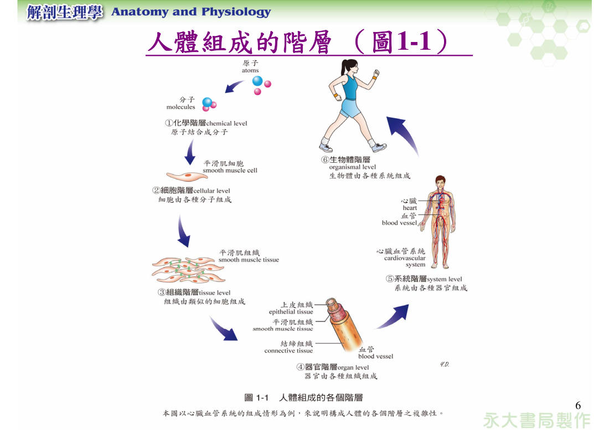
- 化學階層chemical level：原子結合成分子。
- 細胞階層cellular level：由各種分子組成細胞（例：平滑肌細胞）。
- 組織階層tissue level：由類似的細胞組成（例：平滑肌組織）。
- 器官階層organ level：由各種組織組成（例：血管，含上皮、平滑肌、結締組織）。
- 系統階層system level：由各種器官組成（例：心臟血管系統）。
- 生物體階層organismal level：由各系統組成完整個體。
記憶口訣
「化細組器系生」＝化學、細胞、組織、器官、系統、生物體（由小到大）。
人體的主要系統（表1-3，共 12 個）
| 系統 | 代表器官 | 功能 |
|---|---|---|
| 皮膚系統integumentary | 皮膚、毛髮、指甲、汗腺、皮脂腺 | 調節體溫、保護身體、排除廢物、接受溫度/壓力/痛等刺激 |
| 骨骼系統skeletal | 骨骼、軟骨、韌帶、關節（骨骼 206 塊；骨髓造血） | 支持及保護軟組織、與肌肉配合產生運動、貯存礦物質 |
| 肌肉系統muscular | 肌肉（骨骼肌 700 多塊；另有平滑肌、心肌） | 與骨骼配合產生運動、維持姿勢、產生熱量 |
| 神經系統nervous | 腦、脊髓、神經、眼耳等特殊感覺器官 | 經由神經衝動調節身體活動 |
| 內分泌系統endocrine | 甲狀腺、腎上腺、腦下垂體、松果腺、胸腺、胰臟、睪丸、卵巢 | 藉心臟血管系統輸送激素至標的器官而調節身體活動 |
| 心臟血管系統cardiovascular | 血液、心臟、血管 | 送氧、養分、激素至細胞，帶走CO2與廢物；維持酸鹼平衡、抵抗疾病、形成血塊防出血、調節體溫 |
| 淋巴系統lymphatic | 淋巴、淋巴管、脾臟、胸腺、淋巴結、扁桃體 | 將蛋白質及血漿送回血管系統、將部分脂肪由消化道送入血管、過濾體液、製造淋巴球、抵抗疾病 |
| 呼吸系統respiratory | 鼻腔、咽、喉、氣管、支氣管、肺 | 供給O2、排除CO2、幫助調節酸鹼平衡 |
| 消化系統digestive | 食道、胃、腸；附屬器官：唾液腺、肝、膽囊、胰 | 消化及吸收食物，排出不能吸收的部分 |
| 泌尿系統urinary | 腎臟、輸尿管、膀胱、尿道 | 製造、收集、排除尿液；排除過多水分、鹽類、廢物；維持水分及電解質平衡 |
| 男性生殖系統male reproductive | 睪丸、輸精管、前列腺 | 繁殖生物體 |
| 女性生殖系統female reproductive | 卵巢、輸卵管（uterine tube）、子宮、陰道 | 繁殖生物體 |
（表1-3 把生殖系統合為一項共 11 項；圖1-2 另分男、女而為 12 圖。）
必背重點
- 骨骼 206 塊；骨骼肌 700 多塊。
- 皮膚＝調節體溫；骨骼＝支持＋貯礦物質＋（骨髓）造血；肌肉＝運動＋姿勢＋產熱。
- 神經系統：中樞＝腦＋脊髓；周邊＝神經。神經是「衝動」調節，內分泌是「激素」調節。
- 圖1-2 器官標示：松果腺 pineal、腦下垂體 pituitary、甲狀腺 thyroid、胸腺 thymus、腎上腺 adrenal、胰臟 pancreas；淋巴系統含扁桃體 palatine tonsil、脾 spleen、胸管 thoracic duct。
解剖學姿勢與方位術語
解剖學姿勢anatomical position：人體直立面對觀察者，上肢自然下垂置於身體兩側，手掌面朝前。（講義文字標「圖1-6」，但 p.10 的 Figure 1.6 其實是骨的形狀分類，疑為標號誤植。）
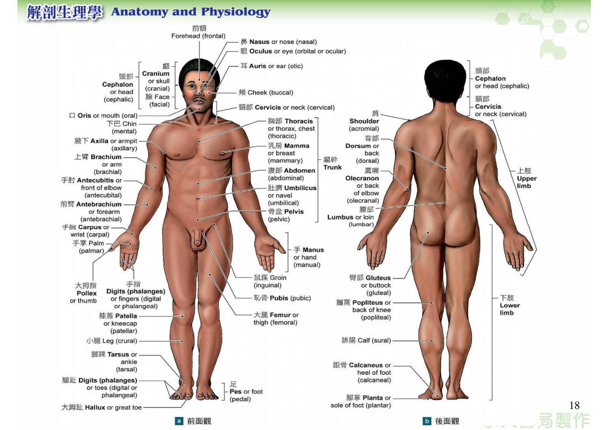
常見部位名：頭 cephalic、顱 cranial、面 facial、頸 cervical、胸 thoracic、腹 abdominal、骨盆 pelvic、腋 axillary、上臂 brachial、肘前 antecubital、前臂 antebrachial、腕 carpal、手 manus、鼠蹊 inguinal、股 femoral、膝蓋 patellar、膕窩 popliteal、小腿 crural、踝 tarsal、足 pedal；背側：背 dorsal、肘後 olecranal、腰 lumbar、臀 gluteal、小腿肚 sural、足跟 calcaneal、足底 plantar。
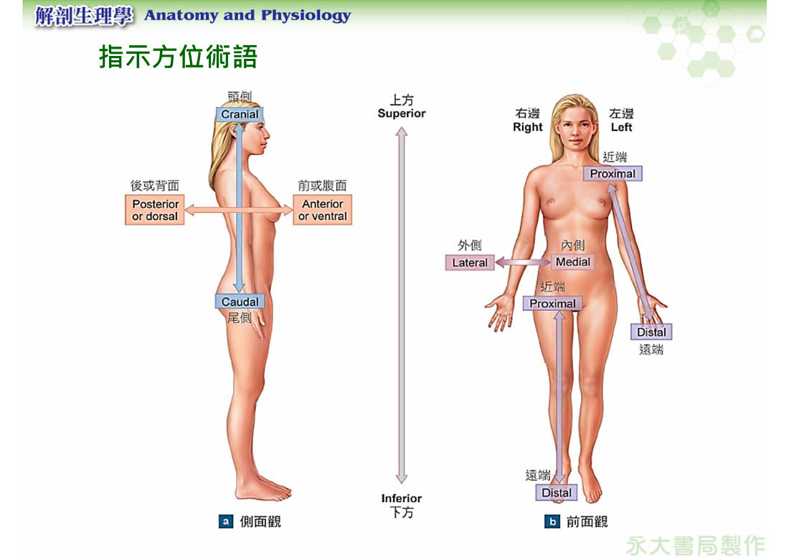
| 術語 | 定義 | 例子 |
|---|---|---|
| 上方superior (cephalic/cranial) | 朝向頭部或構造的上面部分 | 胸腔在腹腔上方 |
| 下方inferior (caudal) | 遠離頭部或向著構造的下面 | 頸部在頭部下方 |
| 前面（腹面）anterior (ventral) | 靠近身體前面 | 氣管位於食道前面 |
| 後面（背面）posterior (dorsal) | 靠近身體後面 | 心臟位於胸骨後面 |
| 內側medial | 靠近身體或構造的正中線 | 脛骨位於小腿內側 |
| 外側lateral | 遠離正中線 | 耳位於眼之外側 |
| 中間的intermediate | 介於內側與外側構造之間 | 食指位於中指及拇指之間 |
| 同側ipsilateral | 位於身體同側 | 脾臟與降結腸 |
| 對側contralateral | 位於身體不同側 | 膽囊與降結腸 |
| 近側proximal | 靠近四肢附著於軀幹處／構造的附著點 | 肱骨位於尺骨近側 |
| 遠側distal | 遠離四肢附著於軀幹處 | 膝蓋位於大腿遠側 |
| 淺層superficial | 靠近身體表面 | 手臂皮膚位於骨骼之淺層 |
| 深層deep | 遠離身體表面 | 手臂肌肉位於皮膚之深層 |
| 壁層parietal | 屬於或形成體腔之外壁 | 腹膜壁層＝腹膜腔外層 |
| 臟層visceral | 屬於內臟之被膜 | 腹膜臟層＝腹膜腔內層 |
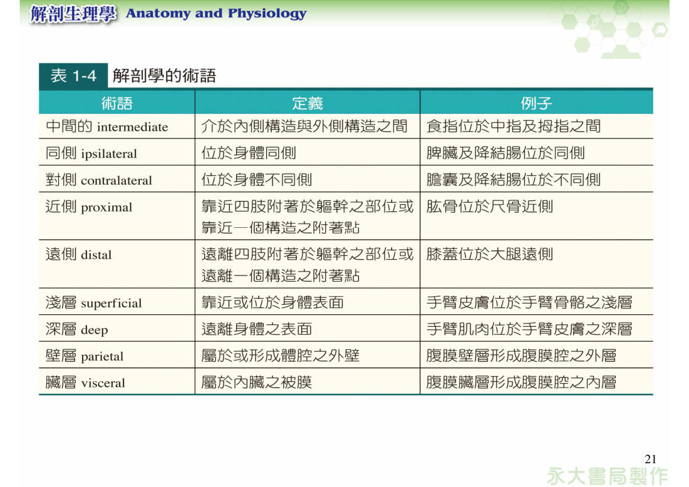
易混淆
- 同側 ipsilateral vs 對側 contralateral；近側 proximal vs 遠側 distal（只用於四肢／有附著點的構造）。
- 淺層 superficial vs 深層 deep；壁層 parietal（貼體壁）vs 臟層 visceral（貼器官）。
- cranial＝頭側＝superior；caudal＝尾側＝inferior；ventral＝anterior；dorsal＝posterior。
人體的三種基本剖面
| 剖面 | 切開方向 | 分成 |
|---|---|---|
| 矢狀切面sagittal plane | 前後方向切開 | 左、右兩半。通過正中線＝正中矢狀切面midsagittal；不通過正中線＝矢狀旁面parasagittal |
| 冠狀切面coronal＝額切面frontal plane | 左右方向切開 | 前、後兩半 |
| 水平切面horizontal＝橫切面transverse plane | 水平方向切開 | 上、下兩半 |
記憶口訣
矢＝左右、冠＝前後、水平＝上下。矢狀像箭由前射向後，把人劈成左右。
體腔（圖1-8）
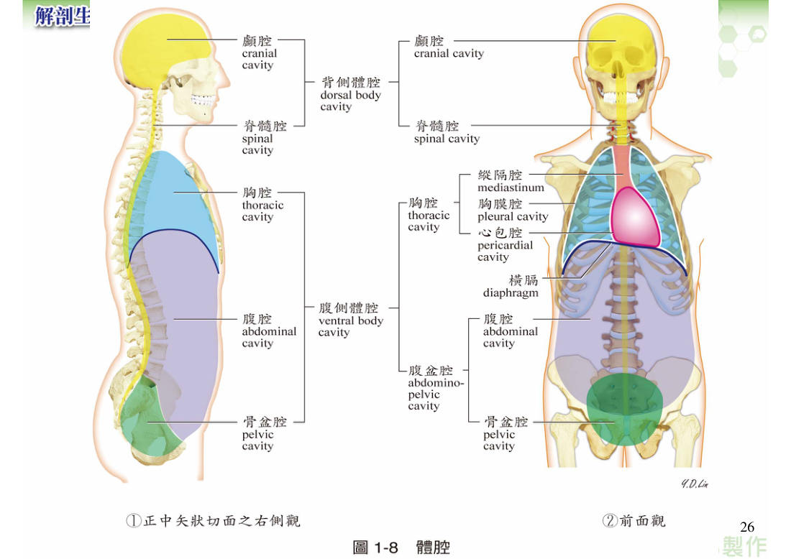
人體縱軸含兩大體腔：背側體腔（後腔）與腹側體腔（前腔）。
背側體腔 dorsal body cavity
位於背側、近體表，密閉；分兩部分：
- 顱腔cranial cavity：由顱骨圍成，含腦，經枕骨大孔與椎管相通。
- 脊髓腔spinal cavity：由各脊椎骨的椎孔相連而成，含脊髓及脊神經根。
腹側體腔 ventral body cavity
- 其內器官稱內臟viscera；腔壁由皮膚、結締組織、骨骼、肌肉及漿膜構成。
- 以橫膈diaphragm分為上部胸腔與下部腹盆腔。
胸腔 thoracic cavity：含三個腔
- 胸膜腔pleural cavity：胸膜圍成的密閉腔，左右各一，空間很小，不含器官，只有少量潤滑液；胸膜臟層蓋在肺表面。
- 縱隔腔mediastinum：左右肺之間，由前方胸骨延伸至後方脊柱。以胸骨角與第4胸椎(T4)連線為界：
- 上縱隔：氣管、食道、胸腺、大血管。
- 下縱隔再分前、中、後：前縱隔含胸腺（講義寫法）；中縱隔含心臟；後縱隔含食道、支氣管、胸管、降主動脈。
- 心包腔pericardial cavity：位於縱隔內，圍繞心臟的密閉小腔，不含心臟，含潤滑液；心包膜臟層蓋在心臟表面。
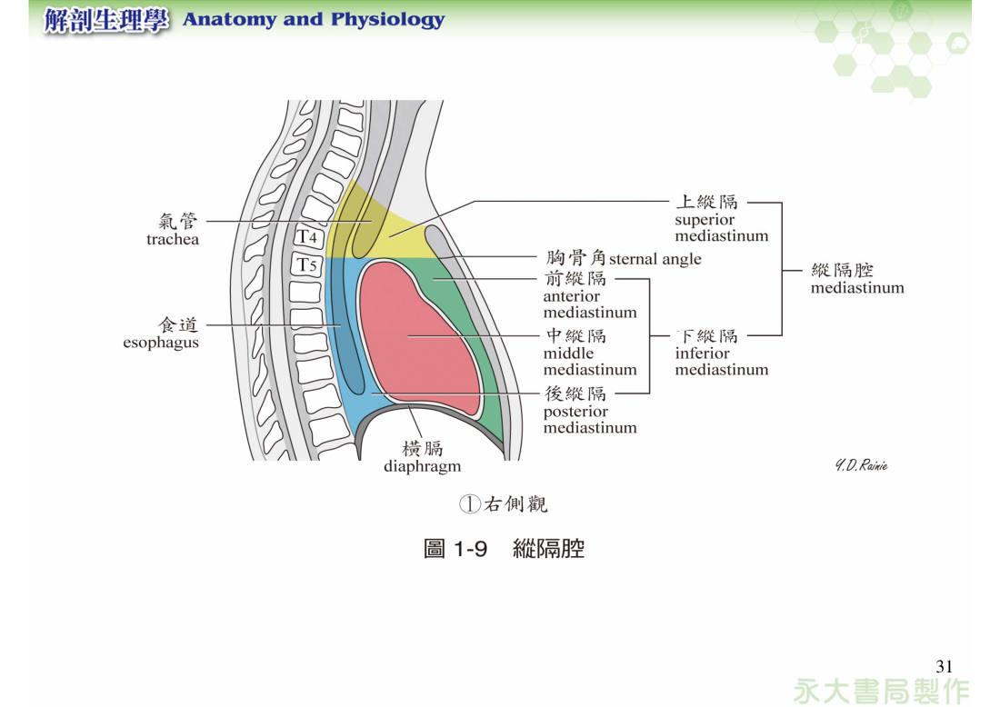
腹盆腔 abdominopelvic cavity
- 腹腔abdominal cavity：最大的體腔。上以橫膈與胸腔為界；下以薦岬（薦骨上緣）與恥骨聯合上緣的假想連線與骨盆腔為界。含胃、脾、肝、膽囊、胰、腎、小腸、大腸大部分、神經血管。
- 骨盆腔pelvic cavity：位於腹腔下方、與腹腔相連。含膀胱、乙狀結腸、直腸及內生殖器官（男：前列腺、精囊、輸精管；女：子宮、卵巢、輸卵管）。
易混淆
胸膜腔與心包腔都是「含液體、不含器官」的潛在空腔；器官（肺、心）是被其臟層覆蓋，而非在腔內。腎臟在腹腔（講義列於腹腔內容物）。
腹盆腔的區域劃分
九分法（圖1-10）
兩條水平線（分別通過左右肋骨下緣及左右髂骨結節）＋兩條垂直線（分別通過髂前上棘與恥骨聯合連線之中點），將腹部分九區。
| 右季肋區 | 腹上區 | 左季肋區 |
|---|---|---|
| 肝右葉、膽囊、十二指腸、結腸右曲、右腎上1/3 | 肝左葉及右葉靠中線部分、胃小彎及幽門部、十二指腸上部及下行部、胰頭與體部、左右腎上腺 | 胃體與胃底、脾臟、胰尾、結腸左曲、左腎上2/3 |
| 右腰區 | 臍區 | 左腰區 |
| 盲腸上半部、升結腸、右腎下2/3、部分十二指腸與迴腸 | 十二指腸下段、空腸、迴腸、橫結腸中段、腹主動脈、下腔靜脈、腎門 | 降結腸、左腎下1/3、空腸與結腸 |
| 右髂區 | 腹下區 | 左髂區 |
| 盲腸下半部、闌尾、右精索、右側卵巢與輸卵管 | 小腸、部分乙狀結腸、子宮、膀胱 | 乙狀結腸、左精索、左側卵巢與輸卵管 |
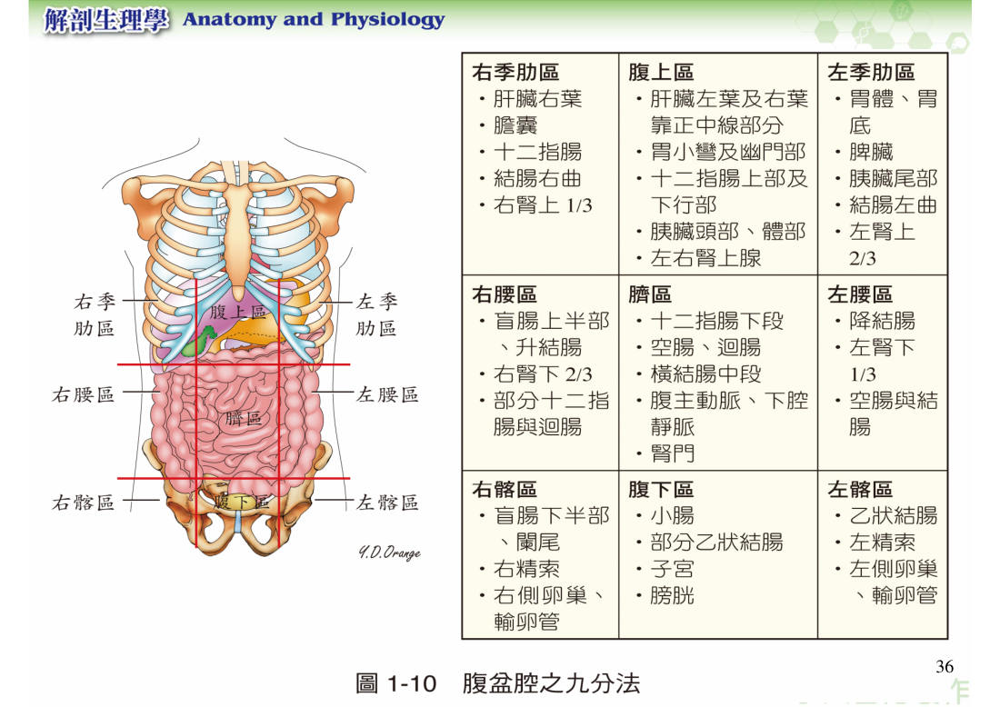
四象限（圖1-11）
通過肚臍的一條垂直線＋一條水平線，分四象限 quadrant。
| 象限 | 主要內容 |
|---|---|
| 右上 RUQ | 肝與膽囊、胰頭、幽門、十二指腸、結腸右曲（肝曲）、部分升結腸與橫結腸、右腎上腺、右腎上方 |
| 左上 LUQ | 肝左葉、胰體部、胃、部分小腸、結腸左曲（脾曲）、部分橫結腸與降結腸、左腎上腺、左腎上方 |
| 右下 RLQ | 右腎下方、部分升結腸、盲腸與闌尾、右精索、子宮右側、右卵巢與輸卵管 |
| 左下 LLQ | 左腎下方、部分降結腸、乙狀結腸、左精索、子宮左側、左卵巢與輸卵管 |
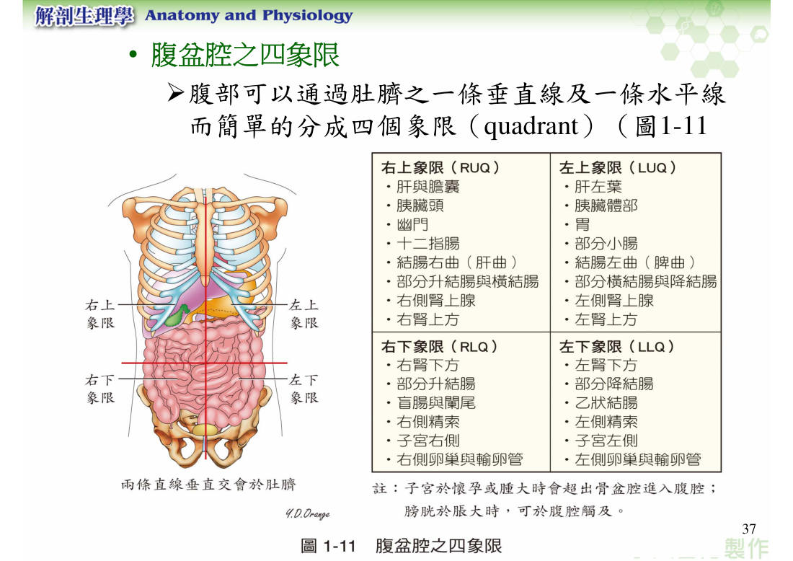
記憶口訣
闌尾炎＝右下（RLQ，盲腸闌尾在右下）；脾臟、胃＝左上（LUQ）；肝、膽＝右上（RUQ）。九分法上排「季腹季」、中排「腰臍腰」、下排「髂腹下髂」。
組織總論
組織tissue：一群胚胎來源及構造相似的細胞，以細胞間質緊密相連，共同執行特定功能。研究組織的學問＝組織學histology。
必背重點：四大類組織
- 上皮組織epithelial tissue
- 結締組織connective tissue
- 肌肉組織muscle tissue
- 神經組織nervous tissue
上皮組織 epithelial tissue
簡稱上皮 epithelium，包括上皮與腺體 gland。
上皮的特徵
- 有暴露於體外、腔室或通道的游離面，細胞以細胞接合cell junction緊密相連。
- 有極性polarity：游離的頂端 apical、細胞內部、基部 basal。
- 底部藉基底膜basement membrane與下層結締組織相接。
- 缺乏血管：養分由深層組織或游離面取得。
- 可快速再生：上皮細胞可能只存活 1–2 天，靠幹細胞stem cell持續有絲分裂維持。
上皮的功能
- 保護：避免磨損、脫水、化學或生物因子傷害。
- 過濾：進出身體的物質都需通過上皮。
- 感覺：含大量感覺神經，對刺激敏感。
- 分泌：產生分泌物的上皮細胞稱腺體細胞。
記憶口訣
上皮四功能「保過感泌」＝保護、過濾、感覺、分泌。
上皮的分類
- 被覆與內襯上皮：被覆上皮covering形成身體外表的蓋被；內襯上皮lining襯於腹側體腔、消化道、呼吸道、血管等腔面，並與神經組織構成感覺器官的一部分，也是產生配子（精子與卵）的組織。
- 腺體上皮 glandular epithelium：組成腺體的分泌部分。
被覆與內襯上皮：依「層數」與「形狀」分類
| 依層數 | 特性 |
|---|---|
| 單層上皮simple | 單層排列，有吸收或過濾功能，位於不易被撕傷處。 |
| 複層上皮stratified | 多層，無吸收或過濾功能，位於易被撕傷處。 |
| 偽複層上皮pseudostratified | 較少見；只有一層細胞，但有些細胞未達表層，看似多層。表面細胞可分泌黏液、含纖毛 cilia，把黏液或異物排出。 |
| 依細胞形狀 | 特性 |
|---|---|
| 鱗狀squamous | 扁平鱗片狀，像磁磚互相連接。 |
| 立方cuboidal | 橫切面呈方形，有時六角形。 |
| 柱狀columnar | 橫切面呈高的圓柱狀。 |
| 變形transitional | 數種形狀細胞集合，出現於需大張力或膨脹處。最底層立方至柱狀、中間層立方至多角形、最表層立方至鱗狀（依拉扯程度而變）。 |
易混淆
偽複層柱狀上皮「看起來多層、實際只有一層」；所有細胞都接觸基底膜。
上皮組織的分類（表3-1）
| 上皮種類 | 功能 | 分布部位 |
|---|---|---|
| 單層鱗狀 simple squamous | 擴散、滲透、過濾 | 肺泡、腎臟鮑氏囊、心臟血管內皮 |
| 單層立方 simple cuboidal | 分泌、吸收 | 腎小管上皮、腺體導管、甲狀腺濾泡、視網膜色素上皮 |
| 單層柱狀 simple columnar | 分泌、吸收、保護 | 輸卵管、部分消化道及呼吸道 |
| 複層鱗狀 stratified squamous | 保護 | 皮膚、口腔、食道、陰道、肛門 |
| 複層立方 stratified cuboidal | 保護 | 汗腺導管 |
| 複層柱狀 stratified columnar | 保護 | 食道與胃交接處 |
| 變形上皮 transitional | 容許擴張與收縮 | 膀胱與輸尿管 |
| 偽複層柱狀 pseudostratified columnar | 分泌、保護 | 氣管、男性尿道 |
| 外分泌腺 exocrine gland | 分泌 | 腺體 |
| 內分泌腺 endocrine gland | 分泌 | 腺體 |
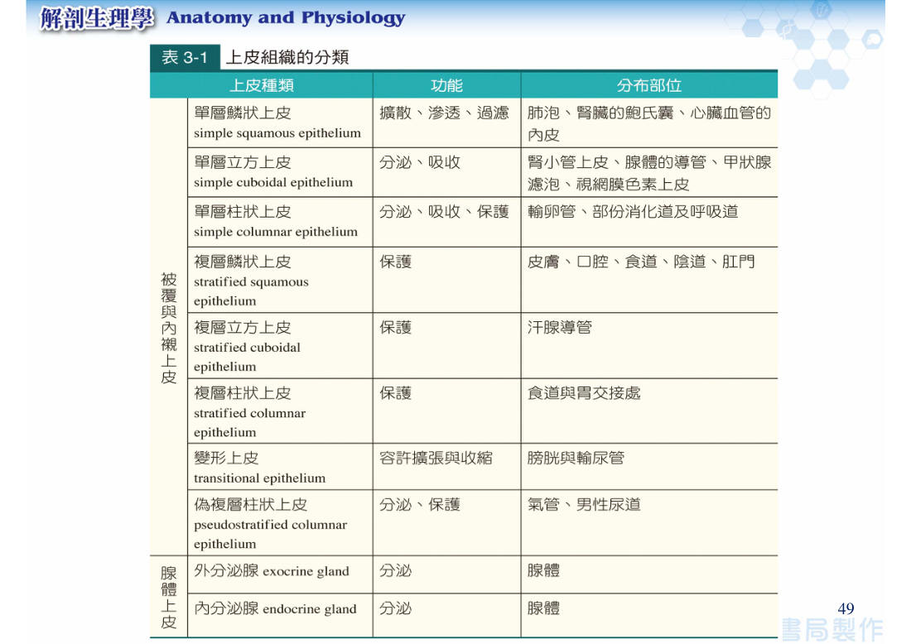
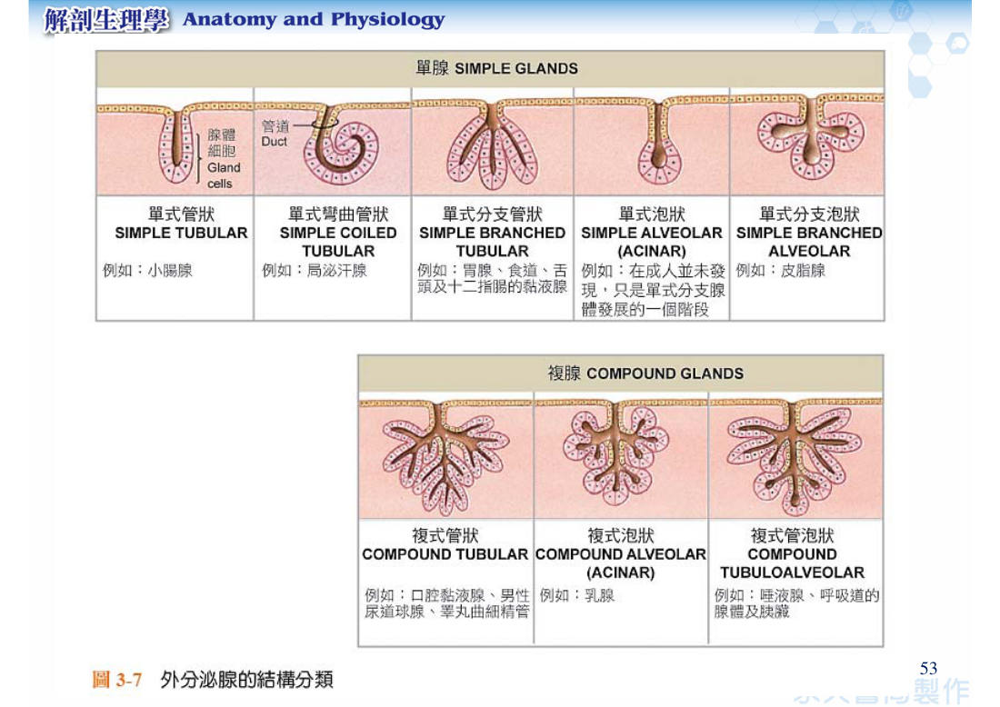
記憶口訣
薄而要「交換」的地方用單層鱗狀（肺泡、血管內皮）；要「耐磨」的地方用複層鱗狀（皮膚、口腔、食道、陰道、肛門）；要「撐大縮小」用變形（膀胱、輸尿管）；氣管有纖毛排痰＝偽複層纖毛柱狀。
腺體上皮 glandular epithelium
腺體上皮細胞聚集於被覆與內襯上皮深處而成腺體，具分泌功能。依分泌位置分兩類：
| 外分泌腺 exocrine | 內分泌腺 endocrine | |
|---|---|---|
| 導管 | 有導管，送到皮膚表面或空腔／其他上皮表面 | 無導管（無管腺） |
| 分泌物 | 黏液、汗液、油、蠟、消化酶等 | 激素 hormone，先入血液或淋巴再到作用部位 |
| 起源 | 上皮組織 | 胚胎來源亦起源於上皮組織 |
外分泌腺的結構分類
- 單細胞腺unicellular gland：只含一個細胞，例如消化道、呼吸道、泌尿與生殖道內襯上皮的杯狀細胞 goblet cell，分泌黏液潤滑黏膜。
- 多細胞腺multicellular gland：含導管與分泌部：
- 依分泌部形狀：管狀腺tubular（管狀）、泡狀腺acinar（燈泡狀）、管泡狀腺tubuloacinar（兩者皆有）。
- 依導管是否分支：單式腺simple（導管不分支）、複式腺compound（導管分支）。
| 類型 | 例子（圖3-7） |
|---|---|
| 單式管狀 simple tubular | 小腸腺 |
| 單式彎曲管狀 simple coiled tubular | 局泌汗腺 |
| 單式分支管狀 simple branched tubular | 胃腺、食道、舌頭及十二指腸的黏液腺 |
| 單式分支泡狀 simple branched alveolar | 皮脂腺 |
| 複式管狀 compound tubular | 口腔黏液腺、男性尿道球腺、睪丸生精管 |
| 複式泡狀 compound alveolar | 乳腺 |
| 複式管泡狀 compound tubuloalveolar | 唾液腺、呼吸道腺體及胰臟 |
易混淆
管狀／泡狀＝看「分泌部形狀」；單式／複式＝看「導管有無分支」。外分泌有導管、內分泌無導管。
結締組織 connective tissue
體內含量最多、分布最廣的組織。均含細胞、基質 ground substance、纖維 fiber。
功能（6 項）
- 提供構造上的支架
- 運輸體內物質
- 保護器官
- 連接不同組織
- 貯存能量及礦物質
- 吞噬細胞碎片及入侵微生物
口訣：「支運保連貯吞」。
細胞均由胚胎期的間質細胞 mesenchymal cell 分化而來。除軟骨不含血管外，結締組織均富含血管。
四大類
- 固有結締組織connective tissue proper：疏鬆、緻密、脂肪、彈性、網狀結締組織。
- 軟骨cartilage：透明、纖維、彈性軟骨。
- 硬骨bone。
- 血液blood：液體結締組織。
（軟骨與硬骨合稱支持性結締組織。）
固有結締組織的細胞
| 細胞 | 功能 |
|---|---|
| 成纖維細胞fibroblast | 纖細或星形；合成、分泌結締組織纖維；分泌玻尿酸使基質具黏性 |
| 巨噬細胞macrophage | 吞噬受傷細胞及入侵病原體 |
| 脂肪細胞adipose cell | 貯存脂肪 |
| 幹細胞stem cell | 組織受傷或更新時分裂增生，分化成其他結締組織細胞 |
| 肥胖細胞mast cell | 製造肝素 heparin（防血液凝固）與組織胺 histamine（增加受傷處血流） |
| 漿細胞plasma cell | 由 B 淋巴球分化，產生抗體 |
三種纖維
| 纖維 | 成分／特性 | 常見部位 |
|---|---|---|
| 膠原纖維collagenous（白纖維） | 膠原蛋白 collagen 成束；數量最多、較粗、無分枝、強韌、抗拉力 | 硬骨、軟骨、肌腱、韌帶、硬腦膜 |
| 彈性纖維elastic（黃纖維） | 彈性蛋白 elastin；較細、不規則分枝、伸展性大 | 皮膚、血管、肺臟 |
| 網狀纖維reticular | 主要由膠原蛋白組成，表面包醣蛋白；很細、分枝成網；支持與強固 | 脾臟、淋巴結 |
基質 ground substance
散佈於纖維與細胞之間，由糖胺聚醣 glycosaminoglycan 與蛋白質結合成蛋白聚醣 proteoglycan。成分含玻尿酸、硫酸軟骨素、硫酸皮膚素、硫酸角質素及附著蛋白；影響組織的發育、移動、增生、形狀與代謝。
固有結締組織的種類
| 種類 | 特徵 | 位置／功能 |
|---|---|---|
| 疏鬆結締組織loose (areolar) | 體內含量最多；膠原纖維較少、彈性纖維較多，鬆散交織；延展性好但易撕裂；蜂窩狀故稱蜂窩組織，發炎＝蜂窩組織炎 cellulitis | 皮下（連接皮膚與肌肉）、填充肌肉間隙、使神經血管黏附周圍構造、腸繫膜、胃腸／呼吸／泌尿道內襯上皮下 |
| 脂肪組織adipose | 脂肪細胞 adipocyte（起源於成纖維細胞）；大脂肪滴擠壓核到邊緣，形似印章戒指 signet ring；貯存三酸甘油酯 | 皮下層、腎周圍、心臟基部與表面、長骨骨髓、關節周圍、眼球後；絕緣體、減少熱散失、主要能量來源 |
| 緻密規則結締組織dense regular | 膠原纖維沿拉力方向整齊平行排列；銀白、堅韌；又稱白色纖維組織 | 肌腱、腱膜、韌帶 |
| 緻密不規則結締組織dense irregular | 膠原纖維交織、方向不規則，常呈片狀 | 肌膜、真皮深層、骨外膜、軟骨外膜、器官被膜 |
| 彈性結締組織elastic | 分枝彈性纖維，黃色；可牽張並彈回 | 喉軟骨、彈性血管壁、氣管、支氣管、肺；黃韌帶 ligamentum flavum（脊椎）、項韌帶 ligamentum nuchae、陰莖懸韌帶、真聲帶 |
| 網狀結締組織reticular | 交織的網狀纖維與網狀細胞 | 淋巴組織的主要架構；為肝、脾、淋巴結提供精緻支持基質；幫助平滑肌細胞連結 |
脂肪組織的兩種
| 白色脂肪 white | 棕色脂肪 brown | |
|---|---|---|
| 脂滴 | 細胞質內一個大脂滴 | 許多小脂滴，細胞間微血管網豐富 |
| 分布 | 成人皮下層 | 新生兒較多、成人較少 |
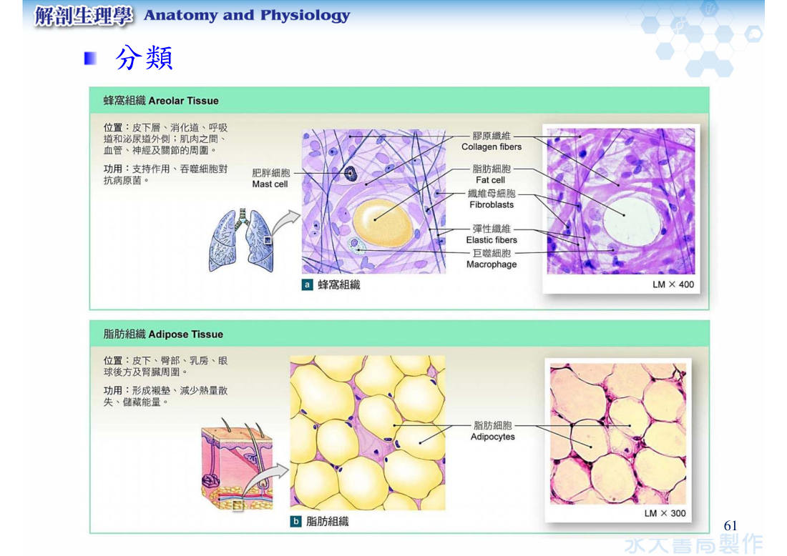
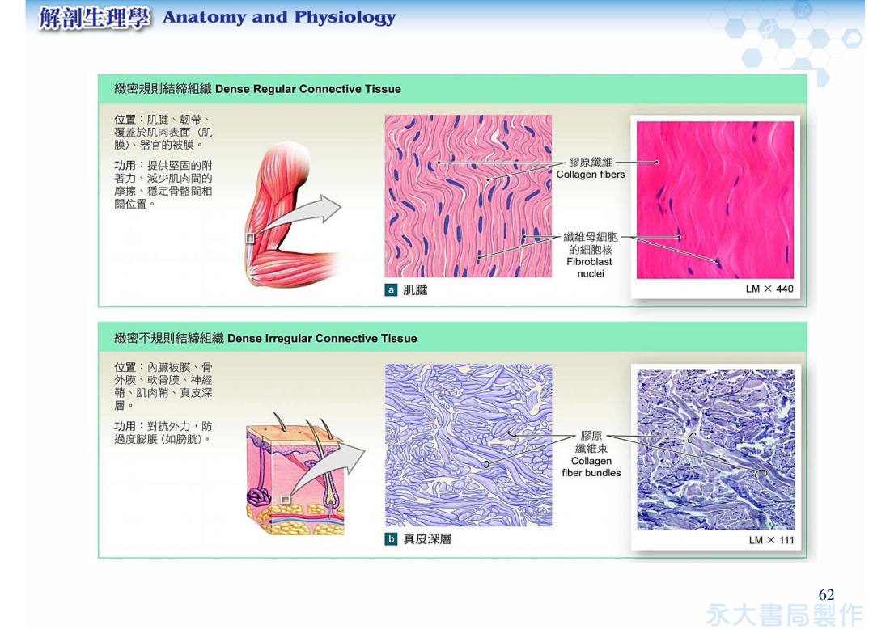
易混淆
- 緻密規則（平行排列：肌腱、韌帶）vs 緻密不規則（交織：真皮深層、被膜）。
- 膠原纖維（白、粗、強韌、抗拉）vs 彈性纖維（黃、細、可伸展）vs 網狀纖維（細、網狀，脾與淋巴結）。
- 黃韌帶／項韌帶屬彈性結締組織，不是緻密規則。
軟骨 cartilage（支持性結締組織）
- 強固結締組織，支持與保護。膠狀基質含硫酸軟骨素及交織的膠原與彈性纖維；只含軟骨細胞chondrocyte，位於陷窩lacunae（骨隙）內。
- 外包軟骨外膜perichondrium。無血管或神經，靠基質與外膜血管擴散供養；再生修復慢。
| 種類 | 特徵 | 分布 |
|---|---|---|
| 透明軟骨hyaline | 含不易染色的緻密膠原纖維；體內最多；提供彈性與支持 | 關節軟骨、骨骺板、肋軟骨；鼻、喉、氣管、支氣管（維持呼吸道通暢） |
| 纖維軟骨fibrocartilage | 含大量膠原纖維；強固、緩衝襯墊 | 活動度大或需強力支持處：脊柱椎間盤、恥骨聯合 |
| 彈性軟骨elastic | 軟骨細胞位於彈性纖維線狀網；提供強度並維持形狀 | 會厭、耳翼、耳咽管、鼻翼 |
記憶口訣
透明＝「關節肋骨氣管」；纖維＝「椎間盤、恥骨聯合」（耐壓緩衝）；彈性＝「會厭、耳、鼻翼」（外形要彈回）。
硬骨 bone
- 軟骨與硬骨共同構成骨骼系統；含大量間質與骨細胞osteocyte。
- 間質由礦物鹽類（主要磷酸鈣、碳酸鈣）與膠原纖維組成；鹽類造成硬度。
- 依間質與細胞排列分緻密骨compact bone與海綿骨spongy bone。
- 緻密骨基本單位＝骨元osteon＝哈氏系統Haversian system，由骨板、陷窩、骨小管、中央管組成。
骨骼系統功能
支持軟組織、保護脆弱構造、與骨骼肌一起產生運動、儲存鈣與磷、紅骨髓製造血球。
軟骨與硬骨的比較（表3-3）
| 特性 | 軟骨 | 硬骨 |
|---|---|---|
| 細胞 | 隙內含軟骨細胞 | 隙內含骨細胞 |
| 基質 | 軟骨質（蛋白糖）、水 | 不可溶的鈣鹽結晶（磷酸鈣和碳酸鈣） |
| 纖維 | 膠原、彈性及網狀纖維 | 主要是膠原纖維 |
| 血管 | 無 | 廣泛 |
| 覆蓋物 | 軟骨膜 | 骨外膜 |
| 強度 | 有限：易彎曲但不易斷裂 | 堅固：對抗外力到破裂點 |
| 氧氣需求 | 相對低 | 相對高 |
| 營養運送 | 經由基質擴散 | 經由細胞質與骨小管內的液體擴散 |
| 修護能力 | 有限 | 旺盛 |
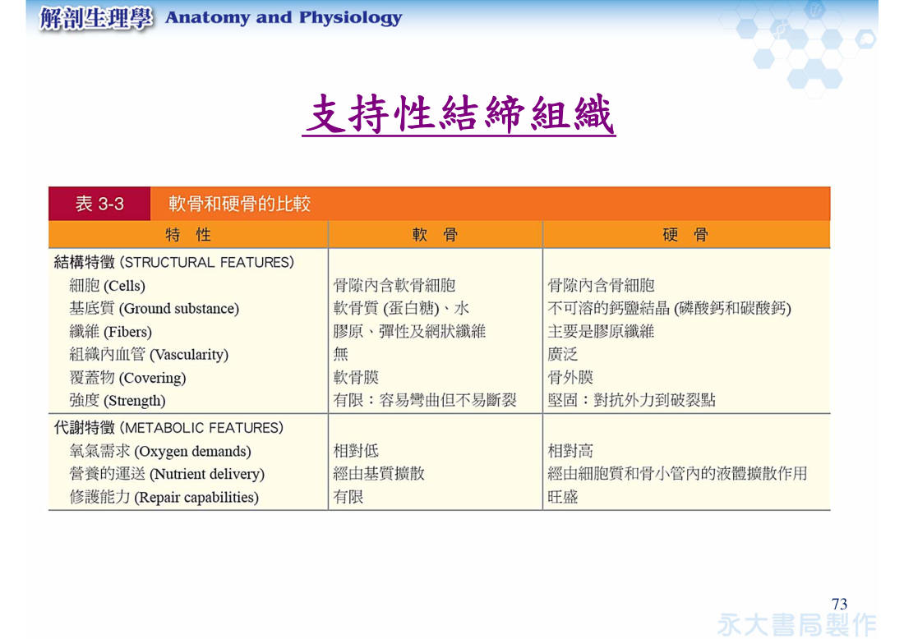
血液 blood
液狀結締組織，由定形成分與血漿 plasma 組成。
- 紅血球 erythrocyte：將氧由肺攜往全身，並把CO2送回肺排出。
- 白血球 leukocyte：與吞噬、免疫及過敏反應有關。
- 血小板 platelet：與血液凝固有關。
- 血漿：稻草色液體，主要為水及可溶物（營養物質、酶、激素、呼吸氣體、離子）。
肌肉組織 muscle tissue
由肌肉細胞組成，收縮時引起運動；分三類。
| 骨骼肌 skeletal | 心肌 cardiac | 平滑肌 smooth | |
|---|---|---|---|
| 位置 | 與骨骼相連 | 形成心臟厚壁 | 中空構造壁：血管、胃、腸、膀胱 |
| 細胞形態 | 圓筒狀纖維，多核，核靠近肌漿膜 | 略呈四方形，單核、位中央 | 梭狀，單核位中央 |
| 橫紋 | 有（橫紋肌） | 有 | 無 |
| 意識控制 | 隨意肌 voluntary | 不隨意肌 | 不隨意肌 |
| 特有構造 | 肌原纖維 myofibril（暗帶與明帶）、肌漿膜 sarcolemma、肌漿 sarcoplasm | 肌間盤 intercalated disc：強化組織、幫助神經傳導 | — |
記憶口訣
骨骼肌「多核、橫紋、隨意」；心肌「單核、橫紋、不隨意、有肌間盤」；平滑肌「單核、無橫紋、不隨意」。
神經組織 nervous tissue
位於腦、脊髓及周邊神經；由神經細胞neuron與神經膠細胞neuroglia組成。
- 神經元：神經系統的結構與功能單位；接受刺激，轉為神經衝動，傳給另一神經元、肌纖維或腺體。
- 細胞體 cell body：含核及胞器。
- 樹突 dendrite：高度分枝，把衝動傳向細胞體。
- 軸突 axon：只有一條，把衝動傳離細胞體。
- 神經膠細胞：支持、修護神經組織，提供神經元營養。
記憶口訣
樹突「入」、軸突「出」（Dendrite toward、Axon away）；軸突只有一條。
膜 membrane
依上皮層與其下結締組織結合方式分類：
- 上皮膜epithelial membrane（由上皮＋其下結締組織組成）：黏膜、漿膜、皮膜。
- 滑膜synovial membrane：由不完整的上皮層（實際不含上皮層）構成。
| 膜 | 組成 | 位置與功能 |
|---|---|---|
| 黏膜mucous membrane | 上皮層（有杯狀細胞分泌黏液）＋結締組織層固有層 lamina propria | 襯於對外開口的管腔：消化道、呼吸道、泌尿道、生殖道。上皮因部位而異（食道＝複層鱗狀；腸＝單層柱狀）。潤滑保護；呼吸道捕捉顆粒；消化道潤滑食物、分泌消化酶、吸收營養。固有層連結上皮與下層、使黏膜有彈性、固定血管、保護下方肌肉、供應上皮氧與營養並移除廢物 |
| 漿膜serous membrane | 薄的疏鬆結締組織＋外覆一層間皮 mesothelium | 襯於不直接開口體外的體腔並覆蓋腔內器官。雙層壁囊：壁層貼體腔壁、臟層覆蓋器官；兩層間的小腔含間皮分泌的漿液，減少摩擦 |
| 皮膜cutaneous membrane | 角質化複層鱗狀上皮＋緻密不規則結締組織 | 即皮膚；覆蓋身體表面；較厚、防水、通常乾燥 |
| 滑膜synovial membrane | 滑膜細胞 synoviocytes、疏鬆結締組織、彈性纖維及脂肪；無上皮層 | 襯於關節腔；滑液潤滑骨端、減輕摩擦，也是關節軟骨的營養來源 |
三種漿膜
| 漿膜 | 位置 |
|---|---|
| 胸膜pleura | 襯於胸腔並包覆肺 |
| 腹膜peritoneum | 襯於腹腔並包覆腹腔器官及部分骨盆腔器官；體內最大的漿膜 |
| 心包膜pericardium | 襯於心包腔並覆蓋心臟 |
易混淆
- 黏膜（通向體外的管道、有杯狀細胞、有固有層）vs 漿膜（封閉體腔、有間皮、分泌漿液）。
- 滑膜不屬上皮膜，無上皮層。
- 皮膜＝皮膚，是上皮膜中唯一「乾」的。
記憶口訣
上皮膜三兄弟「黏漿皮」；滑膜是沒有上皮的「關節專屬」膜。黏膜通外、漿膜封閉。
組織修復 tissue repair
新組織取代死亡或受傷細胞的過程。新細胞兩個來源：
- 來自支持性結締組織（基質細胞複製）。
- 來自器官功能部分的細胞（實質細胞複製，例：腸上皮細胞能分泌與吸收）。
- 能否恢復正常構造與功能，取決於修復時活化的是實質細胞還是基質細胞。
- 只靠實質細胞修復 → 良好修復。若成纖維細胞積極參與 → 被新結締組織疤痕組織scar tissue取代；疤痕組織不能執行實質組織功能，形成後無法恢復功能。
- 修復好壞主要看實質組織的再生能力（需實質細胞快速複製）。
修復過程
- 輕微受傷：膿液流掉或再吸收，實質組織再生即完成修復。
- 皮膚大面積受傷：液體自微血管流失使區域變乾；血塊中纖維蛋白變硬成痂scab封住傷口。
- 大而嚴重的傷口：基質與實質細胞都主動修復：
- 許多成纖維細胞快速分裂、產生新膠原纖維提供強度，並增加小血管數量。
- 形成活化生長的結締組織＝顆粒組織granulation tissue；跨過整個傷口作支架，支持上皮細胞移入並填滿，且分泌殺菌液體。
影響修復的三因素
- 營養（最重要）：細胞多為蛋白質，需富含蛋白質食物；維生素有直接功用。
- 血液循環：運送氧、養分、抗體、防禦細胞到傷處，並運走體液、缺氧血球、細菌、異物與細胞殘餘物。
- 年齡：年輕者癒合較快、疤痕較小（營養較佳、血供較好、代謝率快、細胞分裂快）。
與修復有關的維生素
| 維生素 | 角色 |
|---|---|
| 維生素 A | 對上皮組織替換重要，特別是呼吸道上皮 |
| 維生素 B 群 | 細胞中許多酶系統的輔酶，特別是葡萄糖分解成CO2和水的酶，對心臟與神經系統重要 |
| 維生素 C | 直接影響細胞間質的生產與維持；結締組織製造膠原纖維需要；強化並促進新血管形成。缺乏時連表面傷口都不會好、血管壁變脆易破裂 |
| 維生素 D | 腸道正常吸收鈣所必需；鈣使骨骼硬、為骨折復原所需 |
| 維生素 E | 一般認為促進受傷組織癒合、防止疤痕形成 |
| 維生素 K | 協助血液凝固，防止出血不止 |
記憶口訣
A＝上皮（呼吸道）；B＝酶的輔酶（心與神經）；C＝膠原、血管；D＝吸鈣；E＝防疤；K＝凝血（K 像 Koagulation）。
易混淆
實質細胞修復＝功能恢復（如腸上皮再生）；基質細胞（成纖維細胞）修復＝疤痕、功能喪失。痂 scab（表面纖維蛋白硬化）vs 顆粒組織 granulation tissue（深層新生結締組織）。
骨骼系統總論
骨骼系統skeletal system由骨骼組織osseous tissue與軟骨cartilage共同組成；構成人體基本形狀、形成支架並保護內臟，並與肌肉配合形成關節、產生運動。
骨骼的五大功能
必背重點
- 支持 support：身體支架，支撐軟組織與器官，提供肌肉附著點；下肢骨支撐體重。
- 保護 protect：頭顱骨→腦；脊椎骨→脊髓；胸廓→心、肺、大血管；骨盆→內部生殖器官。
- 運動 movement：骨骼肌經肌腱或腱膜附著於骨；骨＝槓桿、關節＝支點，肌肉收縮產生運動（走路、抓握、轉頭）。
- 儲存 storage：(1)礦物質：鈣、磷（需要時釋放入血）；(2)脂肪：黃骨髓yellow bone marrow（由紅骨髓被脂肪取代而成，含脂肪細胞及少量血球，為化學能源儲存處）。
- 造血 hematopoiesis：紅骨髓red bone marrow製造紅血球、某些白血球、血小板。
記憶口訣
「支保運儲血」＝支持、保護、運動、儲存、造血。
造血部位
- 紅骨髓位於扁平骨的板障（板障diploe）及長骨的海綿骨空腔內。
- 新生兒：骨髓腔及海綿骨空腔都是紅骨髓。
- 成人：大部分長骨黃骨髓延伸到骨骺，長骨僅剩肱骨及股骨的頭部仍造血；主要造血構造是扁平骨（如胸骨）的板障及不規則骨（如髖骨）。
易混淆
紅骨髓＝造血；黃骨髓＝脂肪儲存（成人骨髓腔內）。新生兒幾乎全是紅骨髓，成人長骨髓腔內主要是黃骨髓。
骨骼組織成分
- 骨與軟骨是兩種結締組織，含大量細胞間質與散布的細胞。
- 細胞間質富含鹽類（主要磷酸鈣，部分碳酸鈣），形成氫氧磷灰質hydroxyapatites，約占骨總重67%；其餘33%為細胞、纖維（以膠原纖維為主）與基質。
- 細胞：造骨細胞osteoblast、骨細胞osteocyte、蝕骨細胞osteoclast。
- 鹽類堆積在膠原纖維上使骨變硬＝鈣化calcification。
骨骼的分類
一、依部位分類（成人共 206 塊）
| 分類 | 塊數 | 包含 |
|---|---|---|
| 中軸骨骼axial skeleton | 80 | 頭顱骨 22（腦顱 8＋顏面 14）、附屬骨 7（舌骨 1＋聽小骨 6）、脊柱 26、胸廓 25（胸骨 1＋肋骨 24） |
| 附肢骨骼appendicular skeleton | 126 | 上肢 60、下肢 60、肩帶 4（鎖骨 2＋肩胛骨 2）、骨盆帶 2（髖骨 2） |
上肢 60＝肱骨 2＋尺骨 2＋橈骨 2＋腕骨 16＋掌骨 10＋指骨 28；下肢 60＝股骨 2＋腓骨 2＋脛骨 2＋髕骨 2＋跗骨 14＋蹠骨 10＋趾骨 28。
必背重點
206＝80＋126。聽小骨（每側 3 塊，共 6 塊）依講義歸於中軸骨骼介紹；其中鐙骨是人體最小的骨骼。
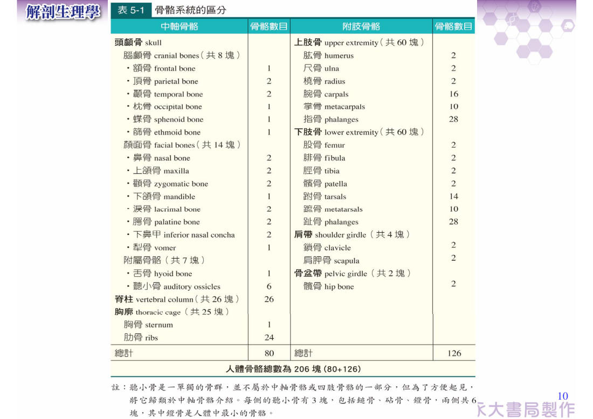
二、依外形分類（五類）
| 類別 | 特徵 | 例子 |
|---|---|---|
| 長骨long bone | 長度遠大於寬度；一個骨幹＋二個骨端；長軸稍彎曲，使體重壓力由各部分吸收 | 肱骨、尺骨、橈骨、掌骨、指骨、股骨、脛骨、腓骨、蹠骨、趾骨 |
| 短骨short bone | 長寬相似，略呈立方形 | 上肢腕骨、下肢跗骨 |
| 扁平骨flat bone | 薄；兩層平行緻密骨板夾一層海綿骨；保護並提供肌肉附著大面積 | 頂骨、胸骨、肋骨、肩胛骨 |
| 不規則骨irregular bone | 形狀複雜 | 脊椎骨、蝶骨、部分顏面骨 |
| 種子骨sesamoid bone | 位於肌腱或韌帶內的小骨，常在手腕或膝蓋 | 豆狀骨（尺側屈腕肌腱）；髕骨＝人體最大種子骨（股四頭肌腱） |
記憶口訣
「長短扁不種」＝長骨、短骨、扁平骨、不規則骨、種子骨。
（講義 p.12 誤植：「肢的腕骨」應為「上肢的腕骨」。）
骨骼的巨觀構造（以長骨／肱骨為例）
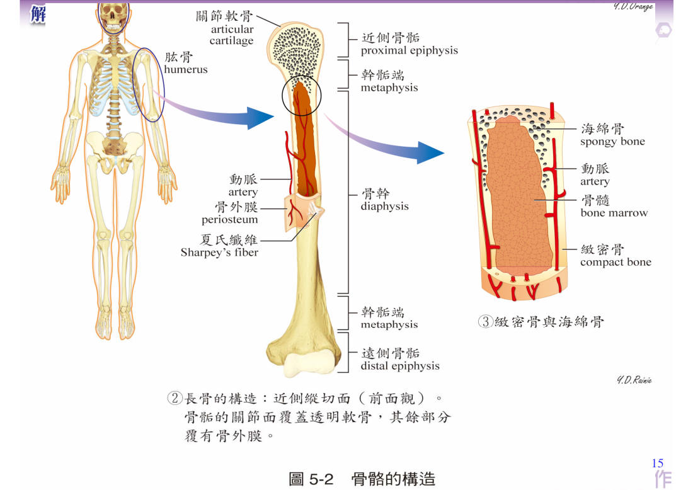
| 構造 | 說明 |
|---|---|
| 骨幹diaphysis | 長軸主要部分。由外而內：骨外膜→緻密骨→骨內膜→海綿骨→骨髓腔 |
| 骨骺epiphysis | 兩端，通常比骨幹寬；外層薄緻密骨，中間疏鬆海綿骨 |
| 幹骺端metaphysis | 骨幹與骨骺之間；含骨骺板epiphyseal plate（使骨變長）；骨化成骨骺線epiphyseal line後，長度生長停止 |
| 關節軟骨articular cartilage | 覆蓋關節面的薄層透明軟骨；此處沒有骨外膜 |
| 骨外膜periosteum | 覆於骨表面的緻密白纖維（關節軟骨除外）。外層纖維層（結締組織，含進入骨的血管、淋巴管、神經）；內層生骨層（彈性纖維、血管、造骨細胞、蝕骨細胞）。對骨的生長、修復、營養很重要，是韌帶與肌腱附著處。夏氏纖維Sharpey's fiber延伸進骨基質使其附著 |
| 骨內膜endosteum | 襯於骨髓腔的一層造骨細胞，散布蝕骨細胞 |
| 骨髓腔marrow cavity | 骨幹中的空腔；成人內含脂肪＝黃骨髓，散布少許血球 |
扁平骨：兩面薄層緻密骨板，中間夾海綿骨＝板障 diploe（如頂骨、額骨）；表面有骨外膜，空腔襯骨內膜。
易混淆
骨外膜（外表面，含生骨層）vs 骨內膜（襯骨髓腔）；骨骺板（生長中，軟骨）vs 骨骺線（成年後骨化的殘跡，不再長高）。
骨骼的微觀構造
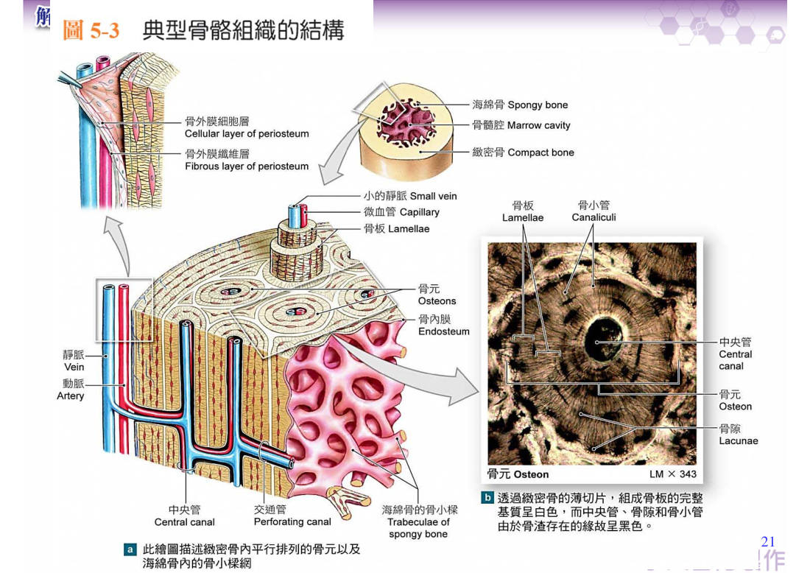
鈣化的細胞間質＝骨質，呈板層狀＝骨板lamella。骨內的空間供血管通過、供應營養並減輕重量。
緻密骨 compact bone
- 分布於長骨骨幹與扁平骨表層；保護、支持、承受壓力。
- 基本單位：哈氏系統Haversian system＝骨元osteon。
- 哈氏管Haversian canal（中央管 central canal）：與骨長軸平行，被同心圓骨板環繞，內有神經、血管。
- 佛氏管Volkmann's canal（穿通管 perforating canal）：與長軸垂直，連通骨外膜的血管神經與哈氏管、骨髓腔。
- 陷窩lacunae（骨隙）：骨板間的小空隙，含成熟骨細胞；陷窩間以骨小管canaliculi（含骨細胞突起）相連，並通到哈氏管，使營養進入、廢物排出。
- 間骨板interstitial lamella：骨元之間不完整的骨板，是重塑時舊骨元被破壞後的殘片；含陷窩、骨細胞、骨小管，但通常與骨元不相通。
易混淆
哈氏管＝縱向（平行長軸）；佛氏管＝橫向（垂直長軸）。
海綿骨 spongy bone
- 疏鬆多孔，由不規則的骨小樑trabecula構成；骨小樑內有陷窩、骨細胞、骨小管。
- 某些骨的骨小樑間隙充滿紅骨髓。
- 血管自骨外膜穿入；骨小樑內骨細胞直接從骨髓腔循環血液獲得營養（不靠哈氏管）。
骨骼的發育與生長
骨化 ossification
- 骨組織源自間葉細胞mesenchymal cell（胚胎結締組織細胞）。
- 胚胎第 6 週時骨骼完全由纖維膜與透明軟骨構成，之後開始骨化。
- 無血管區：間葉細胞→軟骨母細胞chondroblast（形成軟骨）；有血管處→造骨細胞（形成硬骨）。
- 膜內與軟骨內骨化產生的都是硬骨，只是形成過程與形狀不同。
| 類型 | 特點 | 例子 |
|---|---|---|
| 膜內骨化intramembranous ossification | 在纖維膜上或膜內形成，較單純直接。過程：形成骨化中心→形成骨基質（類骨質）→形成海綿骨（骨小樑）→形成緻密骨板 | 頭顱的扁平骨（如頂骨）、鎖骨 |
| 軟骨內骨化endochondral ossification | 透明軟骨被骨組織取代；人體大多數骨骼（含部分頭顱骨）的形成方式 | 脛骨（講義範例） |
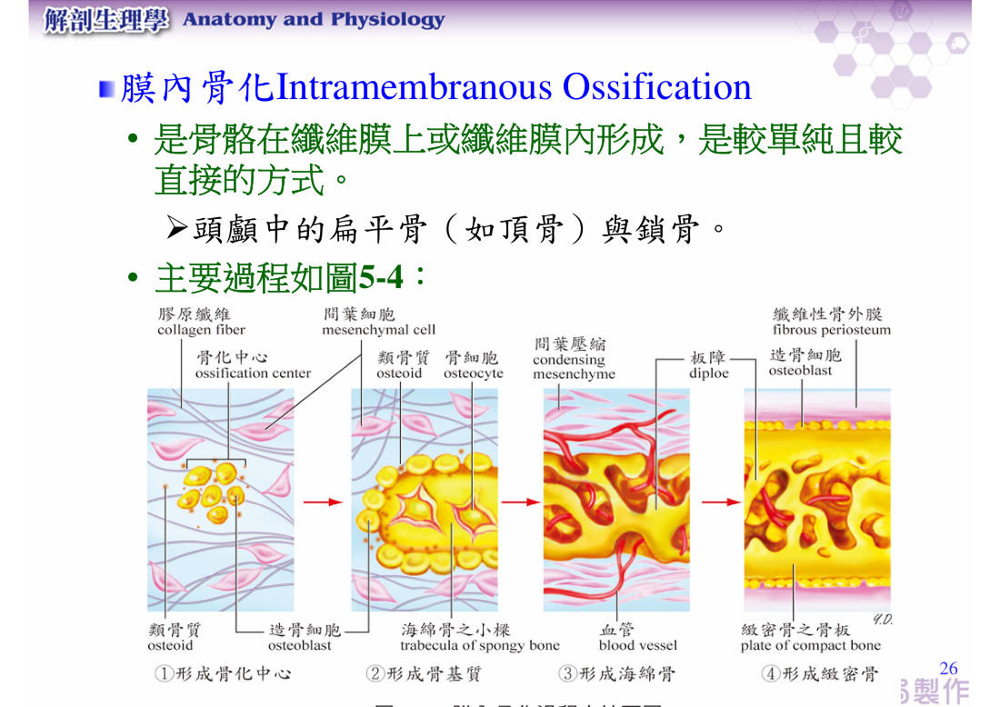
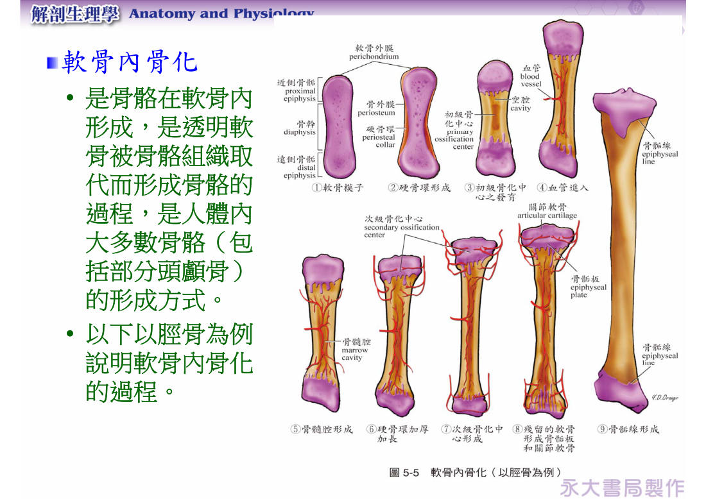
必背重點
軟骨內骨化九步（圖5-5）：①軟骨模子→②硬骨環形成→③初級骨化中心→④血管進入→⑤骨髓腔形成→⑥硬骨環加厚→⑦次級骨化中心形成→⑧殘留軟骨形成骨骺板與關節軟骨→⑨骨骺線形成。
骨的生長（骨骺板的四區）
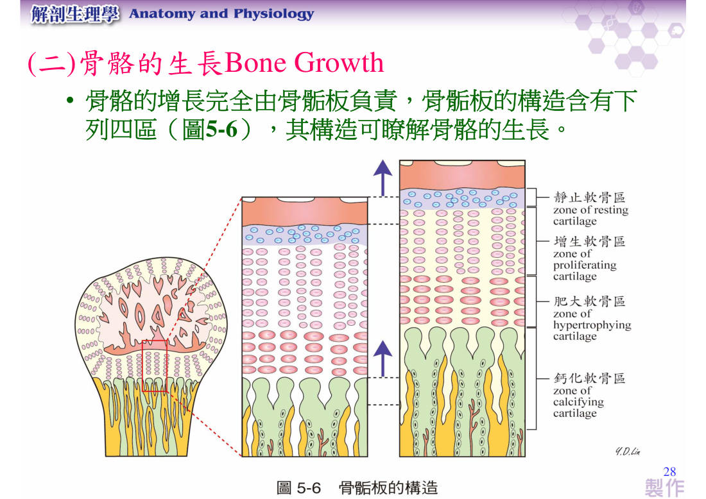
- 靜止軟骨區zone of resting cartilage：緊鄰骨骺，基質中小軟骨細胞不規則排列。
- 增生軟骨區zone of proliferating cartilage：較大軟骨細胞排成疊硬幣狀。
- 肥大軟骨區zone of hypertrophying cartilage：大小一致、排成柱狀的較大軟骨細胞，愈成熟愈靠近骨幹。
- 鈣化軟骨區zone of calcifying cartilage：細胞大多死亡，基質鈣化，被蝕骨細胞佔據；造骨細胞與微血管自骨幹侵入，使骨骺板牢固接於骨幹。
記憶口訣
由骨骺往骨幹：「靜、增、肥、鈣」。
- 骨幹增長的唯一機轉＝骨骺板的活性。
- 直徑與長度同時增長：骨髓腔表面硬骨被破壞，髓腔變大；同時骨外膜造骨細胞在外表面加入新硬骨。
- 骨骺板在女性約 18 歲、男性約 20 歲停止分裂並被硬骨取代成骨骺線；骨骺線一出現，長度生長即停止。
- 多數硬骨約 25 歲完成骨化；鎖骨是最後停止生長的硬骨。
骨骼的恆定與重塑
- 骨骼重塑remodeling：新骨基質（主要為鈣質）不斷堆積，同時舊骨基質被再吸收入血。正常時兩者速率相當，維持骨骼恆定bone homeostasis。
- 造骨細胞＝堆積新骨；蝕骨細胞＝分解舊骨，兩者活性平衡。
- 蝕骨細胞產生突起，分泌來自溶小體的蛋白質水解酶，以及乳酸與枸櫞酸：酶消化膠原蛋白及有機物，酸溶解礦物鹽。
- 每年約 18% 的骨礦物質被重塑；股骨遠端舊基質約 5 個月更換一次，骨幹慢得多，有些骨終生不會完全替換。
影響骨重塑的因素（表5-2）
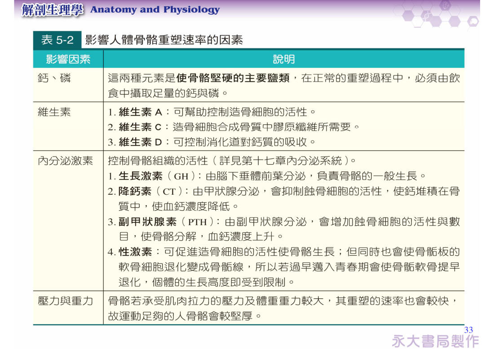
| 因素 | 作用 |
|---|---|
| 鈣、磷 | 使骨堅硬的主要鹽類，須由飲食攝取足量 |
| 維生素 A | 控制造骨細胞的活性 |
| 維生素 C | 造骨細胞合成骨質中膠原纖維所需 |
| 維生素 D | 控制消化道對鈣質的吸收 |
| 生長激素 GH | 腦下垂體前葉分泌，負責骨骼一般生長 |
| 降鈣素 CT | 甲狀腺分泌；抑制蝕骨細胞，鈣堆積於骨，血鈣下降 |
| 副甲狀腺素 PTH | 副甲狀腺分泌；增加蝕骨細胞活性與數目，骨分解，血鈣上升 |
| 性激素 | 促進造骨細胞活性使骨生長；同時使骨骺板軟骨退化成骨骺線，故過早進入青春期會限制身高 |
| 壓力與重力 | 受肌肉拉力與體重壓力大，重塑較快，運動足夠者骨較堅厚 |
易混淆
降鈣素（甲狀腺，抑制蝕骨→血鈣降）vs 副甲狀腺素（副甲狀腺，活化蝕骨→血鈣升）；維生素 D 管腸道吸收鈣，維生素 C 管膠原合成，維生素 A 管造骨細胞活性。
骨折修復（講義 p.34）
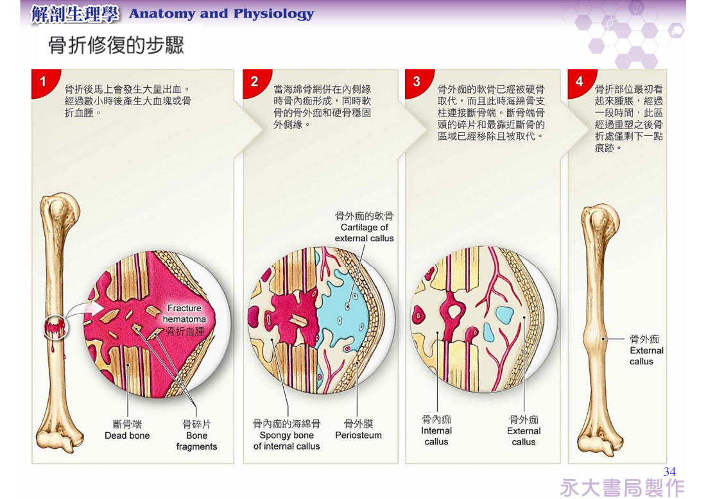
- 骨折後大量出血，數小時後形成血塊／骨折血腫 fracture hematoma。
- 內側緣形成骨內痂（海綿骨網），同時外側形成骨外痂（軟骨→被硬骨穩固外側）。
- 骨外痂軟骨被硬骨取代，海綿骨支柱連接斷骨兩端；碎片被移除。
- 骨折處初看腫脹，經重塑後僅剩一點痕跡。
骨骼老化與骨質疏鬆
- 鈣自骨喪失→骨質疏鬆症osteoporosis：女性約 40 歲起開始流失，70 歲約流失 70%（依講義）；男性約 60 歲後才開始。
- 蛋白質合成率降低→有機基質形成能力下降，骨變脆易折。
- 骨質疏鬆（講義 p.36）：超過 45 歲女性約 29% 有骨質疏鬆，停經後加速，主要與雌激素減少有關；同齡男性約 18%。預防：補充雌激素、增加鈣質攝取、運動刺激骨細胞；只能減緩，不能完全避免。
骨骼的表面標記（表5-3）
長骨有大而圓的兩端形成強固關節，相關節的骨有凹陷；粗糙區供肌肉、肌腱、韌帶附著；溝供血管神經通過；裂、孔是血管神經通過的開口。
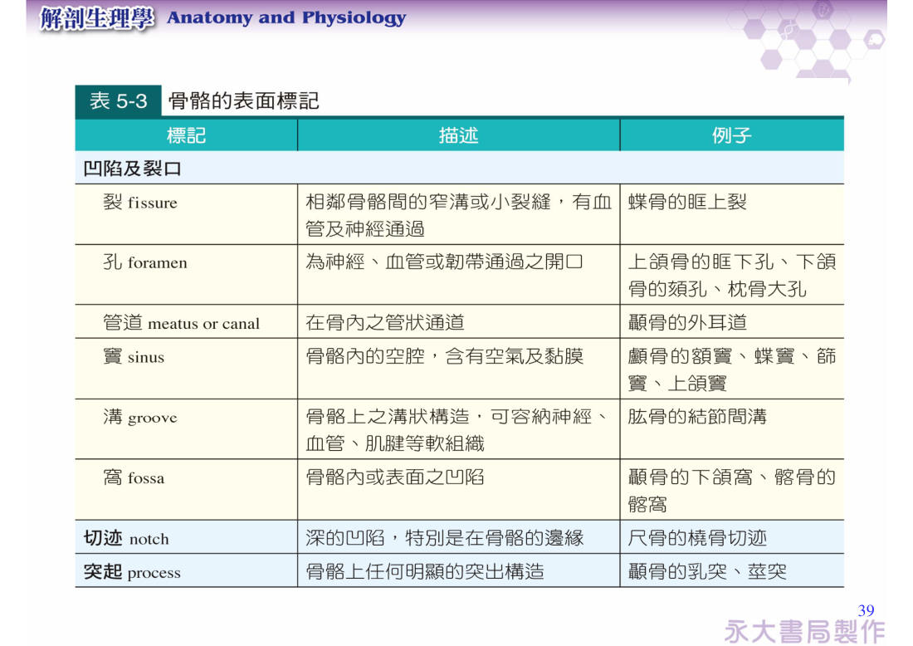
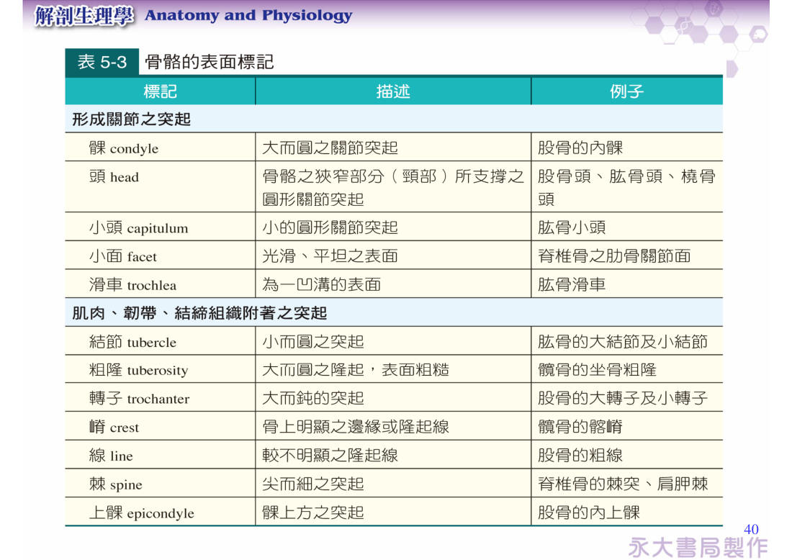
| 分類 | 標記 | 描述 | 例子 |
|---|---|---|---|
| 凹陷及裂口 | 裂 fissure | 相鄰骨間窄溝或小裂縫，有血管神經通過 | 蝶骨眶上裂 |
| 孔 foramen | 神經、血管或韌帶通過的開口 | 眶下孔、頦孔、枕骨大孔 | |
| 管道 meatus / canal | 骨內管狀通道 | 顳骨外耳道 | |
| 竇 sinus | 骨內含空氣與黏膜的空腔 | 額竇、蝶竇、篩竇、上頜竇 | |
| 溝 groove | 溝狀構造，容納神經、血管、肌腱 | 肱骨結節間溝 | |
| 窩 fossa | 骨內或表面的凹陷 | 下頜窩、髂窩 | |
| 切迹 notch | 邊緣的深凹陷 | 尺骨橈骨切迹 | |
| 形成關節的突起 | 髁 condyle | 大而圓的關節突起 | 股骨內髁 |
| 頭 head | 頸部所支撐的圓形關節突起 | 股骨頭、肱骨頭、橈骨頭 | |
| 小頭 capitulum | 小的圓形關節突起 | 肱骨小頭 | |
| 小面 facet | 光滑平坦表面 | 脊椎骨肋骨關節面 | |
| 滑車 trochlea | 凹溝狀表面 | 肱骨滑車 | |
| 肌肉／韌帶附著的突起 | 結節 tubercle | 小而圓的突起 | 肱骨大、小結節 |
| 粗隆 tuberosity | 大而圓的隆起，表面粗糙 | 髖骨坐骨粗隆 | |
| 轉子 trochanter | 大而鈍的突起 | 股骨大、小轉子 | |
| 嵴 crest | 明顯的邊緣或隆起線 | 髖骨髂嵴 | |
| 線 line | 較不明顯的隆起線 | 股骨粗線 | |
| 棘 spine | 尖而細的突起 | 脊椎棘突、肩胛棘 | |
| 上髁 epicondyle | 髁上方的突起 | 股骨內上髁 |
另：突起 process＝骨上任何明顯突出構造（例：顳骨乳突、莖突）。
易混淆
髁（大圓，關節用）vs 上髁（髁上方，肌肉附著）；結節（小）vs 粗隆（大、粗糙）vs 轉子（大而鈍，股骨專用）；頭（有頸支撐）vs 小頭 capitulum。
中軸骨骼與頭顱骨
中軸骨骼包括頭顱骨、胸骨、脊椎骨及一些軟骨構造，功能為支持並保護頭頸部與體幹內器官。頭顱骨skull位於脊柱上端，共 22 塊，分為腦顱骨cranial bones（8）與顏面骨facial bones（14）。
| 腦顱骨（8） | 塊數 | 顏面骨（14） | 塊數 |
|---|---|---|---|
| 額骨 frontal | 1 | 鼻骨 nasal | 2 |
| 頂骨 parietal | 2 | 上頜骨 maxilla | 2 |
| 顳骨 temporal | 2 | 顴骨 zygomatic | 2 |
| 枕骨 occipital | 1 | 下頜骨 mandible | 1 |
| 蝶骨 sphenoid | 1 | 淚骨 lacrimal | 2 |
| 篩骨 ethmoid | 1 | 腭骨 palatine | 2 |
| 下鼻甲 inferior nasal concha | 2 | ||
| 犁骨 vomer | 1 |
記憶口訣
腦顱「額頂顳枕蝶篩」＝1+2+2+1+1+1＝8；顏面「鼻上顴下淚腭下犁」＝2+2+2+1+2+2+2+1＝14。
- 腦顱骨：包圍保護腦，提供頭頸肌肉附著。
- 顏面骨：顏面支架、顏面肌附著、穩固牙齒；安置視覺、嗅覺、味覺器官；空氣與食物通道。
骨縫 suture 與囟門 fontanel
骨縫suture是僅存在於頭顱骨間的不動關節，只含極少結締組織。
| 骨縫 | 位置 |
|---|---|
| 冠狀縫 coronal | 額骨與頂骨之間 |
| 矢狀縫 sagittal | 兩塊頂骨之間 |
| 人字縫 lambdoidal | 頂骨與枕骨之間 |
| 鱗縫 squamosal | 頂骨與顳骨之間 |
囟門fontanel：初生嬰兒腦顱骨之間由膜填充的空間，是骨化尚未完成處，使頭顱在生產時可被壓縮通過產道。
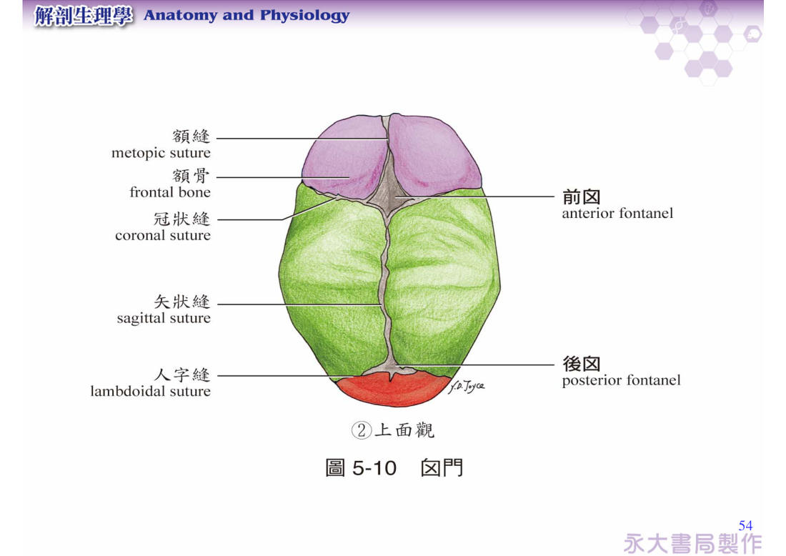
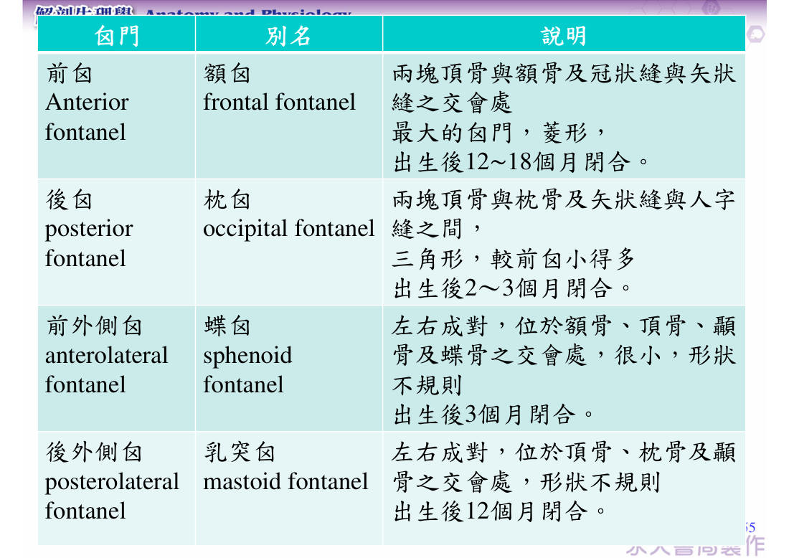
| 囟門 | 別名 | 位置與形狀 | 閉合時間 |
|---|---|---|---|
| 前囟 anterior | 額囟 | 兩頂骨與額骨、冠狀縫與矢狀縫交會處；最大、菱形 | 出生後 12～18 個月 |
| 後囟 posterior | 枕囟 | 兩頂骨與枕骨、矢狀縫與人字縫之間；三角形、較小 | 出生後 2～3 個月 |
| 前外側囟 anterolateral | 蝶囟 | 成對，額骨、頂骨、顳骨、蝶骨交會處；很小、不規則 | 出生後 3 個月 |
| 後外側囟 posterolateral | 乳突囟 | 成對，頂骨、枕骨、顳骨交會處；不規則 | 出生後 12 個月 |
易混淆
前囟最大、閉合最晚（12–18 月）；後囟最小的單一囟、最早閉合（2–3 月）。外側囟成對：前外側＝蝶囟，後外側＝乳突囟。
頭顱骨的孔、裂、管（表5-4）
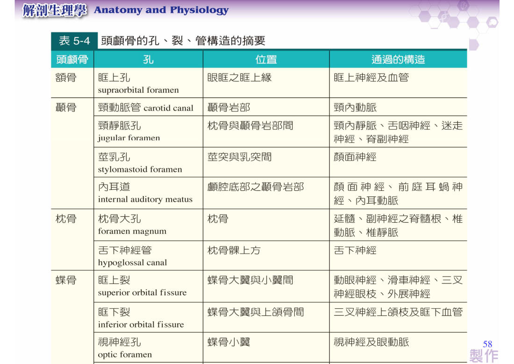
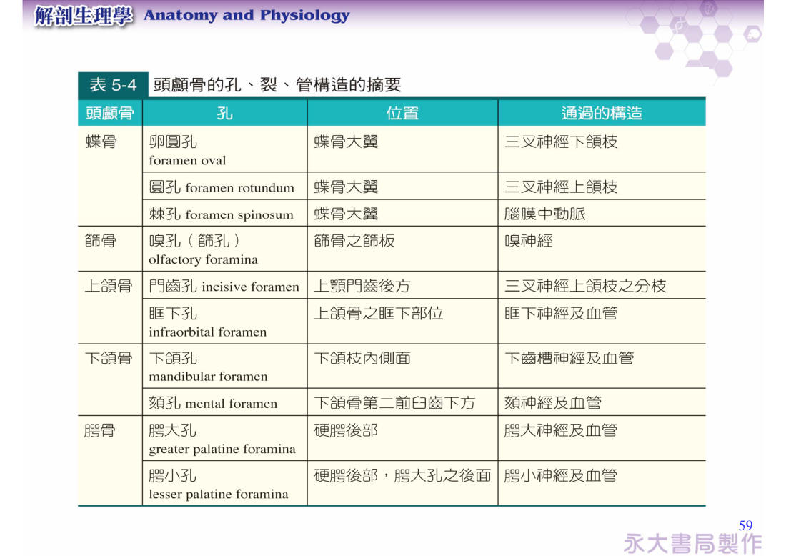
| 骨 | 孔／裂／管 | 位置 | 通過構造 |
|---|---|---|---|
| 額骨 | 眶上孔 supraorbital foramen（或眶上切迹） | 眼眶上緣 | 眶上神經及血管 |
| 顳骨 | 頸動脈管 carotid canal | 岩部 | 頸內動脈 |
| 頸靜脈孔 jugular foramen | 枕骨與顳骨岩部間 | 頸內靜脈、舌咽神經、迷走神經、脊副神經 | |
| 莖乳孔 stylomastoid foramen | 莖突與乳突間 | 顏面神經 | |
| 內耳道 internal auditory meatus | 顱底內岩部 | 顏面神經、前庭耳蝸神經、內耳動脈 | |
| 枕骨 | 枕骨大孔 foramen magnum | 枕骨 | 延髓、副神經脊髓根、椎動脈、椎靜脈 |
| 舌下神經管 hypoglossal canal | 枕髁上方 | 舌下神經 | |
| 蝶骨 | 眶上裂 superior orbital fissure | 大翼與小翼間 | 動眼神經、滑車神經、三叉神經眼枝、外展神經 |
| 眶下裂 inferior orbital fissure | 蝶骨大翼與上頜骨間 | 三叉神經上頜枝、眶下血管 | |
| 視神經孔 optic foramen | 小翼 | 視神經及（眼）動脈 | |
| 卵圓孔 foramen ovale | 大翼 | 三叉神經下頜枝 | |
| 圓孔 foramen rotundum | 大翼 | 三叉神經上頜枝 | |
| 棘孔 foramen spinosum | 大翼 | 腦膜中動脈 | |
| 篩骨 | 嗅孔（篩孔）olfactory foramina | 篩板 | 嗅神經 |
| 上頜骨 | 門齒孔 incisive foramen | 上顎門齒後方 | 三叉神經上頜枝之分枝 |
| 眶下孔 infraorbital foramen | 眶下部位 | 眶下神經及血管 | |
| 下頜骨 | 下頜孔 mandibular foramen | 下頜枝內側面 | 下齒槽神經及血管 |
| 頦孔 mental foramen | 第二前臼齒下方 | 頦神經及血管 | |
| 腭骨 | 腭大孔 greater palatine foramina | 硬腭後部 | 腭大神經及血管 |
| 腭小孔 lesser palatine foramina | 硬腭後部、腭大孔後面 | 腭小神經及血管 |
記憶口訣
蝶骨大翼由前到後「圓→卵→棘」：圓孔＝V2 上頜枝、卵圓孔＝V3 下頜枝、棘孔＝腦膜中動脈（三叉神經：眼枝 V1 走眶上裂）。
腦顱骨各論
額骨 frontal bone
- 形成前額、眼眶頂及顱底前部大部分。出生時由額縫metopic suture分左右兩半，約 6 歲消失合為一塊。
- 額隆凸 frontal eminence；眶上緣supraorbital margin，中點稍內側有眶上孔／眶上切迹（眶上神經、血管）。
- 眉間glabella：兩眼眶間平滑部分，其深部有骨性空腔＝額竇frontal sinus。
頂骨 parietal bone
兩塊構成顱腔兩側及頂部大部分；外側面有顳肌附著的上顳線與下顳線；內面有腦膜血管壓迹。
顳骨 temporal bone（四部分）
| 部分 | 重點構造 |
|---|---|
| 鱗部 squamous | 單薄廣大；顴突（與顴骨顳突共同形成顴弓zygomatic arch）；下頜窩與關節結節，與下頜骨髁突形成顳下頜關節TMJ（頭顱骨中唯一可動關節） |
| 鼓室部 tympanic | 位於外耳道周圍；向下突出莖突 styloid process（肌肉韌帶附著）；內部有鼓室 |
| 乳突部 mastoid | 外耳道後下方，內有很多小氣室；乳突與莖突之間為莖乳孔（顏面神經主要分枝穿出，分布到表情肌） |
| 岩部 petrous | 顱底內面；含內耳（聽覺器官主要部分）；頸動脈管（頸內動脈）；其上方內耳道；與枕骨相鄰處頸靜脈孔 |
枕骨 occipital bone
- 枕骨大孔foramen magnum：延髓與脊髓的分界處；外側有舌下神經管。
- 枕髁occipital condyle：枕骨大孔兩側橢圓突起，與第一頸椎（寰椎）上關節面形成枕寰關節（點頭）。
- 枕外粗隆external occipital protuberance：往下延伸成枕嵴（項韌帶附著）；向外側形成上項線（頸部上限）、下項線。枕內粗隆在內面後方。
蝶骨 sphenoid bone
位於顱底中央，形似展翅蝴蝶；參與形成前顱窩、中顱窩。
- 蝶骨體：位於篩骨與枕骨之間；內有一對蝶竇sphenoidal sinus（引流至鼻腔）；上面鞍狀凹陷＝蝶鞍sella turcica（腦下垂體窩）。
- 大翼：形成顱底前外側部及部分側壁；有圓孔、卵圓孔、棘孔。
- 小翼：形成部分顱底與眼眶後部；有視神經孔（視神經；視神經管有眼動脈）；小翼與大翼間三角形裂縫＝眶上裂。
- 翼突：蝶骨下部，形成鼻腔側壁一部分。
篩骨 ethmoid bone
位於顱底前部、左右眼眶間、鼻中隔上面的鬆質骨；前為鼻骨，後為蝶骨。
- 水平板：顱底前部一部分，並形成鼻腔頂；篩板cribriform plate有嗅孔（嗅神經）；雞冠crista galli有硬腦膜附著。
- 垂直板：構成鼻中隔上部。
- 外側塊：眼眶與鼻腔間主要分隔，含篩竇；有上鼻甲、中鼻甲（使空氣得到循流與過濾）；外側面為眼眶板。
顏面骨各論
| 骨 | 重點 |
|---|---|
| 鼻骨 | 成對薄長小骨，構成鼻樑上半；下半主要由軟骨構成 |
| 顴骨 | 形成臉頰突出部分與眼眶底一部分；其顳突＋顳骨顴突＝顴弓 |
| 上頜骨 | 成對結合成上顎；構成眼眶底、口腔頂一部分、鼻腔底與側壁一部分；與除下頜骨外的顏面骨皆形成關節。與蝶骨大翼間有眶下裂，眶下部有眶下孔。五部分：①體部（含上頜竇，最大副鼻竇）②齒槽突（齒槽、齒槽弓）③腭突（形成硬腭前 3/4）④額突（伸向額骨）⑤顴突（伸向顴骨） |
| 腭骨 | 成對L 字型；水平板形成硬腭後 1/4；亦構成鼻腔外側壁與底、眼眶底一小部分 |
| 下頜骨 | 顏面骨中最大最強壯，頭顱骨中唯一能動的骨；水平的體部＋兩個垂直的下頜枝；體與枝交會＝下頜角；髁突（後，與下頜窩形成 TMJ）、冠狀突（前，顳肌附著），兩者間為下頜切迹；齒槽突容納下頜牙齒；頦孔（第二前臼齒下）；下頜孔（枝內側面）；兩孔間＝下頜管 |
| 淚骨 | 成對、指甲大小，顏面骨中最小；位於鼻骨後外側，構成眼眶內側壁；淚溝與上頜骨形成淚窩（淚囊），鼻淚管通往下鼻道 |
| 下鼻甲 | 渦卷形、獨立的骨（非篩骨一部分），功能同上、中鼻甲 |
| 犁骨 | 三角形，形成鼻中隔後下部；犁骨＋篩骨垂直板＋鼻中隔軟骨＝鼻中隔 |
易混淆
顴弓＝顳骨的顴突＋顴骨的顳突（名稱互相交叉）。硬腭＝上頜骨腭突（前 3/4）＋腭骨水平板（後 1/4）。上、中鼻甲屬篩骨；下鼻甲是獨立骨。
其他：聽小骨與舌骨
- 聽小骨auditory ossicle：位於顳骨鼓室，每側 3 塊共 6 塊：鎚骨 malleus（附鼓膜）、砧骨 incus、鐙骨 stapes（底部接卵圓窗，人體最小骨）。功能：把鼓膜聲波振動傳入內耳。
- 舌骨hyoid bone：位於下頜骨與喉之間，不與其他骨形成關節，以韌帶與肌肉懸於顳骨莖突；支持舌頭；含水平體部、一對小角、一對大角。
頭顱的相關結構
眼眶 orbit
左右各一，由 7 塊骨圍成的錐形骨窩：額骨、上頜骨、顴骨、蝶骨、腭骨、淚骨、篩骨。有眶上裂、眶下裂、視神經孔；容納眼球、肌肉與腺體。
鼻腔 nasal cavity
- 位於顱腔與口腔間，由鼻中隔分左右；鼻中隔前部為軟骨，後部硬骨由篩骨垂直板與犁骨構成。
- 頂：篩骨篩板（與顱腔分界；撞擊破損時腦脊髓液可能由鼻孔流出）。
- 底：硬腭（上頜骨腭突＋腭骨水平板），與口腔分界。
- 外側壁：上、中、下鼻甲與上頜骨；各鼻甲下方為上、中、下鼻道 meatus。上、中鼻道有副鼻竇開口；下鼻道有鼻淚管開口。
副鼻竇 paranasal sinus
- 額骨、蝶骨、篩骨、上頜骨內的氣室，左右對稱：額竇、蝶竇、篩竇、上頜竇；功能：減輕顱骨重量、作為聲音共鳴箱。
- 引流：蝶竇、後篩竇→上鼻道；額竇、前篩竇、中篩竇、上頜竇→中鼻道。
- 黏膜與鼻腔相連，過敏或感染時可引起鼻竇炎sinusitis。
易混淆
上頜竇是最大的副鼻竇，卻引流到中鼻道；蝶竇引流到上鼻道；鼻淚管開口在下鼻道（不是副鼻竇）。
脊柱 vertebral column
- 由一串脊椎骨vertebra組成，成人平均長約 71 公分；包圍保護脊髓、支持頭部，供肋骨與背肌附著。
- 成人脊柱 26 塊：頸椎 7、胸椎 12、腰椎 5、薦骨（5 塊薦椎癒合成 1）、尾骨（3–5 塊尾椎癒合成 1）。
- 椎間孔intervertebral foramen：脊髓神經通過。
- 第二頸椎到薦骨，相鄰椎骨間有纖維軟骨的椎間盤intervertebral disc：外圍纖維環annulus fibrosus、中間髓核nucleus pulposus；形成強韌關節，使脊柱能前後、兩側運動，並吸收垂直震動；受壓時變扁變寬並由椎間隙突出（椎間盤突出）。
記憶口訣
脊椎「7、12、5、5、3–5」＝頸、胸、腰、薦、尾；早（7 點）中（12 點）晚（5 點）。
脊柱的四個彎曲
| 彎曲 | 方向 | 類型 | 形成 |
|---|---|---|---|
| 頸彎曲 cervical | 往前凸 | 次發性 secondary | 出生後約第 3 個月抬頭 |
| 胸彎曲 thoracic | 往後凹 | 原發性 primary | 胎兒時即存在 |
| 腰彎曲 lumbar | 往前凸 | 次發性 secondary | 站立及走路時 |
| 薦彎曲 sacral | 往後凹 | 原發性 primary | 胎兒時即存在 |
兩個前凸、兩個後凹。彎曲增加強度、幫助站立平衡、吸收走路震動、避免骨折。胎兒時脊柱只有單一往後凹的彎曲。
記憶口訣
「頸腰前凸後天形成，胸薦後凹先天就有」。
典型椎骨構造
- 椎體vertebral body：前方粗厚圓盤形，承受體重；上下緣粗糙供椎間盤附著。
- 椎弓vertebral arch：由一對短粗的椎弓根 pedicle與兩個扁平的椎板 lamina構成；椎弓根上下緣有切迹，相鄰切迹形成椎間孔。
- 椎孔vertebral foramen：椎體與椎弓間的空間；各椎孔連成椎管 vertebral canal，脊髓位於其內。
- 突起（4 種 7 個）：橫突（2）、棘突（1）、上關節突（2）、下關節突（2）。
各區椎骨比較（表5-5）
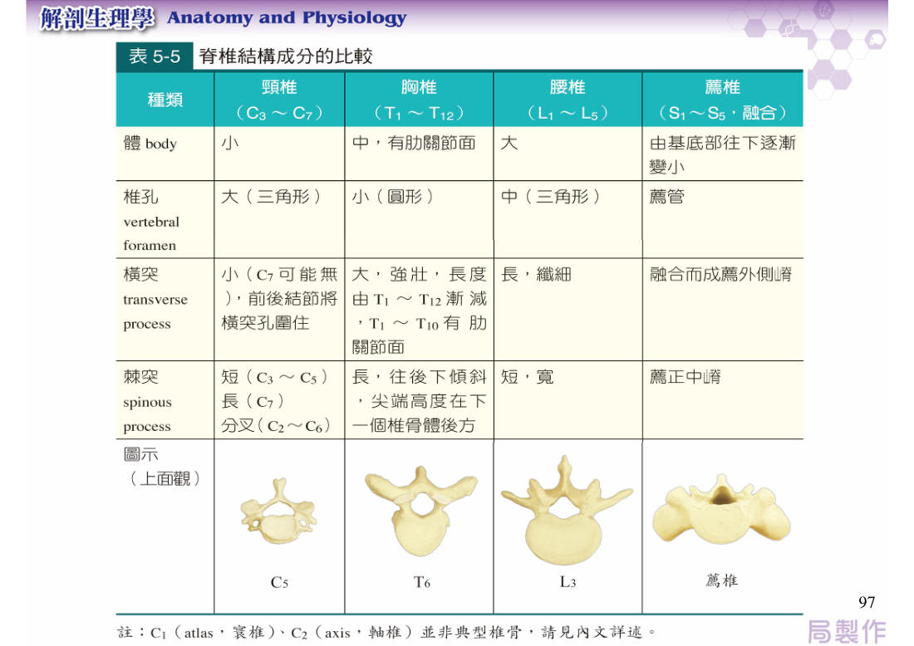
| 特徵 | 頸椎 C3–C7 | 胸椎 T1–T12 | 腰椎 L1–L5 | 薦椎 S1–S5 |
|---|---|---|---|---|
| 椎體 | 小 | 中，有肋關節面 | 大 | 由基底往下逐漸變小 |
| 椎孔 | 大，三角形 | 小，圓形（T1 三角形） | 中，三角形 | 薦管 |
| 橫突 | 小，有橫突孔（C7 可能無） | 大、強壯，長度由 T1–T12 漸減；T1–T10 有肋關節面；無橫突孔 | 長、纖細；無橫突孔、無肋關節面 | 融合成薦外側嵴 |
| 棘突 | 短（C3–C5）、長（C7）、C2–C6 分叉 | 長，往後下傾斜 | 短、寬、方形、不分叉 | 薦正中嵴 |
易混淆
橫突孔（椎動脈、靜脈通過）只在頸椎；肋關節面只在胸椎；腰椎體最大、棘突方形朝正後、不易觸摸。
頸椎 cervical vertebra（7 塊）
- 承受頭重並活動頸部；椎體比胸椎小、椎弓較大；C2–C6 棘突分叉；橫突孔有椎動脈與靜脈通過。
- C1 寰椎 atlas：直接支撐頭，頸椎中最寬；環狀，由前弓、後弓、外側塊構成；無椎體、無棘突；上關節面（凹）與枕髁形成枕寰關節（點頭）；下關節面與 C2 形成寰軸關節（搖頭）；橫突及橫突孔都很大。
- C2 軸椎 axis：有椎體，其上木栓狀齒狀突odontoid process突穿寰椎環形構造，形成寰軸關節；搖頭時作為旋軸。
- C3–C6：典型頸椎。
- C7 隆椎 vertebra prominens：棘突大、不分叉、末端結節狀，頸基部可摸到；項韌帶ligamentum nuchae連接 C7 棘突與枕外粗隆，幫助頭部彎曲與挺立。
易混淆
枕寰關節（枕髁＋寰椎）＝點頭；寰軸關節（寰椎＋軸椎齒狀突）＝搖頭。
胸椎 thoracic vertebra（12 塊）
- 比頸椎強大；椎體由上而下愈來愈大；椎孔圓形（T1 三角形）；橫突長而厚、無橫突孔；棘突長且朝下。
- 椎體上有與肋骨頭相關節的全關節面（whole facet）或半關節面（demifacet）；T1–T10 橫突有與肋骨結節關節的關節面。
| 椎骨 | 椎體肋關節面 |
|---|---|
| T1 | 兩側上方各 1 個全關節面（接第 1 肋）；下方各 1 個半關節面（與 T2 上半關節面共成全面，接第 2 肋） |
| T2–T8 | 每側有較大朝上半關節面＋較小朝下半關節面 |
| T9 | 每側僅 1 個朝上半關節面 |
| T10–T12 | 每側各 1 個全關節面 |
腰椎 lumbar vertebra（5 塊）
- 承受體重最大，椎體最大；椎孔窄小三角形（脊髓終止於 L1 附近）；突起短而厚。
- 上關節突又稱乳突 mammillary process，上關節面朝內側、下關節面朝外側；棘突方形、厚寬、不分叉，朝正後方，覆有背部大肌肉，不易觸摸。
- 橫突較短、較水平，無橫突孔、無肋關節面。
薦骨 sacrum 與尾骨 coccyx
- 薦骨：5 塊薦椎融合成的三角形，位於骨盆腔後面、兩髖骨之間；上方基部與 L5 相關節，下方尖端與尾骨相關節。
- 前面凹陷平滑，有 4 條橫線（薦椎融合遺留），每線兩端有前薦孔（共 4 對）。
- 後面凸，中央薦正中嵴median sacral crest（棘突融合）、外側薦外側嵴lateral sacral crest（橫突融合）；有 4 對後薦孔（與前薦孔相通，神經血管通過）。
- 薦管sacral canal：脊椎管延續；第 5（甚至第 4）薦椎椎板未融合，下端留開口＝薦管裂孔sacral hiatus；兩側薦角以韌帶連尾骨的尾骨角。
- 薦岬promontory：薦骨上端突出前緣，產科測骨盆大小的標記；恥骨聯合上緣到薦岬的假想線＝腹腔與骨盆腔分界。
- 外側耳狀面 auricular surface與髂骨關節＝薦髂關節；其背側粗糙面＝薦粗隆。
- 尾骨：3–5 塊尾椎融合、倒三角形；與薦骨形成薦尾關節；尾骨角由第一尾椎椎弓根與上關節突組成。
胸廓 thoracic cage
- 由胸骨、肋骨、肋軟骨、胸椎椎體及附著胸壁肌構成；略呈圓錐狀，上窄下寬、前後扁；保護胸腔臟器並支持肩帶及上肢骨。
胸骨 sternum
位於前胸壁正中，扁平狹長，約 15 公分，由三部分構成：
| 部分 | 重點 |
|---|---|
| 胸骨柄 manubrium | 上緣頸靜脈切迹；兩旁鎖骨切迹與鎖骨形成胸鎖關節；側面第 1、2 肋骨切迹與第 1、2 肋軟骨關節 |
| 胸骨體 body | 直接或間接與第 2–10 肋軟骨關節；與柄相連處稍突起＝胸骨角sternal angle：對應第 2 肋軟骨、氣管分叉高度、上下縱隔腔分界 |
| 劍突 xiphoid process | 無肋骨附著，為部分腹肌附著點；嬰兒兒童時為軟骨，約 40 歲才完全骨化 |
肋骨 rib（12 對）
| 分類 | 對數 | 說明 |
|---|---|---|
| 真肋true rib（椎骨胸骨肋） | 1–7 | 直接以肋軟骨連胸骨 |
| 假肋false rib | 8–12 | 不直接連胸骨 |
| 椎骨軟骨肋 vertebrochondral | 8–10 | 肋軟骨接上位肋軟骨，間接經第 7 肋軟骨連胸骨 |
| 懸肋floating rib（椎骨肋 vertebral rib） | 11–12 | 前端游離 |
- 肋骨長度第 1→7 對漸增，第 7→12 對漸減；後方均與對應胸椎相關節。
- 典型肋骨（第 3–9 對）：頭部（楔狀，關節面被關節間嵴分隔，與胸椎椎體關節）→頸部→結節（頸體交界；非關節部供韌帶附著，關節部與胸椎橫突關節）→體部（骨幹；轉彎處＝肋骨角）；下內側的肋溝 costal groove保護血管神經。
記憶口訣
真肋 1–7（七真）、假肋 8–12、懸肋 11–12（最後兩對），其中 8–10 為「假但有間接連結」。
易混淆
假肋（8–12）包含懸肋（11–12）；懸肋是假肋的一部分，且真肋＋假肋＝12 對，胸廓骨共 25 塊（胸骨 1＋肋骨 24）。
附肢骨骼與肩帶
附肢骨骼＝附著於中軸骨骼的骨：肩帶、骨盆帶、上肢骨、下肢骨。（本講義只講到上肢，下肢未涵蓋。）
肩帶 shoulder girdle（胸帶 pectoral girdle）
- 使上肢連於中軸骨骼；每側含 1 鎖骨＋1 肩胛骨（共 4 塊）。
- 鎖骨在前，內側與胸骨形成胸鎖關節sternoclavicular joint，外側與肩胛骨關節；肩胛骨在後，與鎖骨和肱骨關節，但不與脊柱關節。
鎖骨 clavicle
- 成對、細長、雙彎曲，中央 2/3 向前凸；水平排列於胸前上方、第 1 肋上方。
- 胸骨端（內側，圓錐形）：與胸骨柄鎖骨切迹形成胸鎖關節；下面肋粗隆供韌帶附著。
- 體部：下表面有鎖骨下肌附著。
- 肩峰端（外側，寬扁）：與肩胛骨肩峰形成肩峰鎖關節；下面圓錐結節有喙鎖韌帶附著。
- 功能：連結胸部與肩胛骨、上肢，把上肢承受的力傳到體部；跌倒時伸直手臂著地易骨折；出生時最易骨折的骨。
- 鎖骨以膜內骨化形成，也是最後停止生長的硬骨。
肩胛骨 scapula
- 倒三角形、扁平薄骨，位於胸背側約第 2–7 肋之間，內緣距脊柱約 5 公分。
- 體部背側尖銳的肩胛棘spine of scapula，上下方分別為棘上窩、棘下窩；腹面微凹＝肩胛下窩（肌肉附著）。
- 肩胛棘末端扁寬＝肩峰acromion，與鎖骨形成肩峰鎖關節。
- 肩峰下凹陷＝關節盂glenoid cavity，與肱骨頭形成肩關節。
- 內側緣（椎骨緣，薄）／外側緣（腋窩緣，粗厚）；兩緣會合於下角；上緣與內側緣會合於上角。
- 喙突coracoid process：上緣外側端向前突出，肌肉附著；肩胛上切迹在上緣近喙突處，有肩胛上神經及血管通過。
上肢骨骼 upper extremity（共 60 塊）
上臂：肱骨；前臂：尺骨、橈骨；手部：腕骨、掌骨、指骨。
肱骨 humerus
上肢最長最大的骨；近端與肩胛骨形成肩關節，遠端與尺、橈骨形成肘關節。
| 部位 | 構造與重點 |
|---|---|
| 近端 | 肱骨頭 head：圓滑，與關節盂形成肩關節 |
| 解剖頸 anatomical neck：頭部遠端的斜溝 | |
| 大結節 greater tubercle：向外側突出，下延成大結節嵴 | |
| 小結節 lesser tubercle：向前突出，下延成小結節嵴 | |
| 結節間溝 intertubercular sulcus（二頭肌溝 bicipital groove）：大、小結節間 | |
| 外科頸 surgical neck：結節遠端較狹窄處，易骨折而得名 | |
| 體部（骨幹） | 近端圓錐形→三角形→遠端扁寬。中段外側 V 形粗糙區＝三角肌粗隆 deltoid tuberosity；後面螺旋走向的橈神經溝（橈神經通過） |
| 遠端 | 小頭 capitulum：外側圓形結節，與橈骨頭關節；與滑車合稱肱骨髁 condyle |
| 滑車 trochlea：內側滑輪狀，與尺骨滑車切迹關節 | |
| 內上髁／外上髁：粗糙突出，前臂與手指屈肌群、伸肌群的起始處 | |
| 橈骨窩 radial fossa（前）：屈肘時容納橈骨頭 | |
| 冠狀窩 coronoid fossa（前）：屈肘時容納尺骨冠狀突 | |
| 鷹嘴窩 olecranon fossa（後）：伸肘時容納尺骨鷹嘴突 |
記憶口訣
肱骨遠端窩：前面「橈、冠」（屈肘）、後面「鷹嘴」（伸肘）。小頭接橈骨、滑車接尺骨。
易混淆
解剖頸（頭下斜溝，不常骨折）vs 外科頸（結節下較窄，常骨折）。
尺骨 ulna
位於前臂內側（小指側），近端大、遠端小。
- 近端：鷹嘴突 olecranon（肘部巨大突起，伸肘入鷹嘴窩）；冠狀突（鷹嘴突前下方，屈肘入冠狀窩）；滑車切迹 trochlear notch（兩突間，與肱骨滑車關節）；橈骨切迹（容納橈骨頭）；尺骨粗隆（冠狀突下方，肱肌止點）；旋後肌嵴（橈骨切迹下方，旋後肌附著）。
- 骨幹：骨間緣朝向橈骨。
- 遠端：尺骨頭，以纖維軟骨盤與腕骨隔開；後內側有莖突。
橈骨 radius
位於前臂外側（拇指側），近端小、遠端大。
- 近端：頭部盤狀，與肱骨小頭及尺骨橈骨切迹關節；橈骨粗隆（內側，肱二頭肌附著）。
- 骨幹：骨間緣明顯，朝向尺骨。
- 遠端：變寬；下方腕骨關節面與舟狀骨、月狀骨關節；外側莖突；內側尺骨切迹與尺骨頭關節。
易混淆
尺骨：近端大（鷹嘴、肘）、遠端小；橈骨：近端小（頭）、遠端大（腕）。尺骨在小指側，橈骨在拇指側。尺骨切迹在橈骨遠端，橈骨切迹在尺骨近端。
腕骨 carpals（每側 8 塊短骨，兩排各 4）
| 排 | 由外（拇指側）而內 |
|---|---|
| 近側排 | 舟狀骨 scaphoid、月狀骨 lunate、三角骨 triquetral、豆狀骨 pisiform |
| 遠側排 | 大多角骨 trapezium、小多角骨 trapezoid、頭狀骨 capitate、鈎狀骨 hamate |
- 約 70% 腕骨骨折發生於舟狀骨。
- 兩排腕骨使手掌面凹陷，上跨屈肌支持帶flexor retinaculum形成腕隧道carpal tunnel：內有指深屈肌、指淺屈肌、拇長屈肌肌腱及正中神經。
- 正中神經受壓→腕道症候群carpal tunnel syndrome：掌面外側三根半手指灼痛、拇指球肌 thenar muscles 萎縮麻痺、對掌運動困難。
記憶口訣
近側排（外→內）「舟月三豆」；遠側排（外→內）「大小頭鈎」。
掌骨與指骨
- 掌骨 metacarpus：每側 5 塊，由外而內稱第 1–5 掌骨；含基部、骨幹、頭部；基部與遠側排腕骨關節；握拳時掌骨頭明顯。
- 指骨 phalanges：每手 14 塊，各含基部、骨幹、頭部；拇指只有近側、遠側 2 塊（無中間指骨），其餘 4 指各 3 塊（近側、中間、遠側）。
- 驗算：腕 8＋掌 5＋指 14＝27 塊/手；上肢 60 ＝（肱 1＋尺 1＋橈 1＋27）×2。
骨盆帶與骨盆
骨盆帶 pelvic girdle
- 由 2 塊髖骨hip bone組成：前面以恥骨聯合symphysis pubis相連，後面與薦骨相連。
- 功能：與脊柱相連，把上半身重量傳到下肢，提供堅強穩定的支持。
- 因有強韌韌帶與較深的髖臼，比上肢帶（肩帶）穩定，但活動度較小。
- 兩塊髖骨＋薦骨＋尾骨 → 盆狀的骨盆pelvis。
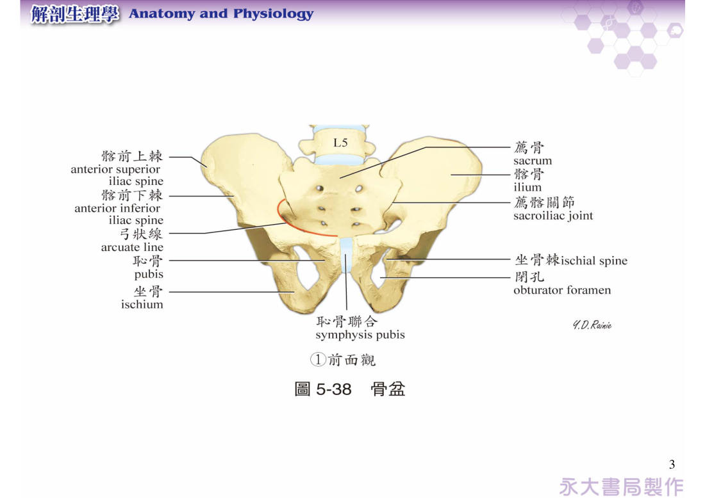
骨盆緣與大、小骨盆
骨盆由一假想斜面分成上、下兩部分；此斜面的邊緣＝骨盆緣pelvic brim：由後方薦岬→兩側弓狀線arcuate line→前方恥骨聯合。
| 項目 | 大骨盆 greater pelvis | 小骨盆 lesser pelvis |
|---|---|---|
| 別名 | 假骨盆 false pelvis | 真骨盆 true pelvis |
| 位置 | 骨盆緣上方的寬廣部分 | 骨盆緣下後方 |
| 組成 | 兩側髂骨上部、後面薦骨上部，前面由腹壁構成 | 髂骨與薦骨下部、尾骨及恥骨圍成 |
小骨盆上方開口＝骨盆入口pelvic inlet；下方開口＝骨盆出口pelvic outlet。
易混淆
大骨盆＝假骨盆（在上）；小骨盆＝真骨盆（在下，與生產相關）。名稱「大／小」與「假／真」別配反。
髖骨的三部分
新生兒每一塊髖骨含三塊：上方髂骨ilium、前下方恥骨pubis、後下方坐骨ischium，後來融合成一塊。
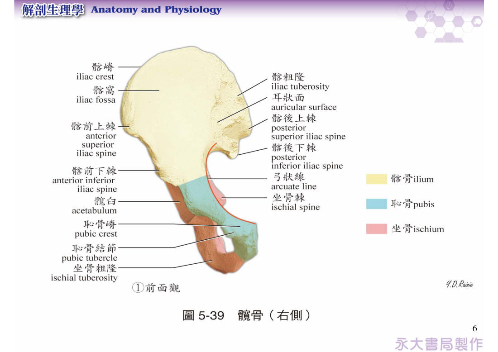
記憶口訣
「髂在上、恥在前、坐在後」：髂骨（腸骨）上方最大，恥骨前下，坐骨後下（坐著用屁股坐骨粗隆）。
| 骨 | 重要構造（中英）與重點 |
|---|---|
| 髂骨 ilium（腸骨） 髖骨最大者 |
髂嵴iliac crest（上緣；適合骨髓穿刺）→ 前端髂前上棘ASIS、後端髂後上棘PSIS；其下各有髂前下棘 AIIS、髂後下棘 PIIS（腹、背肌肉附著）。 髂後下棘下方：坐骨大切迹greater sciatic notch，坐骨神經通過延伸至下肢。 內側面：髂窩iliac fossa（髂肌附著）；後方髂粗隆iliac tuberosity（薦髂韌帶附著）、耳狀面auricular surface（與薦骨關節形成薦髂關節）。 外側面：臀後線、臀前線、臀下線（臀肌附著）。 |
| 坐骨 ischium 髖骨後下部 |
坐骨棘ischial spine；棘下方坐骨小切迹lesser sciatic notch（半圓凹陷，會陰的神經、血管通過）；坐骨粗隆ischial tuberosity（坐姿時接觸椅面、支撐體重，髖骨最強部分）。 坐骨枝ramus與恥骨接合，圍繞閉孔obturator foramen（閉孔神經、血管通過）。 |
| 恥骨 pubis 前下部，呈「V」字形 |
分體部 body、上枝 superior ramus、下枝 inferior ramus三部分。 體部上緣增厚＝恥骨嵴pubic crest；其外側＝恥骨結節pubic tubercle；體部內側面＝恥骨聯合面 symphysial surface。 恥骨聯合symphysis pubis：兩恥骨間的微動關節，含纖維軟骨。 |
必背重點
- 髖臼acetabulum由髂骨、坐骨、恥骨共同構成，容納股骨頭；髂骨與坐骨各佔 2/5，恥骨佔 1/5。
- 坐骨大切迹→坐骨神經；坐骨小切迹→會陰神經血管；閉孔→閉孔神經血管。
- 髂嵴＝骨髓穿刺部位；坐骨粗隆＝坐姿承重。
男女骨盆比較（表5-7）
| 比較項目 | 女性 | 男性 |
|---|---|---|
| 一般構造 | 輕而薄 | 重而厚 |
| 關節面 | 小 | 大 |
| 肌肉附著處 | 較不明顯 | 很明顯 |
| 大骨盆 | 淺 | 深 |
| 骨盆入口 | 大而略呈卵圓形 | 呈心臟形 |
| 骨盆出口 | 較大 | 較小 |
| 第一薦椎 | 椎體上面寬度約為薦骨寬度的 1/3 | 椎體上面寬度幾乎達薦骨寬度的 1/2 |
| 薦骨 | 短、寬、扁平，下部向前彎曲 | 長、窄 |
| 薦骨關節面 | 僅及第三薦椎上緣 | 延伸至第三薦椎 |
| 恥骨弓 | 大於 90° | 小於 90° |
| 恥骨下枝 | 沒有外翻面 | 有強的外翻面（供陰莖腳附著） |
| 恥骨聯合 | 較淺 | 較深 |
| 坐骨棘 | 內彎不明顯 | 內彎較明顯 |
| 坐骨粗隆 | 外翻 | 內彎 |
| 髂骨 | 較不垂直 | 較垂直 |
| 髂窩 | 淺 | 深 |
| 髂前上棘 | 兩邊相隔較遠 | 兩邊較接近 |
| 髖臼 | 小 | 大 |
| 閉孔 | 卵圓形 | 圓形 |
| 坐骨大切迹 | 寬 | 窄 |
記憶口訣
女性為了生產：「出口大、恥骨弓寬（>90°）、入口卵圓、大骨盆淺、髂前上棘離得遠」；男性則重、厚、深、窄、心臟形。
備註：投影片 p.2 另說明男性骨骼一般較女性大且重，肌肉附著處（粗隆、骨線、嵴）也較粗大。
下肢骨骼 Lower Extremity
必背重點
- 兩側下肢骨共 60 塊（每側 30 塊）。
- 組成：大腿股骨femur；膝蓋髕骨patella；小腿脛骨tibia、腓骨fibula；足部跗骨tarsals、蹠骨metatarsals、趾骨phalanges。
| 部位 | 骨 | 每側數目 |
|---|---|---|
| 大腿 | 股骨 | 1 |
| 膝 | 髕骨 | 1 |
| 小腿 | 脛骨、腓骨 | 2 |
| 足 | 跗骨 | 7 |
| 足 | 蹠骨 | 5 |
| 足 | 趾骨（拇趾 2＋其餘四趾各 3＝14） | 14 |
| 合計 | 30 | |
股骨 Femur
又稱大腿骨，左右各一，是人體最長、最重、最強壯的骨骼；分近端、骨幹、遠端。
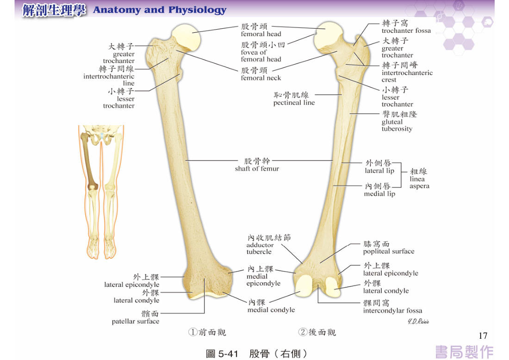
| 部位 | 構造 |
|---|---|
| 近端 |
圓形頭部與髖臼形成髖關節hip joint；頭上有股骨頭小凹fovea（圓韌帶附著）。 頭遠側狹窄處＝頸部（易骨折）。 大轉子greater trochanter、小轉子lesser trochanter：臀部與大腿肌肉附著；大轉子內側有轉子窩 trochanteric fossa。 後面（大、小轉子之間）＝轉子間嵴intertrochanteric crest；前面（頸與體之間）＝轉子間線intertrochanteric line。 |
| 骨幹 shaft |
平滑圓形、向內微彎，使一對股骨互相靠近，膝關節更接近身體重心線。 後面粗線linea aspera（分內唇 medial lip、外唇 lateral lip）；臀肌粗隆gluteal tuberosity、恥骨肌線pectineal line為肌肉附著處。 |
| 遠端 | 內髁、外髁與脛骨相關節；後面較深的髁間窩intercondylar fossa；前面髕面patellar surface與髕骨相關節；另有內上髁、外上髁。 |
易混淆
轉子間嵴（intertrochanteric crest）在後面；轉子間線（line）在前面。髖關節的髂股韌帶即附著於轉子間線。
髕骨 Patella（膝蓋骨）
- 左右各一，位於膝關節前面，埋在股四頭肌肌腱內的三角形種子骨sesamoid bone，是人體最大的種子骨。
- 寬廣上端＝基部base；尖銳下端＝尖apex；後面有兩個關節小面 articular facet，與股骨髕面相關節。
脛骨 Tibia 與腓骨 Fibula
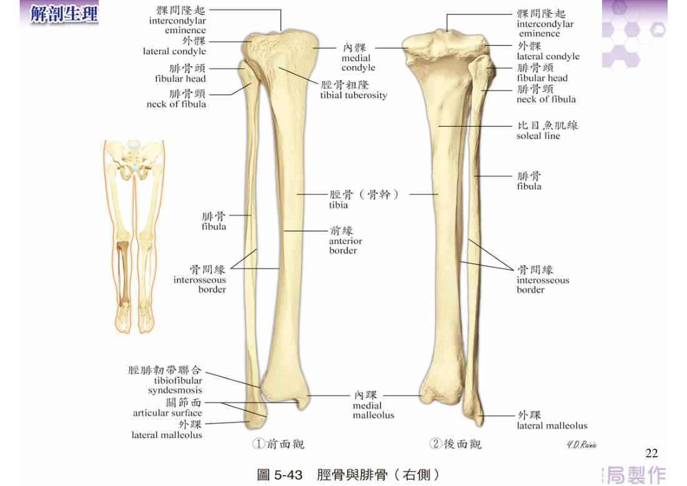
| 脛骨 tibia | 腓骨 fibula | |
|---|---|---|
| 位置／大小 | 小腿內側、較大，承受小腿主要重量 | 小腿外側、與脛骨平行，比脛骨小得多 |
| 近端 | 與股骨、腓骨相關節；外髁下方與腓骨頭相關節；兩髁間有向上突出的髁間隆起intercondylar eminence；前上方脛骨粗隆tibial tuberosity（膝韌帶／髕韌帶附著處） | 近側端為頭部 |
| 遠端 | 與腓骨、距骨相關節；內側面＝內踝medial malleolus；外側面＝腓骨切迹fibular notch（與腓骨相關節） | 突出構造＝外踝lateral malleolus，與距骨相關節；下部與脛骨腓骨切迹相關節 |
| 其他 | 後面有比目魚肌線soleal line | — |
記憶口訣
「脛內腓外」：脛骨在內側、內踝；腓骨在外側、外踝。
足骨：跗骨、蹠骨、趾骨
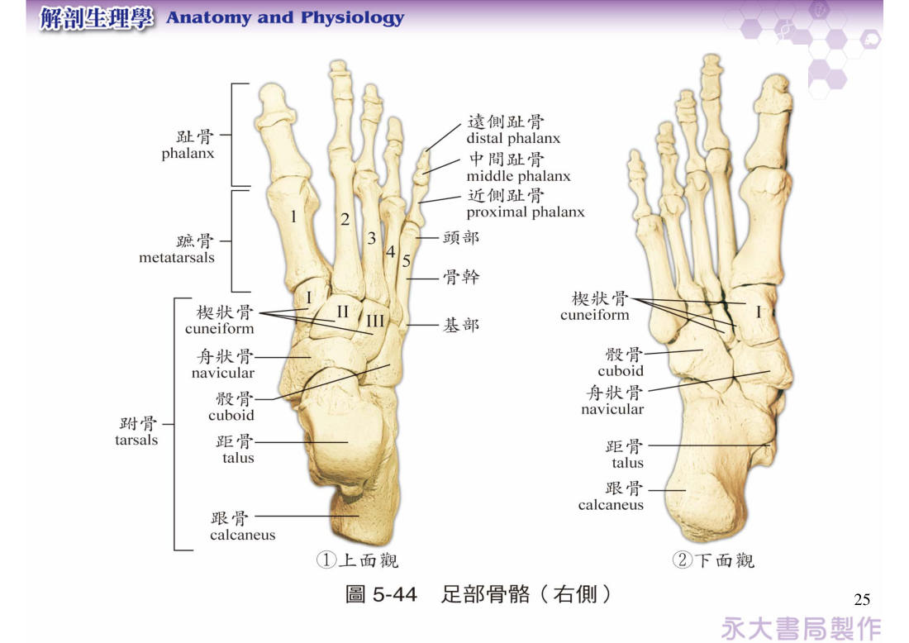
- 跗骨tarsals每側 7 塊：前面＝骰骨cuboid、舟狀骨navicular、3 塊楔狀骨cuneiform；後面＝距骨talus、跟骨calcaneus。
- 距骨位於最上方，是足部唯一與脛骨及腓骨相關節的骨；走路時先承受全身重量，再約一半轉移到其他跗骨。
- 跟骨是跗骨中最大、最強壯的骨。
- 蹠骨metatarsals每側 5 塊，各有基部、骨幹、頭部；近側端與楔狀骨、骰骨相關節，遠側端與近側趾骨相關節；第一蹠骨承重較多，較粗厚。
- 趾骨phalanges：數目排列與指骨相似；拇趾 great toe 只有近側、遠側 2 塊（大而粗），其餘 4 趾各 3 塊（近、中、遠）。
足弓 Arches of the Foot
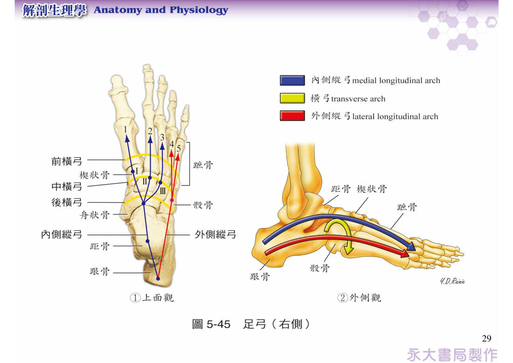
- 功能：支撐全身體重，並於走路時提供槓桿作用；承重時變平，重力除去後彈回。
- 維繫足弓的主要有跟舟足底韌帶plantar calcaneonavicular ligament與肌腱；韌帶、肌腱變弱 → 內側縱弓變低 → 扁平足flat foot。
| 足弓 | 組成 | 基石 |
|---|---|---|
| 內側縱弓 | 跟骨 → 上升至距骨 → 舟狀骨 → 三塊楔狀骨 → 三塊內側蹠骨 | 距骨 |
| 外側縱弓 | 跟骨 → 骰骨（上升）→ 兩塊外側蹠骨 | 骰骨 |
| 前橫弓 | 5 塊蹠骨基部 | — |
| 中橫弓 | 骰骨與楔狀骨 | — |
| 後橫弓 | 骰骨與舟狀骨 | — |
易混淆
縱弓有2個（內側、外側），橫弓有3個（前、中、後）。內側縱弓基石＝距骨；外側縱弓基石＝骰骨。扁平足是內側縱弓降低。
備註：講義 p.30 原文「內側縱弓…下降至三塊內側蹠骨」「外側…兩塊外側蹠骨」，即 3＋2 ＝ 5 塊蹠骨。
關節（articulation／joint）總論
關節articulation, joint：骨與骨、或骨與軟骨相接合的構造，使骨骼連接在一起並能運動。
必背重點
- 構成關節的骨骼越接近 → 關節越強固，但運動較受限。
- 骨骼相距越遠 → 運動性越大，但容易脫臼。
(一) 功能性分類（依運動程度）
| 分類 | 運動 | 例子 |
|---|---|---|
| 不動關節synarthroses | 不能運動 | 顱骨間骨縫、齒根與齒槽間、第一肋軟骨與胸骨 |
| 微動關節amphiarthroses | 有限運動 | 恥骨聯合、薦髂關節 |
| 可動關節diarthroses | 自由運動 | 肩關節、掌指關節、髖關節、膝關節 |
(二) 構造性分類（依有無關節腔與連接組織）
| 分類 | 關節腔 | 接合方式 | 運動性 | 例子 |
|---|---|---|---|---|
| 纖維關節fibrous joint | 無 | 緻密纖維結締組織 | 無或非常有限 | 骨縫 suture |
| 軟骨關節cartilaginous joint | 無 | 軟骨 | 無或輕微 | 恥骨聯合 |
| 滑膜關節synovial joint | 有 | 關節囊及附屬韌帶 | 可動 | 四肢大部分關節 |
纖維關節（三類）
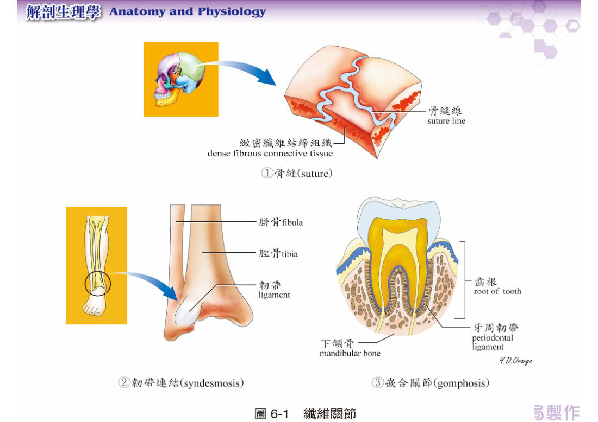
| 類型 | 特徵 | 功能分類／例子 |
|---|---|---|
| 骨縫suture | 見於頭顱骨，薄層緻密纖維結締組織；接合面不規則，更強固、減少骨折。成年後有些被骨組織取代＝骨性接合synostoses（如額縫 metopic suture 消失，左右額骨合為一塊） | 不動關節 |
| 韌帶連結syndesmosis | 纖維組織比骨縫多，但結合較不緊密；形成片狀骨間膜或索狀韌帶 | 微動關節；脛腓遠側關節、橈尺骨幹間 |
| 嵌合關節gomphosis （釘狀縫合） | 錐狀齒根嵌入上、下頜骨槽；接合物質＝牙周韌帶periodontal ligament | 不動關節 |
軟骨關節（兩類）
| 類型 | 接合物質 | 例子 |
|---|---|---|
| 軟骨結合synchondrosis | 透明軟骨 hyaline cartilage | 骨骺板 epiphyseal plate（最常見，發育完成後被硬骨取代＝暫時性關節）；第一肋骨與胸骨間 |
| 聯合symphysis | 寬廣扁平的纖維軟骨盤 | 椎間盤 intervertebral disc、恥骨聯合；屬微動關節 |
易混淆
軟骨結合（透明軟骨，常為暫時性）vs. 聯合（纖維軟骨盤，微動）。第 1 肋軟骨—胸骨是軟骨結合（不動）；第 2–7 肋軟骨—胸骨是滑動關節（表6-1）。
滑膜關節 synovial joint 的構造
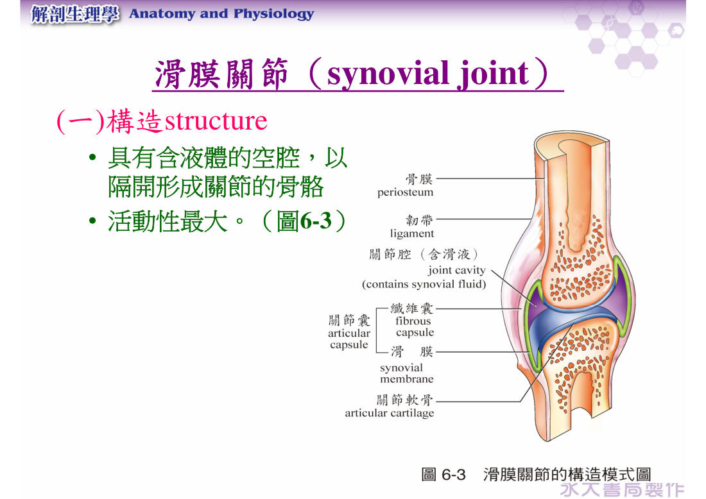
具含液體的空腔隔開骨骼，活動性最大，人體大部分關節屬此型。
- 關節腔joint cavity（滑液腔 synovial cavity）：此類關節的特有特徵。
- 關節軟骨articular cartilage：覆於骨表面的透明軟骨。
- 關節囊articular capsule：雙層。外層＝緻密結締組織（強韌）；內層＝滑膜synovial membrane（疏鬆結締組織薄膜，襯於整個滑膜腔，不覆蓋關節軟骨）。
- 滑液synovial fluid：由滑膜細胞分泌的玻尿酸 hyaluronic acid ＋血漿來的間質液；外觀、黏稠度似蛋白，關節活動時黏稠度降低。功能：(1) 使軟骨不相接觸；(2) 潤滑、減少摩擦；(3) 營養關節軟骨；(4) 含吞噬細胞，移除微生物及碎片。
- 加強韌帶reinforcing ligament：①囊本身增厚（例：髖關節髂股韌帶）；②囊內但被滑膜包圍（例：膝十字韌帶）；③囊外（例：膝腓側副韌帶）。
特別構造：膝關節含脂肪墊與關節盤articular disc（增加穩定度）。黏液囊bursa與腱鞘tendon sheath減少摩擦：
- 黏液囊：位於皮膚與骨、肌腱與骨、肌肉與骨、韌帶與骨之間摩擦處；壁為襯滑膜的結締組織，內含滑液。
- 腱鞘：基本上是延長的滑膜囊，完全包圍肌腱。
滑膜關節穩定性的三因素
- 關節面（大小、形狀、排列）：例，髖關節大股骨頭套入深髖臼，較穩定。
- 韌帶：引導運動、防止過度移動；足踝過度外翻可能傷到足踝內側韌帶。
- 肌肉張力 muscle tone：增加穩定性。
記憶口訣
穩定三要素「面、韌、肌」：關節面、韌帶、肌肉張力。滑膜關節五構造「腔、軟、囊、液、韌」。
滑膜關節的類型與運動
六種類型
| 類型 | 別名 | 特徵／軸 | 例子 |
|---|---|---|---|
| 滑動關節gliding joint | 摩動關節 arthrodia、平面關節 plane joint | 關節面平，左右、前後滑動，不能扭轉；多為單軸，也可多軸 | 腕骨間、跗骨間、胸鎖、肩峰鎖、脊椎關節突間、肋椎、肋胸 |
| 屈戌關節hinge joint | 樞紐關節 | 凸面嵌入凹面，只能屈曲、伸展；單軸 | 肘、膝、踝、指間、趾間 |
| 橢圓關節ellipsoidal joint | 髁狀關節 | 卵圓形骨髁嵌入橢圓腔；前後、左右運動；雙軸（屈、伸、內收、外展） | 橈腕關節、掌指關節 |
| 車軸關節pivot joint | — | 圓（錐）面與骨＋韌帶形成的環相關節；主要為旋轉；單軸 | 寰軸關節、上橈尺關節、下橈尺關節 |
| 鞍狀關節saddle joint | — | 兩邊關節面皆馬鞍狀（一向凹、一向凸）；特化的橢圓關節，範圍較大；雙軸 | 大多角骨與第一掌骨間的腕掌關節 |
| 球窩關節ball-and-socket joint | 杵臼關節 | 球面嵌入杯狀凹；屈、伸、內收、外展、旋轉、迴旋；多軸，活動性最大 | 肩關節、髖關節 |
記憶口訣
軸數：「單：滑、屈戌（樞紐）、車軸；雙：橢圓、鞍狀；多：球窩」。 想像：門鉸鏈（屈戌）只開關；轉頭搖「不」＝車軸；肩、髖＝球窩最自由。
易混淆
橢圓關節（橈腕、掌指）vs. 鞍狀關節（拇指腕掌）：兩者都是雙軸，鞍狀是特化的橢圓關節，運動範圍較大。滑動關節通常單軸，但「可多軸」。
限制滑膜關節運動的因素
- 柔軟部位抵制：例，肘屈曲時前臂與上臂前面互相擠壓。
- 韌帶張力：限制並引導運動；膝屈曲時主要韌帶鬆弛，伸展時變緊，骨間接觸最充分。
- 肌肉張力：加強韌帶限制；例，膝伸直抬大腿受腿後肌（hamstring）張力限制，膝屈曲時張力減小，大腿可抬更高。
- 關節骨骼構造。
滑膜關節的運動
| 類別 | 運動 | 定義／例子 |
|---|---|---|
| 滑動gliding | — | 最簡單；平坦面互相移動，無角度或旋轉。例：腕骨間、跗骨間，肋骨頭與結節在椎體與橫突的滑動 |
| 角動angular 增減骨間角度 | 屈曲flexion | 關節前面角度變小（頭前屈、屈肘）。例外：膝關節、趾間關節——使關節骨後面角度變小 |
| 伸展extension | 關節前面角度變大（膝與趾間例外）；使屈曲部位回復解剖姿勢。超過解剖姿勢＝過度伸展hyperextension（如頭後仰） | |
| 外展abduction | 離開身體正中線。手指外展以中指假想線為基準；腳趾以第二趾假想線為基準 | |
| 內收adduction | 移向正中線，與外展相反 | |
| 旋轉rotation | 內旋 medial／外旋 lateral | 骨沿本身長軸轉動，轉動時不能同時做其他動作；肩、髖、寰軸關節可旋轉。搖頭＝寰椎繞軸椎齒狀突轉動。內旋＝前面轉向中線；外旋＝前面轉離中線 |
| 迴旋circumduction | — | 遠側端作360°環形運動，近側端穩定，劃出圓錐；包含屈、伸、內收、外展。例：伸直手臂繞圈投球 |
特殊運動 special movements（11 種）
| # | 運動 | 定義 |
|---|---|---|
| 1 | 內翻inversion | 足底在踝關節朝內 |
| 2 | 外翻eversion | 足底在踝關節朝外 |
| 3 | 足背屈曲dorsiflexion | 踝關節彎曲，往足背方向 |
| 4 | 足底屈曲plantar flexion | 踝關節伸直，往足底方向 |
| 5 | 前引protraction | 下頜骨或鎖骨沿水平方向向前（下巴往外突） |
| 6 | 後縮retraction | 沿水平方向將前引部位縮回 |
| 7 | 旋後supination | 前臂運動使手掌面轉向前或向上 |
| 8 | 旋前pronation | 手掌面轉向後或向下 |
| 9 | 上提elevation | 身體一部分向上（聳肩） |
| 10 | 下壓depression | 身體一部分向下（肩下壓） |
| 11 | 對掌opposition | 拇指與其他手指掌側末端彼此接近（握筆、拿筷子） |
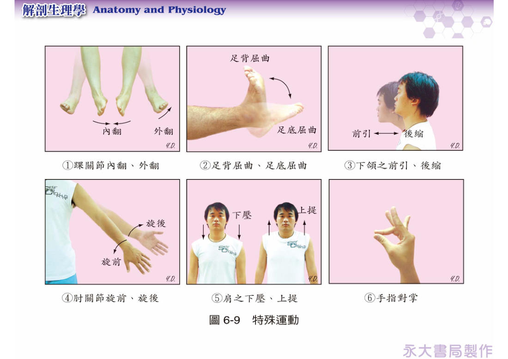
記憶口訣
旋後＝手心向上（像「捧湯」，soup 向上）；旋前＝手心向下。足背屈＝腳尖翹向小腿；足底屈＝踩油門。
易混淆
內翻／外翻是足底方向；旋前／旋後是前臂（手掌）；前引／後縮看水平前後，上提／下壓看垂直上下。膝與趾間關節的屈、伸定義與一般相反（以後面角度為準）。
人體重要關節（表6-1 與四大關節）
表6-1 人體個別關節摘要
| 部位 | 關節 | 關節骨 | 型式 | 主要運動 |
|---|---|---|---|---|
| 頭顱骨 | 大多數關節 | 頭顱骨之間 | 骨縫 | 不動 |
| 顳下頜關節 temporomandibular joint | 下頜髁與顳骨下頜窩 | 屈戌及滑動關節 | 滑動、屈曲（下頜骨上提）、伸展（下頜骨下壓） | |
| 齒頜骨關節 | 牙齒與上、下頜骨 | 嵌合關節 | 不動 | |
| 脊柱 | 枕寰關節 atlantooccipital | 枕骨髁與寰椎 | 髁狀關節 | 屈曲、伸展 |
| 寰軸關節 atlantoaxial | 寰椎與軸椎 | 車軸關節 | 旋轉（單軸） | |
| 椎間盤 intervertebral disc | 相鄰椎體之間 | 聯合 | 整個脊柱可屈曲、伸展、旋轉 | |
| 椎間關節 intervertebral joint | 上、下關節突之間 | 滑動關節 | 滑動 | |
| 胸廓 | 肋胸關節 sternocostal | 第 1 肋軟骨與胸骨 | 軟骨結合 | 不動 |
| 第 2–7 肋軟骨與胸骨 | 滑動關節 | 滑動 | ||
| 肋椎關節 costovertebral | 肋骨頭與椎體；肋結節與椎骨橫突 | 滑動關節 | 滑動 | |
| 肩帶 | 胸鎖關節 sternoclavicular | 胸骨柄與鎖骨胸骨端 | 滑動關節 | 滑動 |
| 肩峰鎖關節 acromioclavicular | 肩胛骨肩峰與鎖骨肩峰端 | 滑動關節 | 滑動 | |
| 上肢 | 肩關節 shoulder | 肩胛骨關節盂與肱骨頭 | 球窩關節 | 屈、伸、外展、內收、旋轉、迴旋 |
| 肘關節 elbow | 肱骨滑車與尺骨滑車切迹；肱骨小頭與橈骨頭 | 屈戌關節 | 屈曲、伸展 | |
| 上橈尺關節 | 橈骨頭與尺骨橈骨切迹 | 車軸關節 | 旋轉 | |
| 下橈尺關節 | 尺骨頭與橈骨尺骨切迹 | 韌帶聯合 | 微動 | |
| 橈腕關節 radiocarpal | 橈骨與近側腕骨 | 髁狀關節 | 屈、伸、內收、外展 | |
| 腕骨間關節 | 腕骨之間 | 滑動關節 | 滑動 | |
| 腕掌關節 carpometacarpal | (a) 大多角骨與拇指掌骨 (b) 腕骨與其他掌骨 | (a) 鞍狀關節 (b) 滑動關節 | (a) 屈、伸、內收、外展 (b) 滑動 | |
| 掌指關節 / 指間關節 | 掌骨與指骨 / 指骨之間 | 髁狀關節 / 屈戌關節 | 屈、伸、內收、外展 / 屈、伸 | |
| 骨盆帶 | 薦髂關節 sacroiliac | 薦骨耳狀面與髂骨 | 韌帶連結 | 微動 |
| 恥骨聯合 pubic symphysis | 恥骨之間 | 聯合 | 微動 | |
| 下肢 | 髖關節 hip | 髖臼與股骨頭 | 球窩關節 | 屈、伸、內收、外展、旋轉、迴旋 |
| 膝關節 knee | 股骨髁與脛骨髁 | 屈戌關節 | 屈曲及伸展 | |
| 上脛腓關節 | 脛骨與腓骨近端 | 滑動關節 | 滑動 | |
| 下脛腓關節 | 脛骨與腓骨遠端 | 韌帶連結 | 微動 | |
| 踝關節 ankle | 脛骨及腓骨與距骨 | 屈戌關節 | 足背屈曲、足底屈曲 | |
| 跗骨間關節 / 跗蹠關節 | 跗骨之間 / 跗骨與蹠骨 | 滑動關節 | 滑動 | |
| 蹠趾關節 | 蹠骨與趾骨 | 髁狀關節 | 屈、伸、外展、內收 | |
| 趾間關節 | 趾骨之間 | 屈戌關節 | 屈曲、伸展 |
必背重點
- 球窩：肩、髖。屈戌：肘、膝、踝、指/趾間。車軸：寰軸、上橈尺。髁狀（橢圓）：橈腕、掌指、蹠趾、枕寰。鞍狀：拇指腕掌。
- 微動：薦髂（韌帶連結）、恥骨聯合（聯合）、下橈尺／下脛腓（韌帶）、椎間盤（聯合）。
(一) 肩關節 Shoulder Joint
- 由肱骨頭與肩胛骨關節盂組成，又稱盂肱關節glenohumeral joint；球窩關節；全身活動度最大，但穩定性較差。
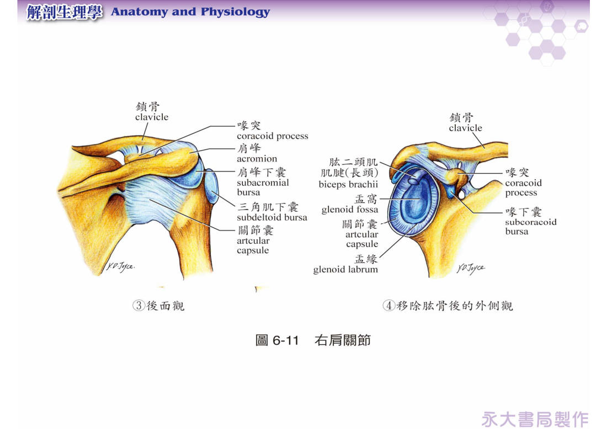
| 構造 | 重點 |
|---|---|
| 關節囊 articular capsule | 由關節窩周圍延伸至肱骨解剖頸 |
| 喙肱韌帶coracohumeral lig. | 肩胛骨喙突→肱骨大結節；強韌寬廣，支持上肢重量 |
| 盂肱韌帶glenohumeral lig. | 位於關節腹側，關節囊增厚部分 |
| 肱橫韌帶transverse humeral lig. | 肱骨大結節→小結節，跨過結節間溝 |
| 盂緣glenoid labrum | 繞關節盂邊緣一圈狹窄纖維軟骨 |
| 黏液囊 bursa | 肩胛下囊（肩胛下肌腱與關節囊間）、三角肌下囊（三角肌與關節囊間）、肩峰下囊（肩峰與關節囊間）、喙下囊（喙突與關節囊間） |
肩關節靠橫過肩部的肌肉與肌腱強固，包括肱二頭肌長頭肌腱與肩旋轉套rotator cuff（幾乎完全包住肩關節，維持肱骨頭在關節盂內）：
| 方位 | 肌肉 |
|---|---|
| 上方 | 棘上肌 supraspinatus |
| 前方 | 肩胛下肌 subscapularis |
| 後方 | 棘下肌 infraspinatus、小圓肌 teres minor |
必背重點
肩旋轉套＝4 塊肌肉；下方沒有肌肉保護，因此肩關節下方最易受損（脫臼）。
記憶口訣
旋轉套 SITS：Supraspinatus 上、Infraspinatus 後、Teres minor 後、Subscapularis 前。
(二) 肘關節 Elbow Joint
- 複合關節、屈戌關節，由三個關節共包在一個關節囊：肱橈關節（肱骨小頭—橈骨頭）、肱尺關節（肱骨滑車—尺骨滑車切迹）、上橈尺關節（橈骨—尺骨）。
- 關節囊前後薄弱鬆弛，兩側增厚；由尺側副韌帶、橈側副韌帶、橈骨環狀韌帶加強。
- 屈曲／伸展由肱尺關節進行；屈曲範圍約 145°，過度伸展約 5°。
- 上橈尺關節是車軸關節，使前臂旋前、旋後。
- 日常例：提物＝伸肘；洗臉＝屈肘；書寫打字＝內旋（旋前）；拿碗＝外旋（旋後）。
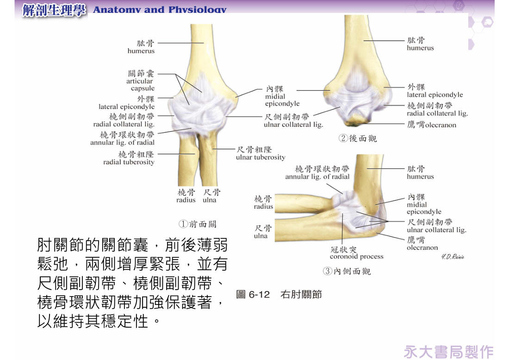
(三) 髖關節 Hip Joint
- 由股骨頭與髖臼組成，球窩關節。
- 成人很少脫臼，原因：(1) 杵臼關節穩定；(2) 關節囊增厚強韌；(3) 有強韌囊內韌帶；(4) 周圍有廣大肌群；(5) 髖臼唇直徑比股骨頭小。
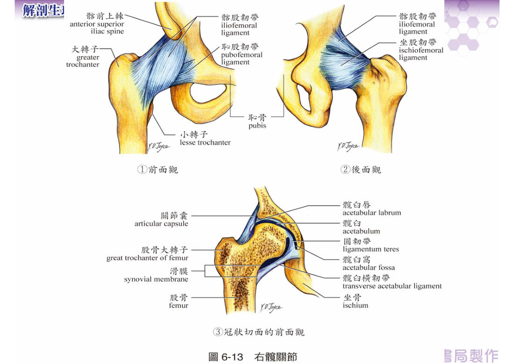
| 構造 | 起止／重點 |
|---|---|
| 關節囊 | 髖臼唇→股骨頸；人體最強壯的韌帶之一，含環走與縱走纖維；環走纖維在股骨頭部形成環，縱走纖維有髂股、恥股、坐股韌帶加強 |
| 髂股韌帶iliofemoral lig. | 囊增厚部；髂前下棘 → 股骨轉子間線 |
| 恥股韌帶pubofemoral lig. | 囊增厚部；髖臼唇恥骨部分 → 股骨頸 |
| 坐股韌帶ischiofemoral lig. | 囊增厚部；髖臼坐骨壁 → 股骨頸 |
| 圓韌帶ligamentum teres | 髖臼窩 → 股骨頭（頭小凹）；又稱股骨頭韌帶 capitate ligament；扁平三角帶狀，內含血管，營養股骨頭 |
| 髖臼唇acetabular labrum | 附於髖臼邊緣的纖維軟骨，加深髖臼，直徑比股骨頭小 |
| 髖臼橫韌帶 | 跨過髖臼切迹的強壯韌帶 |
易混淆
肩盂緣 glenoid labrum（肩）vs. 髖臼唇 acetabular labrum（髖），都是纖維軟骨。圓韌帶在囊內（髖臼窩→股骨頭小凹），其他三條韌帶是關節囊增厚。
(四) 膝關節 Knee Joint
人體最大且構造最複雜的關節，由三部分組成：
| 部分 | 介於 | 型式 |
|---|---|---|
| 中間：髕股關節（講義稱「膝股關節」） | 髕骨與股骨髕面 | 滑動關節 |
| 外側脛股關節 | 股骨外髁與外側半月板 | 屈戌關節 |
| 內側脛股關節 | 股骨內髁與內側半月板 | 屈戌關節 |
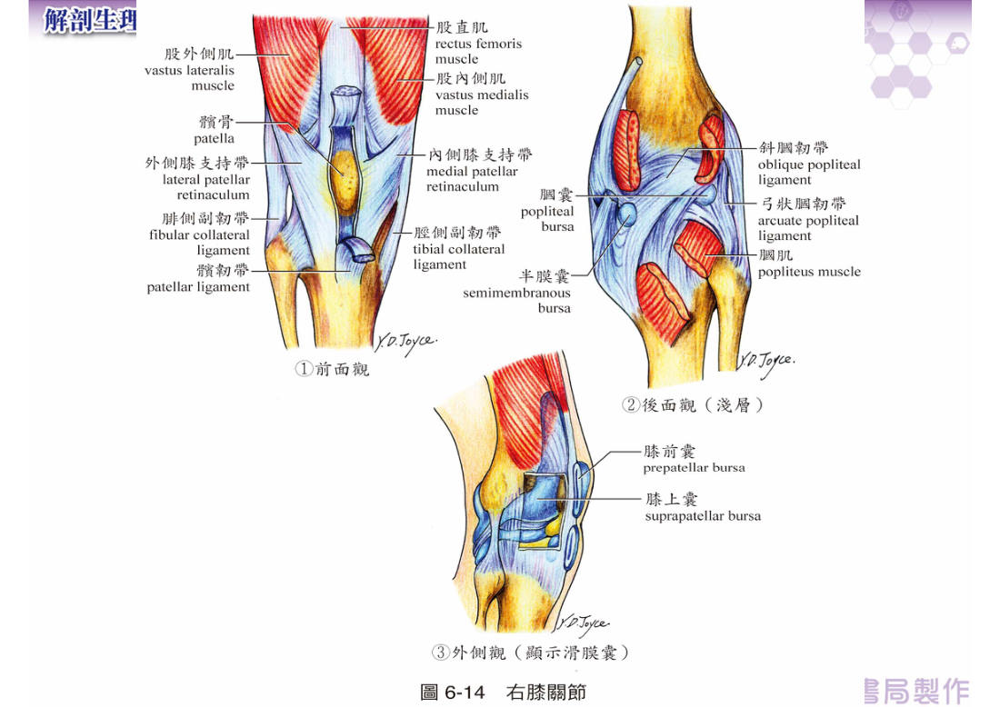
| 構造 | 重點 |
|---|---|
| 關節囊 | 不完整；周圍韌帶鞘多由肌腱或其延伸構成 |
| 內、外側膝支持帶 retinaculum | 由股四頭肌終止肌腱與闊筋膜形成，強化前面 |
| 髕韌帶patellar lig. | 股四頭肌共同肌腱的中間部分，強化前面；深部以膝下脂肪墊與滑膜相隔 |
| 斜膕韌帶oblique popliteal lig. | 廣而扁；股骨髁間窩—脛骨頭；表面有半膜肌腱；強化後面 |
| 弓狀膕韌帶arcuate popliteal lig. | 股骨外髁 → 腓骨頭；強化後面下外側 |
| 脛側副韌帶tibial collateral lig. | 內側，寬而扁；股骨內髁 → 脛骨內髁；縫匠肌、股薄肌、半腱肌腱橫過而增強 |
| 腓側副韌帶fibular collateral lig. | 外側，強而圓；股骨外髁 → 腓骨頭外側；股二頭肌腱覆蓋，膕肌腱在深部；位於囊外 |
| 十字韌帶cruciate lig.（前、後） | 關節內韌帶，連結股骨與脛骨，防止過度伸展及屈曲。前十字韌帶：脛骨前髁間 → 股骨外髁後端；過度伸展會損傷，導致脛骨向前脫位 |
| 半月板meniscus（關節盤） | 纖維軟骨；內側半月板、外側半月板；位於脛骨髁與股骨髁之間，防止骨向外脫位，但運動時極易受傷 |
| 主要滑液囊 | 前囊：膝前囊（髕骨與皮膚間）、膝下囊（脛骨上部與髕韌帶間）、膝上囊（股骨下部與股四頭肌間）；內側囊；外側囊 |
易混淆
脛側（內側）副韌帶＝寬而扁、連到脛骨；腓側（外側）副韌帶＝強而圓、連到腓骨頭，在囊外。十字韌帶在囊內（被滑膜包圍）。膝前囊（皮膚—髕骨）vs. 膝下囊（脛骨—髕韌帶）vs. 膝上囊（股骨—股四頭肌）。
記憶口訣
膝關節「內脛外腓」：內側＝脛側副韌帶、外側＝腓側副韌帶；囊內有「十字」＋「半月」兩個盤韌；前囊由淺到深＝皮膚下（前）、髕韌帶下（下）、股四頭肌下（上）。
備註：講義 p.85 將中間關節寫為「膝股關節／膝骨面」，實應為髕股關節／髕面，上表已更正。
肌肉組織總論
1. 基本概念
- 肌肉組織muscular tissue：骨骼肌、心肌、平滑肌三類具收縮性的組織，約占體重 40～50%。
- 肌肉系統muscular system：一般專指骨骼肌系統。骨骼肌配合骨骼，由神經系統意識控制 → 隨意運動。
- 人體約有 700 條骨骼肌，絕大部分左右成對。
2. 肌肉的四大特性
- 興奮性excitability：接受刺激並產生反應的能力。
- 收縮性contractility：受到充分刺激時，能變短、變粗而收縮。
- 伸展性extensibility：受拉力時能伸展、延長。
- 彈性elasticity：收縮或伸展後能回復原來形狀。
記憶口訣
「興、收、伸、彈」：興奮 → 收縮 → 伸展 → 彈回。
3. 肌肉的功能
肌肉收縮 → 1.運動（走路、說話、寫字；心跳、消化道蠕動、膀胱排尿）、2.維持身體姿勢（站、坐）、3.產生熱（骨骼肌收縮產熱，85%用於維持正常體溫）。
4. 三種肌肉的種類
- 骨骼肌skeletal muscle：附著骨骼、移動骨骼系統；有橫紋 → 又稱橫紋肌（striated muscle）；受意識控制 → 隨意肌（voluntary muscle）。
- 心肌cardiac muscle：構成心臟壁；橫紋肌，但為不隨意肌（involuntary muscle）。
- 平滑肌smooth muscle：又稱內臟肌（visceral muscle），位於血管、胃、膽囊、腸道等中空內臟壁；無橫紋、不隨意。
表 7-1 骨骼肌、心肌、平滑肌的比較（重點考表）
| 項目 | 骨骼肌 | 心肌 | 平滑肌 |
|---|---|---|---|
| 位置 | 主要附著於骨骼 | 心臟 | 中空內臟壁（胃、腸、膀胱、子宮、血管）、虹膜、豎毛肌 |
| 神經控制 / 意識控制 | 隨意 / 是 | 不隨意 / 否 | 不隨意 / 否 |
| 支配神經 | 體運動神經 | 自主神經 | 自主神經 |
| 橫紋、肌節 | 有、有 | 有、有 | 無、無 |
| 顯微構造 | 多核、未分支、長圓柱狀 | 單核、方形、具間盤的分叉肌纖維 | 單核、梭形 |
| 橫小管（T 小管） | 有 | 有 | 無 |
| 鈣的來源 | 肌漿網 | 肌漿網及細胞外液 | 肌漿網及細胞外液 |
| 鈣離子結合位置 | 旋轉素（troponin） | 旋轉素 | 攜鈣素（calmodulin） |
| 粒線體 | 次多 | 最多 | 最少 |
| 肌纖維長度 | 100 μm～30 cm | 50～100 μm | 30～200 μm |
| 靜止膜電位 | −90 mV | −80 mV | −50 mV |
| 節律性收縮 | 無 | 有 | 有 |
| 強直性收縮 | 有 | 無 | 無 |
| 不反應期 | 5 msec | 300 msec | 50 msec |
| 切斷支配神經 → 肌萎縮 | 會 | 不會 | 不會 |
| 切斷支配神經 → 過敏現象 | 會 | 不會 | 會 |
| 收縮速度 | 快 | 中等 | 慢 |
| 再生能力 | 有限 | 無 | 較好，但比上皮差 |
必背重點
- 橫紋：骨骼肌 + 心肌有；平滑肌無。有 T 小管、肌節者亦同。
- 粒線體：心肌最多、骨骼肌次之、平滑肌最少。
- 不反應期：心肌 300 ＞ 平滑肌 50 ＞ 骨骼肌 5 msec（心肌不會發生強直收縮）。
- 鈣結合蛋白：骨骼肌、心肌 = 旋轉素；平滑肌 = 攜鈣素。
- 唯一切斷神經會萎縮的是骨骼肌；平滑肌與骨骼肌切斷神經會出現過敏現象。
記憶口訣
橫紋肌＝「骨＋心」；神經 5 欄：骨骼＝體運動神經，心、平滑＝自主神經。
骨骼肌的構造
1. 結締組織成分
筋膜fascia：皮下或包住肌肉及其他器官的片狀、帶狀纖維結締組織。
| 種類 | 組成 | 功能 |
|---|---|---|
| 淺層筋膜superficial fascia | 脂肪組織 + 疏鬆結締組織 | (1)水與脂肪的倉庫 (2)絕緣層，防水分與熱量散失 (3)對重擊提供機械性保護 (4)神經與血管通路 |
| 深層筋膜deep fascia | 緻密、不含脂肪的結締組織，覆於體壁及四肢 | (1)使肌肉自由運動 (2)神經血管通路 (3)填充肌肉間空隙 (4)有時作為肌肉起端附著點；將肌肉依功能群分開 |
2. 肌肉的三層膜（由外而內）
- 肌外膜epimysium：由深層筋膜延伸而來，包覆整條肌肉。
- 肌束膜perimysium：伸入肌肉內，把肌肉分成多個肌束fasciculus，包住每一條肌束。
- 肌內膜endomysium：伸入肌束內，包住每一條肌纖維（細胞）；微血管分布於此。
- 三層膜延伸到肌肉外 → 肌腱tendon（附著於骨）；呈片狀者 → 腱膜aponeurosis，如顱頂的帽狀腱膜。
- 肌腱外的纖維性管狀鞘（手腕、足踝）→ 腱鞘tendon sheath。
- 神經血管：通常一條動脈 + 一或兩條靜脈 + 一條神經一起穿入一塊骨骼肌。
記憶口訣
外→內：「外（epi）整條、束（peri）一束、內（endo）一根」。
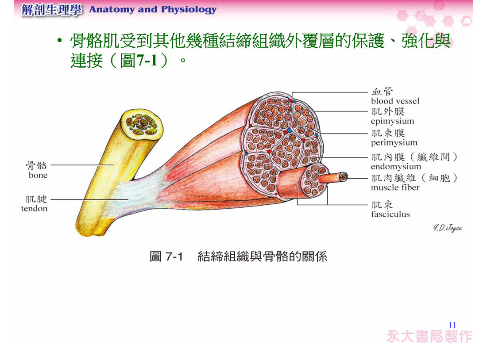
3. 組織學（微細構造）
- 每條肌纖維 = 單一細胞，直徑 10～100 μm，長圓柱狀、平行排列；細胞間無接合。
- 肌漿膜sarcolemma（細胞膜）、肌漿sarcoplasm（細胞質）；多個細胞核位於肌漿膜附近 → 多核細胞。
- 肌漿內：肌原纖維myofibril、高能分子、酶、肌漿網sarcoplasmic reticulum（= 無顆粒內質網，貯存鈣）。
- 橫小管T tubule：由肌漿膜內陷，橫走並與肌漿網垂直；骨骼肌的 T 小管位於明帶 I 與暗帶 A 交界處，把細胞間液送入每個肌節。
- 三合體triad = 1 條橫小管 + 兩側肌漿網的終池（terminal cisternae）；是神經刺激引發收縮的起點。
4. 肌節（sarcomere）
- 肌原纖維由粗肌絲myosin filament（肌凝蛋白絲）與細肌絲actin filament（肌動蛋白絲）排列而成。
- 肌節 = 肌肉收縮的單位；兩肌節以 Z 線Z line 分界。肌肉變長是增加肌節數目，不是增加肌節長度。
| 構造 | 內容 |
|---|---|
| A 帶（暗帶）A band | 暗色緻密區，代表粗肌絲的長度；兩側粗細肌絲重疊處更暗 |
| I 帶（明帶）I band | 淺色，只含細肌絲 |
| H 區H zone | A 帶中央較亮處，只含粗肌絲 |
| M 線M line | H 區中央的細線，連繫相鄰粗肌絲中段 |
| Z 線Z line | 肌節的邊界 |
記憶口訣
I 帶＝「I」只有細（thIn）；H 區＝只有粗；A 帶＝整個粗肌絲長度。收縮時 I 帶、H 區變短，A 帶長度不變。（收縮時變化為老師常考補充）
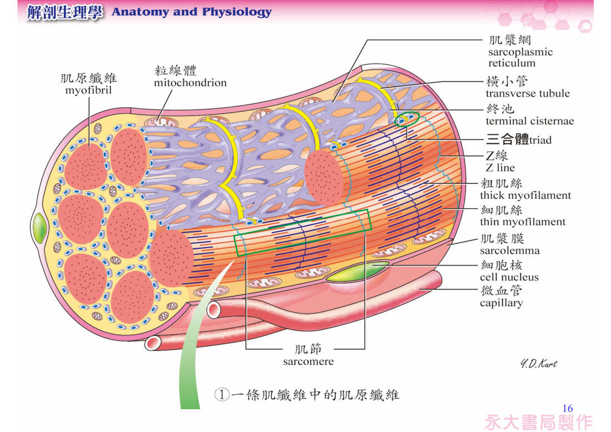
5. 骨骼肌纖維的種類（表 7-2）
| 項目 | 慢肌纖維 | 中等肌纖維 | 快肌纖維 |
|---|---|---|---|
| 別名 | 氧化型慢肌（第一型，slow oxidative） | 氧化–糖解型快肌（第二型-a） | 糖解型快肌（第二型-b，fast glycolytic） |
| 肌原纖維含量 | 較少 | 中等 | 較多 |
| 粒線體數目 | 很多 | 很多 | 很少 |
| 肌紅蛋白 | 多（紅肌纖維） | 多（紅肌纖維） | 少（白肌纖維） |
| 神經纖維直徑 | 小 | 中等 | 大 |
| 微血管數量 | 很多 | 很多 | 很少 |
| 收縮特徵 | 較慢、較有力，最不易疲勞 | 較快，較不易疲勞 | 較快，張力大；長時間快速收縮，較易疲勞 |
| ATP 水解酶速率 | 慢 | 快 | 快 |
| ATP 主要來源 | 氧化磷酸化 | 氧化磷酸化 | 糖解作用 |
| 肝糖含量 | 較少 | 中等 | 較多 |
| 不反應期 | 長 | 中等 | 短 |
| 功能 | 粗略動作，如維持姿勢的肌肉 | 移動身體，如下肢肌肉 | 精細動作，如上肢肌肉 |
易混淆
講義「快肌纖維＝精細動作（上肢）」、「慢肌＝維持姿勢」。紅肌（慢、中等）肌紅蛋白多；白肌（快）肌紅蛋白少。注意「不反應期」慢肌長、快肌短。
心肌與平滑肌組織
心肌組織（cardiac muscle）
- 橫紋、不隨意；纖維略呈方形，單一中央細胞核；肌漿較多，粒線體較大較多。
- T 小管比骨骼肌大，且位於 Z 線上（骨骼肌在 A–I 交界）。
- 纖維有分叉並相互連接成網狀；連接處增厚的肌漿膜 = 肌間盤intercalated disc。
- 細胞膜間以間隙接合gap junction相連，離子可自由擴散 → 形成合胞體syncytium：心房合胞體與心室合胞體；動作電位經房室束A-V bundle由心房傳到心室。
- 不需外在刺激即可每分鐘約 75 次規律收縮；刺激來自心臟本身特化傳導組織，外在神經只增減放電速率。
- 鈣來自肌漿網與細胞外液，輸送慢 → 收縮持續時間比骨骼肌長 10～15 倍；不反應期比骨骼肌長 60 倍（300 vs 5 msec）→ 兩次收縮間可充分鬆弛。
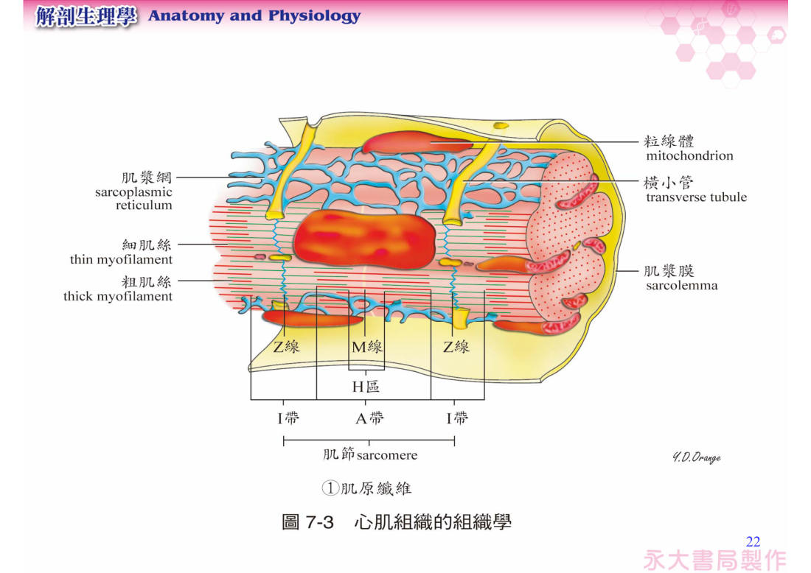
平滑肌組織（smooth muscle）
- 無橫紋、不隨意；中央一個卵圓形核；無 T 小管；大部分鈣來自細胞外液。
- 含肌動蛋白、肌凝蛋白及緻密體dense body：功能像橫紋肌的 Z 線，供肌動蛋白附著。
| 類型 | 單一單位平滑肌single-unit | 多單位平滑肌multi-unit |
|---|---|---|
| 別名 | 內臟平滑肌（visceral）、合體平滑肌（syncytial） | — |
| 位置 | 中空內臟壁：子宮、膀胱、胃、腸、輸尿管、血管 | 眼球睫狀肌、虹膜括約肌、虹膜輻射肌、豎毛肌、大動脈管壁 |
| 細胞連結 | 以間隙接合相連，形成大片內臟肌 | 無細胞接合，纖維分離 |
| 收縮 | 動作電位快速傳遞，數百至百萬條肌纖維如同單一單位一齊收縮 | 通常僅由一個自主神經末梢支配（類似骨骼肌） |
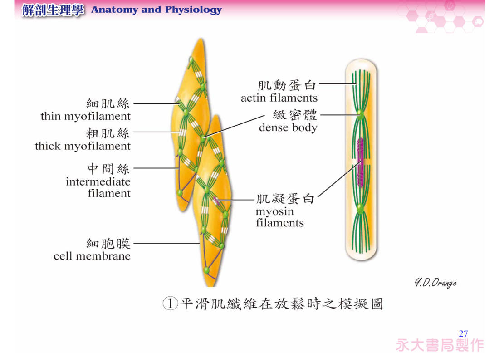
骨骼肌與運動
1. 起端與止端（origin & insertion）
- 肌肉施力於肌腱拉動骨骼；大部分肌肉至少跨過一個關節。收縮時可動骨移向固定骨。
- 起端origin：肌腱附著於固定骨的一端，通常在近側端。
- 止端insertion：肌腱附著於可動骨的一端，通常在遠側端。
- 運動時 止端移向起端。
記憶口訣
起＝固定、近端（不動的老家）；止＝可動、遠端（跑去靠近老家）。
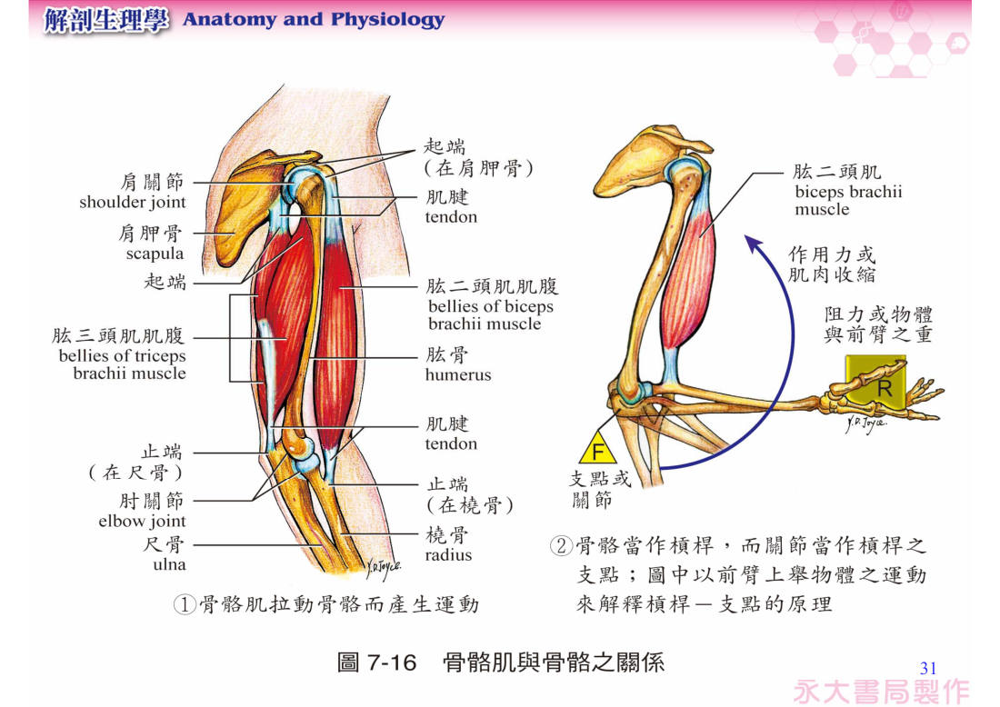
2. 肌束的排列（四型）
| 型式 | 特徵 | 例子 |
|---|---|---|
| 平行parallel | 肌束與長軸平行；運動範圍大、收縮力較小 | 扁平：顱頂肌、腹直肌；繩帶狀：縫匠肌；梭形：肱二頭肌 |
| 會聚式convergent | 廣闊肌束會聚成狹窄止端，呈三角形 | 胸大肌、顳肌 |
| 環狀circular | 肌束環繞開口（括約肌） | 口輪匝肌、眼輪匝肌 |
| 羽狀pennate | 肌束與長軸成對角線；較強而有力、運動範圍較小 | 單羽：伸趾長肌、脛肌；雙羽：股直肌；多羽：三角肌 |
易混淆
平行＝範圍大、力量小；羽狀＝力量大、範圍小。單、雙、多羽：伸趾長肌／股直肌／三角肌。
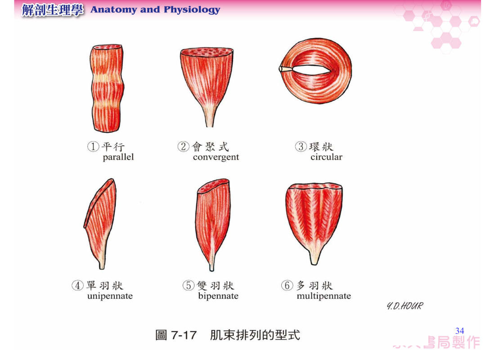
3. 肌群的作用（Group Actions）
- 作用肌／原動肌agonist / prime mover：產生意識性動作的肌肉。
- 拮抗肌antagonist：與作用肌相反，鬆弛的肌肉。兩者同時以相同力量收縮 → 無動作。
- 協同肌synergist：提高作用肌效率；例如前臂彎曲時，三角肌與胸大肌固定上臂與肩部。
| 動作 | 作用肌 | 拮抗肌 |
|---|---|---|
| 前臂彎曲 | 肱二頭肌收縮 | 肱三頭肌放鬆 |
| 前臂伸直 | 肱三頭肌收縮 | 肱二頭肌鬆弛 |
4. 骨骼肌的命名依據（7 項）
- 位置：顳肌、內／外肋間肌、脛前肌。
- 形狀：三角肌（三角形）、斜方肌（斜四方形）。
- 大小：臀大肌／臀小肌、長內收肌／短內收肌。
- 肌纖維方向：腹直肌、腹斜肌、腹橫肌。
- 起端的數目：肱二頭肌（2）、肱三頭肌（3）、股四頭肌（4）。
- 起端及止端位置：胸鎖乳突肌（起胸骨、鎖骨 → 止顳骨乳突）；莖突舌骨肌（起顳骨莖突 → 止舌骨）。
- 作用：很多四肢肌肉以作用命名（表 7-3）。
記憶口訣
「位形大向，頭端作」：位置、形狀、大小、纖維方向、頭數、起止端、作用。
表 7-3 肌肉的主要作用（作用名稱）
| 作用 | 定義 | 例子 |
|---|---|---|
| 屈肌 flexor | 通常減少關節前面之角度（有些減少後面角度） | 橈側腕屈肌 |
| 伸肌 extensor | 通常增加關節前面之角度 | 尺側腕伸肌 |
| 外展肌 abductor | 將骨骼移離中線 | 拇長外展肌 |
| 內收肌 adductor | 將骨骼移近中線 | 長內收肌 |
| 提肌 levator | 向上運動 | 提肩胛肌 |
| 降肌 depressor | 向下運動 | 降下唇肌 |
| 旋後肌 supinator | 使手掌轉向上或朝前 | 旋後肌 |
| 旋前肌 pronator | 使手掌轉向下或朝後 | 旋前圓肌 |
| 足背屈肌 dorsiflexor | 在踝關節處彎曲足部 | 脛前肌 |
| 足底屈肌 plantar flexor | 在踝關節處伸直足部 | 脛後肌 |
| 內翻肌 invertor | 使足底朝內 | 脛前肌 |
| 外翻肌 evertor | 使足底朝外 | 腓短肌 |
| 括約肌 sphincter | 縮小開口大小 | 肛門括約肌、尿道括約肌 |
| 張肌 tensor | 使身體某部位更僵硬 | 闊筋膜張肌 |
| 旋轉肌 rotator | 使骨骼沿長軸轉動 | 閉孔外肌 |
易混淆
旋後 supination＝掌心朝上／前；旋前 pronation＝掌心朝下／後。足背屈＝抬腳尖；足底屈＝踮腳尖。
主要淺層肌肉總覽（全身）
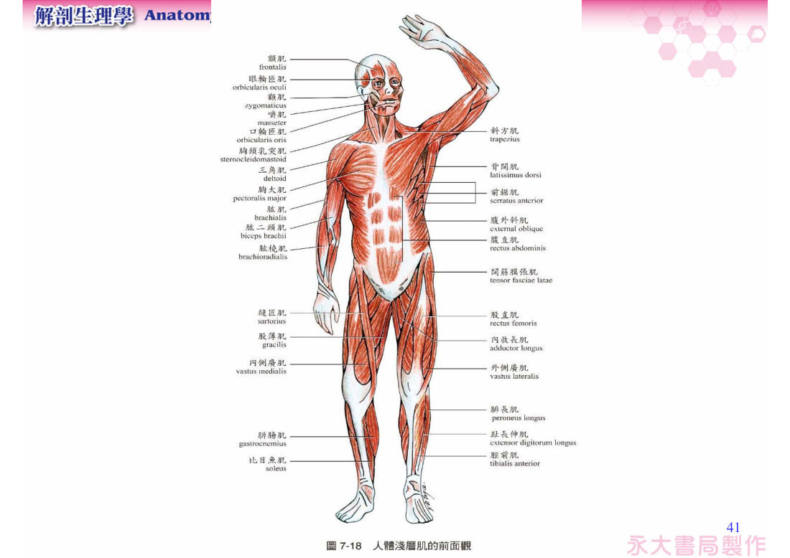
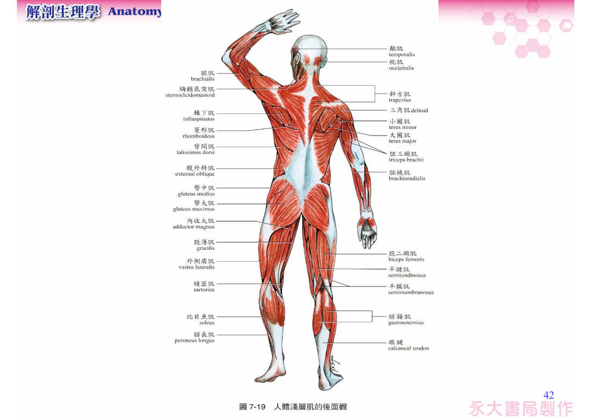
頭頸部的肌肉
包含：表情肌、咀嚼肌、眼球外在肌、舌外在肌、咽喉肌、移動頭部的肌肉。
1. 表情肌（表 7-4）
- 位於顏面及頭皮皮下；起於頭顱骨或筋膜，止於皮膚；收縮拉動皮膚 → 表情變化。肌纖維互相移行、缺乏筋膜包被，界線不明顯。
- 幾乎都由顏面神經支配；例外：提上瞼肌 → 動眼神經。
| 肌肉 | 起端 | 止端 | 作用 | 神經 |
|---|---|---|---|---|
| 顱頂肌 epicranius：額肌 frontalis + 枕肌 occipitalis（以帽狀腱膜 galea aponeurotica 相連） | 額肌：帽狀腱膜；枕肌：枕骨及顳骨乳突 | 額肌：眼眶上緣皮膚；枕肌：帽狀腱膜 | 額肌：揚眉、前額產生水平皺紋；枕肌：把頭皮往後拉 | 顏面神經 |
| 眼輪匝肌 orbicularis oculi | 額骨、上頜骨、內側瞼韌帶 | 眼眶周圍環形徑 | 閉眼 | 顏面神經 |
| 皺眉肌 corrugator supercilii | 額骨眉弓內側端 | 眉毛處皮膚 | 拉眉毛向內側 | 顏面神經 |
| 提上瞼肌 levator palpebrae superioris | 眼眶頂部蝶骨小翼 | 上眼瞼皮膚 | 上眼瞼上舉 | 動眼神經 |
| 口輪匝肌 orbicularis oris | 圍繞口裂之肌纖維 | 嘴角皮膚 | 閉口唇、使唇壓向牙齒、突出；說話時口唇成形 | 顏面神經 |
| 顴大肌 zygomaticus major | 顴骨 | 嘴角及口輪匝肌上皮膚 | 笑時使嘴角向上向外拉 | 顏面神經 |
| 提上唇肌 levator labii superioris | 上頜骨眶下孔上方 | 上唇 | 上唇上舉 | 顏面神經 |
| 降下唇肌 depressor labii inferioris | 下頜骨 | 下唇皮膚 | 下唇下壓 | 顏面神經 |
| 頰肌 buccinator | 上、下頜骨齒槽突及翼突下頜韌帶 | 口輪匝肌 | 吹氣時壓迫臉頰、吸吮；又稱喇叭手肌 | 顏面神經 |
| 頦肌 mentalis | 下頜骨 | 頦部皮膚 | 上舉及突出下唇，噘嘴時把頦部皮膚上拉 | 顏面神經 |
| 笑肌 risorius | 嚼肌之筋膜 | 嘴角皮膚 | 將嘴角往外拉 | 顏面神經 |
| 闊頸肌 platysma | 三角肌及胸大肌之筋膜 | 下頜骨、嘴角肌肉、臉部下方皮膚 | 下唇外側向下及向後拉，下壓下頜骨 | 顏面神經 |
必背重點
表情肌：顏面神經（CN VII）；提上瞼肌：動眼神經（CN III）。頰肌＝喇叭手肌，笑肌往外、顴大肌往上外。
2. 咀嚼肌（表 7-5）
- 共 4 條：嚼肌（咬肌）、顳肌、翼外肌、翼內肌；止端都在下頜骨；三叉神經下頜枝支配。
- 顳肌最結實；嚼肌與顳肌是主要有力的閉口肌；翼外、翼內肌位於下頜骨內側。
| 肌肉 | 起端 | 止端 | 作用 |
|---|---|---|---|
| 嚼肌 masseter（咀嚼肌最強大） | 顴弓下緣與內側面 | 下頜角及下頜枝外側面 | 上提下頜骨使口閉合 |
| 顳肌 temporalis | 顳骨的顳窩 | 下頜骨冠狀突與下頜枝前緣 | 上提及縮回下頜骨，使牙關緊閉 |
| 翼外肌 lateral pterygoid | 上頭：蝶骨下表面與大翼顳下嵴；下頭：蝶骨外翼板外側 | 下頜骨髁狀突稍下方的翼小凹 | 下顎前突、移向對側、協助張口、稍微閉口 |
| 翼內肌 medial pterygoid（2 個起端） | 深層頭：蝶骨外翼板內側；淺層頭：上頜骨粗隆及腭骨錐狀突 | 下頜枝後下部與下頜角內側面 | 使下顎骨上提、前突、移向對側 |
- 嚼肌：淺層纖維走向近臼齒牙根，使下顎向前上；深層近垂直，使下顎向上，止端亦附著冠狀突。
- 顳肌：前部垂直（上提）；中部向後上（上提 + 後縮）；後部近水平（向後移動，並與對側翼外肌協調做側方運動）。
- 翼外肌：雙側同收 → 下頜前突；單側收縮 → 下顎往對側旋轉，配合翼內肌 → 研磨食物；上頭在閉口時穩定關節盤；功能紊亂可致顳下頜關節障礙。
- 翼內肌：與翼外肌協同前突；與嚼肌共同調節下顎垂直位置。
易混淆
閉口（上提）：嚼肌、顳肌（強）；前突／側移（研磨）：翼外肌、翼內肌。翼外肌與張口有關。
3. 眼球外在肌（表 7-6）
- 起端在眼球以外構造，止端在眼球外表面；協調出問題 → 斜視。
- 眼球內在肌intrinsic為平滑肌：瞳孔括約肌（sphincter pupillae）、瞳孔放射狀肌／擴大肌（dilator pupillae）、睫狀肌。
| 肌肉 | 起端 | 止端 | 作用 | 神經 |
|---|---|---|---|---|
| 上直肌 superior rectus | 眼眶頂部之總腱環 | 眼球上面中央 | 向上內側看、向內旋轉 | 動眼 CN III |
| 下直肌 inferior rectus | 同上 | 眼球下面中央 | 向下內側看、向外旋轉 | 動眼 CN III |
| 外直肌 lateral rectus | 同上 | 眼球外側 | 向外側看 | 外旋神經 CN VI |
| 內直肌 medial rectus | 同上 | 眼球內側 | 向內側看 | 動眼 CN III |
| 上斜肌 superior oblique | 總腱環上方 | 上直肌與外直肌間之眼球 | 向下外側看、向內旋轉 | 滑車神經 CN IV |
| 下斜肌 inferior oblique | 眼眶底部之前內側 | 下直肌與外直肌間之眼球 | 向上外側看、向外旋轉 | 動眼 CN III |
記憶口訣
「LR6 SO4」：Lateral Rectus = CN VI（外旋神經）、Superior Oblique = CN IV（滑車神經），其餘 4 條都是 CN III 動眼神經。
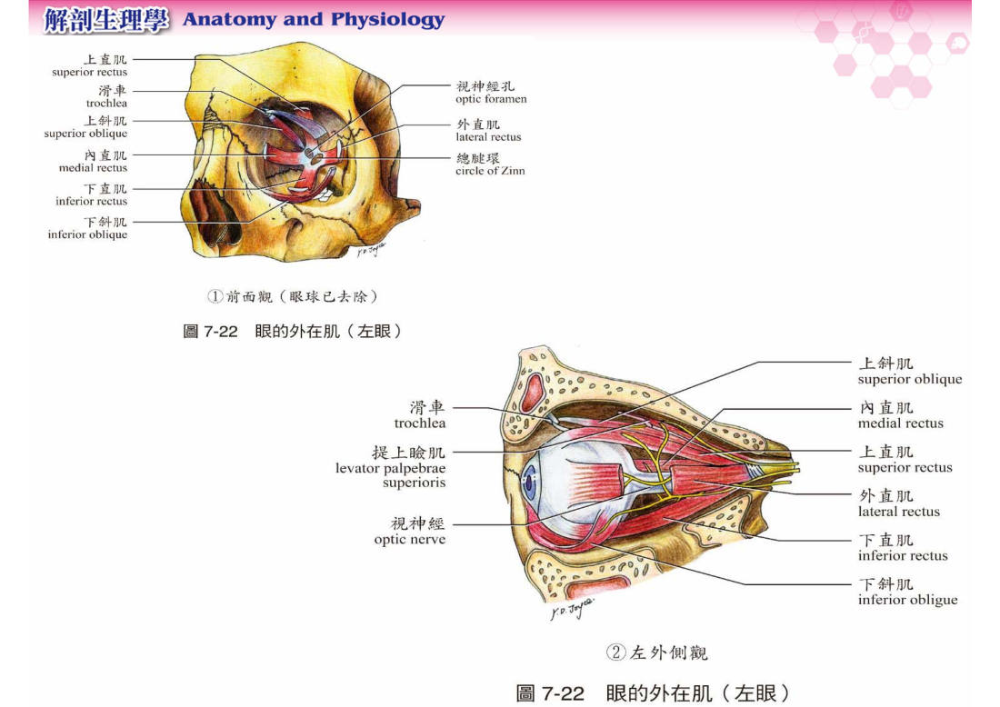
4. 舌的肌肉
- 外在肌：移動舌的位置（表 7-7，講義未附表）。
- 內在肌：含各種走向的骨骼肌纖維，使舌做靈巧運動（如捲舌）；舌下神經支配。
5. 咽的肌肉（表 7-8）
| 肌肉 | 起端 | 止端 | 作用 | 神經 |
|---|---|---|---|---|
| 上咽縮肌 superior pharyngeal constrictor | 翼突、翼突下頜縫、下頜骨下頜舌骨線 | 咽後正中縫 | 收縮咽上部，將食團送入食道 | 迷走神經 |
| 中咽縮肌 middle | 舌骨大角及小角、莖突舌骨韌帶 | 同上 | 收縮咽中部，送食團 | 迷走神經 |
| 下咽縮肌 inferior | 咽之環狀及甲狀軟骨 | 同上 | 收縮咽下部，送食團 | 迷走神經 |
| 莖突咽肌 stylopharyngeus | 莖突基部內側 | 甲狀軟骨及咽部外側 | 喉上提、咽擴張，協助食團下降 | 舌咽神經 |
| 耳咽管咽肌 salpingopharyngeus | 耳咽管下部 | 腭咽肌後部纖維 | 吞嚥時上提咽側壁；打開耳咽管開口 | 迷走神經 |
| 腭咽肌 palatopharyngeus | 軟腭 | 甲狀軟骨後緣及咽外側與後壁 | 吞嚥時上提咽與喉，協助關閉鼻咽 | 迷走神經 |
與吞嚥相關的肌肉
- 舌與頰肌：擠壓食物沿口腔頂後移至咽。
- 下頜舌骨肌、頦舌骨肌：將喉頭向上向前拉起，使食道打開，會厭軟骨拉向下封閉喉開口。
- 腭帆張肌、腭帆提肌：上提軟腭，封閉後鼻孔。
- 腭咽肌：上提咽喉，關閉鼻咽。
- 耳咽管咽肌：上提咽部，打開耳咽管。
- 咽縮肌（上、中、下）：接受延髓訊息收縮，把食物送入食道。
6. 喉的肌肉
- 喉的外在肌extrinsic = 終止於舌骨的肌肉：舌骨上肌（suprahyoid）與舌骨下肌（infrahyoid）；控制舌骨與喉位置，可下壓下頜骨、使口腔底變緊、穩固舌與咽。
- 喉的內在肌intrinsic：起止端均在喉軟骨；功能為改變聲帶緊張度及聲門大小（表 7-10，講義未附表）。
| 群組 | 肌肉 | 起端 | 止端 | 作用 | 神經 |
|---|---|---|---|---|---|
| 舌骨上肌 | 二腹肌 digastricus | 前腹：下頜骨下緣內側；後腹：顳骨乳突 | 舌骨體 | 開口時上提舌骨、下壓下頜骨 | 前腹：三叉神經下頜枝；後腹：顏面神經 |
| 莖突舌骨肌 stylohyoid | 顳骨莖突 | 舌骨體 | 上提舌骨並拉向後 | 顏面神經 | |
| 下頜舌骨肌 mylohyoid | 下頜骨內側面 | 舌骨體 | 上提舌骨及口腔底，下壓下頜骨 | 三叉神經下頜枝 | |
| 頦舌骨肌 geniohyoid | 下頜骨內側面 | 舌骨體 | 上提舌骨，拉舌骨及舌頭向前，下壓下頜骨 | 舌下神經 | |
| 舌骨下肌 | 胸骨舌骨肌 sternohyoid | 第一肋骨上緣、胸骨柄、鎖骨胸骨端內側 | 舌骨體下緣內側 | 下壓舌骨及喉 | 頸神經叢 |
| 胸骨甲狀肌 sternothyroid | 第一肋骨及胸骨柄內側 | 甲狀軟骨板外面斜線 | 同上 | 同上 | |
| 肩胛舌骨肌 omohyoid | 肩胛骨上緣 | 舌骨體外側下緣 | 同上 | 同上 | |
| 甲狀舌骨肌 thyrohyoid | 甲狀軟骨板外面斜線 | 舌骨體及舌骨大角 | 下壓舌骨及上提喉 | 同上 |
必背重點
下頜舌骨肌是形成口腔底的最主要肌肉。舌骨上肌（二腹肌、莖突舌骨肌、下頜舌骨肌、頦舌骨肌）＝上提舌骨；舌骨下肌（胸骨舌骨、胸骨甲狀、肩胛舌骨、甲狀舌骨）＝下壓舌骨。
7. 移動頭部的肌肉（表 7-11）
- 位於頸部；起端為頸椎、胸骨或鎖骨，止端為枕骨或顳骨。
- 胸鎖乳突肌sternocleidomastoid最重要，把頸部分成前頸三角（喉部肌肉）與後頸三角（與頭部及脊柱運動有關）。
| 肌肉 | 起端 | 止端 | 作用 | 神經 |
|---|---|---|---|---|
| 胸鎖乳突肌 sternocleidomastoid | 胸骨及鎖骨 | 顳骨乳突 | 兩側同時：頸部向後伸展；單側：頸部向同側屈曲、臉轉向對側 | 副神經及第 2、3 頸脊神經 |
| 頭半棘肌 semispinalis capitis | 第 7 頸椎關節突及上面 6 塊胸椎橫突 | 枕骨 | 兩側：伸展頭；單側：臉轉向對側 | 頸脊神經背側枝 |
| 頭夾肌 splenius capitis | 第 7 頸椎及上面 4 塊胸椎棘突及項韌帶 | 枕骨及顳骨乳突 | 兩側：伸展頭；單側：臉轉向同側 | 同上 |
| 頭最長肌 longissimus capitis | 第 4 頸椎至第 4 胸椎突起 | 顳骨乳突 | 同上 | 同上 |
易混淆
胸鎖乳突肌單側收縮：臉轉向對側；頭夾肌單側收縮：臉轉向同側。
軀幹的肌肉
1. 腹壁的肌肉（表 7-12）
- 腹前外側壁 = 皮膚、筋膜 + 四對片狀肌：腹直肌rectus abdominis、腹外斜肌external oblique、腹內斜肌internal oblique、腹橫肌transversus abdominis。
- 腹直肌前、後有腹直肌鞘rectus sheath包被；在中線交織成白線linea alba。
- 腹壁肌收縮 → 腹壓增加，有助於排便、用力呼吸、分娩。
- 腹股溝韌帶inguinal ligament：腹外斜肌腱膜在下緣增厚而成，位於髂前上棘與恥骨結節之間。
| 肌肉 | 起端 | 止端 | 作用 | 神經 |
|---|---|---|---|---|
| 腹直肌 | 恥骨嵴及恥骨聯合 | 第 5～7 肋軟骨及胸骨劍突 | 脊柱彎曲，壓縮腹部以助排便、排尿、用力呼氣及分娩 | 第 7～12 胸脊神經 |
| 腹外斜肌 | 第 5～12 肋骨 | 髂嵴及白線 | 兩側：壓縮腹部；單側：脊柱側彎 | 第 7～12 胸脊神經及髂腹下神經 |
| 腹內斜肌 | 髂嵴、腹股溝韌帶及胸腰筋膜 | 第 9～12 肋軟骨 | 同上 | 第 8～12 胸脊神經、髂腹下及髂腹股溝神經 |
| 腹橫肌 | 髂嵴、腹股溝韌帶、腰筋膜及第 7～12 肋軟骨 | 劍突、白線及恥骨 | 壓縮腹部 | 同上 |
腹股溝管與疝氣
- 腹股溝管：前下口 = 淺環（superficial inguinal ring，開口於皮下）；後上口 = 深環（deep inguinal ring，開口於腹腔）。
- 通過淺環：男性精索（spermatic cord，進入陰囊）、女性子宮圓韌帶。
- 腹股溝管是腹壁較弱處，腹壓增加時腸子可進入其內，甚至進入陰囊 → 腹股溝疝氣inguinal hernia；男性較易發生。
2. 背部的肌肉（淺層）
斜方肌、背闊肌、大菱形肌、小菱形肌、棘上肌、棘下肌、大圓肌、小圓肌（圖 7-40）。
3. 移動脊柱的肌肉（深層，表 7-20）
- 豎脊肌erector spinae（= 薦棘肌sacrospinalis）：伸展背部最重要的肌肉；由外而內三縱走肌群：髂肋肌群（外側柱）→ 最長肌群（中柱）→ 棘肌群（內側柱）。上端附著枕骨或顳骨乳突，可使頭、頸、軀幹伸展、側屈、旋轉。
- 旋轉肌、棘間肌等為豎脊肌的協同肌，穩固脊柱；腹肌亦協助脊柱運動。
記憶口訣
豎脊肌外→內：「髂（外）、最（中）、棘（內）」＝「髂最棘」。
| 肌肉 | 起端 | 止端 | 作用 | 神經 |
|---|---|---|---|---|
| 腰方肌 quadratus lumborum | 髂骨嵴 | 第 12 肋骨及第 1～4 腰椎 | 脊柱外側彎 | 肋下及第 1 腰脊神經 |
| 腰髂肋肌 iliocostalis lumborum | 髂嵴 | 第 7～12 肋骨 | 腰部脊柱伸展 | 腰脊神經背側枝 |
| 胸髂肋肌 iliocostalis thoracis | 第 7～12 肋骨 | 第 1～6 肋骨 | 保持脊柱直立姿勢 | 胸脊神經背側枝 |
| 頸髂肋肌 iliocostalis cervicis | 第 1～6 肋骨 | 第 4～6 頸椎橫突 | 頸部脊柱伸展 | 頸脊神經背側枝 |
| 胸最長肌 longissimus thoracis | 腰椎橫突 | 胸椎及上位腰椎橫突、第 9–10 肋骨 | 胸部脊柱伸展 | 脊神經背側枝 |
| 頸最長肌 longissimus cervicis | 第 4–5 胸椎橫突 | 第 2～6 頸椎橫突 | 頸部脊柱伸展 | 同上 |
| 頭最長肌 longissimus capitis | 第 4 頸椎至第 4 胸椎突起 | 顳骨乳突 | 頭伸展及旋轉至同側 | 頸脊神經背側枝 |
| 頸棘肌 spinalis cervicis | 項韌帶及第 7 頸椎棘突 | 軸椎棘突 | 脊柱伸展 | 脊神經背側枝 |
| 胸棘肌 spinalis thoracis | 上位腰椎及下位胸椎棘突 | 上位胸椎棘突 | 脊柱伸展 | 同上 |
| 多裂肌 multifidus | 薦骨及髂骨，腰、胸及下位頸椎橫突 | 腰、胸、頸椎棘突 | 伸展脊柱，旋轉向對側 | 同上 |
| 旋轉肌 rotatores | 所有椎骨橫突 | 上面一個或上面第 2 個椎骨棘突 | 同上 | 同上 |
| 棘間肌 interspinales | 所有棘突上面 | 上位棘突下面 | 伸展脊柱 | 同上 |
| 橫突間肌 intertransversarius | 所有椎骨橫突 | 上位椎骨橫突 | 脊柱側屈 | 脊神經背側枝及腹側枝 |
| 前斜角肌 anterior scalene | 第 3～6 頸椎橫突 | 第 1 肋骨 | 屈曲及旋轉頸部，幫助吸氣 | 第 5、6 頸脊神經腹側枝 |
| 中斜角肌 middle scalene | 下位 6 塊頸椎橫突 | 同上 | 同上 | 第 3～8 頸脊神經腹側枝 |
| 後斜角肌 posterior scalene | 第 4～6 頸椎橫突 | 第 2 或 3 肋骨 | 同上 | 最後 2 對頸脊神經腹側枝 |
| 半棘肌 semispinalis | 胸椎及第 7 頸椎橫突 | 第 4 胸椎以上棘突及枕骨 | 頭及脊柱伸展、側屈、旋轉至對側 | 脊神經背側枝 |
| 夾肌 splenius | 第 7 頸椎至第 4 胸椎棘突及項韌帶 | 枕骨、顳骨乳突及上位頸椎橫突 | 頭及脊柱伸展、側屈、旋轉至同側 | 同上 |
4. 呼吸肌（表 7-13）
- 主要為胸部的肋間肌及橫膈diaphragm，可改變胸腔體積；起於頸椎、止於肋骨的斜角肌亦幫助吸氣。
| 橫膈的開口 | 通過構造 |
|---|---|
| 主動脈裂孔aortic hiatus | 主動脈及胸管（thoracic duct） |
| 食道裂孔esophageal hiatus | 食道及其上的迷走神經 |
| 腔靜脈孔vena caval opening | 下腔靜脈（位於中央腱的右後部分） |
記憶口訣
橫膈孔由高到低：腔靜脈孔 T8、食道裂孔 T10、主動脈裂孔 T12（「8-10-12：靜、食、動」，椎體水平為補充）。
5. 骨盆底與會陰部的肌肉（表 7-14）
- 骨盆膈pelvic diaphragm = 提肛肌 + 尾骨肌，骨盆腔最底層。
- 會陰部perineum：骨盆出口、骨盆膈以下，大腿與臀部之間的菱形區；前以恥骨聯合、外側以坐骨粗隆、後以尾骨為界。
- 左右坐骨粗隆連線分成：前 = 泌尿生殖三角（urogenital triangle）；後 = 肛門三角（anal triangle）。
- 泌尿生殖膈urogenital diaphragm：由會陰深橫肌、尿道外括約肌及其上纖維膜構成，圍繞泌尿生殖道並加強骨盆底。
| 肌肉 | 起端 | 止端 | 作用 | 神經 |
|---|---|---|---|---|
| 提肛肌 levator ani | 坐骨棘及恥骨 | 尾骨 | 支持骨盆腔內臟，幫助排便 | 陰部神經 |
| 尾骨肌 coccygeus | 坐骨棘 | 薦骨下半部及尾骨 | 同上 | 同上 |
| 會陰橫肌 transversus perinei | 坐骨粗隆及坐骨枝 | 會陰部中央腱 | 穩定會陰部中央腱 | 陰部神經之會陰枝 |
| 球海綿體肌 bulbocavernosus | 會陰部中央腱 | 泌尿生殖膈，男性陰莖或女性陰蒂基部 | 收縮尿道與陰道；壓迫尿道擠出殘留精液或尿液 | 同上 |
| 坐骨海綿體肌 ischiocavernosus | 坐骨及恥骨 | 男性陰莖海綿體或女性陰蒂 | 維持陰莖或陰蒂勃起 | 同上 |
| 尿道外括約肌 external urethral sphincter | 坐骨和恥骨枝 | 男性中間縫或女性陰道 | 關閉尿道，壓迫前列腺或前庭大腺 | 同上 |
| 肛門外括約肌 external anal sphincter | 肛尾縫 | 會陰部中央腱 | 使肛管及肛門縮緊 | 陰部神經之下直腸枝 |
上肢與肩帶的肌肉
1. 移動肩帶的肌肉（表 7-15）
- 前面淺層：胸鎖乳突肌、三角肌、胸大肌、肱二頭肌；前面深層：鎖骨下肌、胸小肌、前鋸肌。
- 背面淺層：斜方肌；背面深層：提肩胛肌、大菱形肌、小菱形肌。
| 肌肉 | 起端 | 止端 | 作用 | 神經 |
|---|---|---|---|---|
| 鎖骨下肌 subclavius | 第一肋骨 | 鎖骨外側部下表面 | 下壓鎖骨 | 鎖骨下肌神經 |
| 胸小肌 pectoralis minor | 第 3～5 肋骨前面 | 肩胛骨喙突 | 下壓肩胛骨；肩胛骨固定時可上提肋骨 | 胸內側神經 |
| 前鋸肌 serratus anterior | 第 1～8（或 9）肋骨 | 肩胛骨內側緣及下角 | 固定肩胛骨，上提肋骨及前引肩胛骨 | 胸長神經 |
| 斜方肌 trapezius | 枕骨、項韌帶、頸椎及胸椎棘突 | 鎖骨、肩峰及肩胛棘 | 內收、上提或下壓肩胛骨及伸展頭部 | 脊副神經及第 3～5 頸脊神經 |
| 提肩胛肌 levator scapulae | 第 1～4 頸椎橫突 | 肩胛骨內側緣上部 | 上提肩胛骨 | 肩胛背神經 |
| 大菱形肌 rhomboideus major | 第 2～5 胸椎棘突 | 肩胛骨內側緣（肩胛棘以下） | 牽引肩胛骨向內上方，內收肩胛骨 | 同上 |
| 小菱形肌 rhomboideus minor | 第 7 頸椎和第 1 胸椎棘突 | 肩胛骨內側緣（肩胛棘基部） | 同上 | 同上 |
2. 上肢肌肉的分區
- 上臂：三角肌（肌肉注射部位）、肱二頭肌、肱三頭肌、肱肌、喙肱肌。
- 前臂：肱橈肌、旋前圓肌、指伸肌、掌長肌、尺側腕屈肌、橈側腕屈肌、橈側腕長伸肌、橈側腕短伸肌。
- 移動上臂的肌肉有些位於背部及肩胛部；移動前臂的肌肉有些位於上臂。
3. 移動上臂的肌肉（表 7-16）
所有移動上臂的肌肉收縮時都會牽動肩關節。胸大肌位於胸部淺層，喙肱肌、肱二頭肌、肱三頭肌位於上臂，其餘位於背部及肩胛部。
| 肌肉 | 起端 | 止端 | 作用 | 神經 |
|---|---|---|---|---|
| 胸大肌 pectoralis major | 鎖骨、胸骨及第 2～6 肋軟骨 | 肱骨大結節嵴 | 上臂內收、屈曲與內旋 | 胸內側及外側神經 |
| 三角肌 deltoid | 鎖骨、肩峰及肩胛棘 | 肱骨三角肌粗隆 | 上臂外展、屈曲及伸展 | 腋神經 |
| 肩胛下肌 subscapularis | 肩胛下窩 | 肱骨小結節 | 上臂內收及內旋 | 肩胛下神經 |
| 棘上肌 supraspinatus | 肩胛骨棘上窩 | 肱骨大結節 | 外展上臂（棒球投手最易受傷） | 肩胛上神經 |
| 棘下肌 infraspinatus | 肩胛骨棘下窩 | 肱骨大結節 | 外旋上臂 | 肩胛上神經 |
| 背闊肌 latissimus dorsi | 下位 6 塊胸椎及腰椎棘突 | 肱骨結節間溝 | 伸展、內收及內旋上臂 | 胸背神經 |
| 大圓肌 teres major | 肩胛骨下角 | 肱骨小結節 | 伸展、內收及內旋上臂 | 肩胛下神經 |
| 小圓肌 teres minor | 肩胛骨外緣 | 肱骨大結節 | 外旋上臂 | 腋神經 |
| 喙肱肌 coracobrachialis | 肩胛骨喙突 | 肱骨幹中段前內側 | 屈曲及內收上臂 | 肌皮神經 |
必背重點
旋轉袖（肩胛下肌、棘上肌、棘下肌、小圓肌）：棘上＝外展；棘下、小圓＝外旋；肩胛下＝內旋。腋神經＝三角肌 + 小圓肌。肌皮神經＝喙肱肌、肱二頭肌、肱肌。
易混淆
大圓肌（內旋；肩胛下神經）vs 小圓肌（外旋；腋神經）。背闊肌與大圓肌皆為伸展、內收、內旋。
4. 移動前臂的肌肉（表 7-17）
主要為屈肌（肱二頭肌、肱肌、肱橈肌）、伸肌（肱三頭肌、肘肌）、旋前肌（旋前圓肌、旋前方肌）及旋後肌。
| 肌肉 | 起端 | 止端 | 作用 | 神經 |
|---|---|---|---|---|
| 肱二頭肌 biceps brachii | 長頭：肩胛骨盂上結節；短頭：肩胛骨喙突 | 橈骨粗隆及肱二頭肌前臂腱膜 | 前臂屈曲及旋後，上臂屈曲 | 肌皮神經 |
| 肱肌 brachialis | 肱骨前面下半部 | 尺骨冠狀突及粗隆 | 前臂屈曲 | 肌皮神經及橈神經 |
| 肱三頭肌 triceps brachii | 長頭：肩胛骨盂下結節；外側頭：肱骨橈神經溝以上；內側頭：橈神經溝以下 | 尺骨鷹嘴突 | 伸展前臂，長頭亦可伸展上臂 | 橈神經 |
| 肱橈肌 brachioradialis | 肱骨髁上嵴 | 橈骨莖突 | 屈曲前臂 | 橈神經 |
| 肘肌 anconeus | 肱骨外側上髁 | 尺骨幹上部及鷹嘴突 | 伸展前臂 | 橈神經 |
| 旋後肌 supinator | 肱骨外側上髁及尺骨嵴 | 橈骨斜線 | 旋後前臂 | 橈神經 |
| 旋前圓肌 pronator teres | 肱骨內側上髁及尺骨冠狀突 | 橈骨幹中部外側面 | 旋前前臂 | 正中神經 |
| 旋前方肌 pronator quadratus | 尺骨幹遠側部分 | 橈骨幹遠側部分 | 旋前前臂 | 正中神經 |
記憶口訣
橈神經＝「後面所有伸肌」（肱三頭肌、肘肌、肱橈肌、旋後肌、腕指伸肌）；正中神經＝旋前肌 + 腕指屈肌；肌皮神經＝上臂前面屈肌。
5. 移動手腕及手指的肌肉（表 7-18，手的外在肌）
- 起於上臂或前臂，止於手部；前面 = 屈肌群，後面 = 伸肌群；肌腹主要在前臂近端，肌腱很長，在手腕處被支持帶retinaculum覆蓋。
| 肌肉 | 起端 | 止端 | 作用 | 神經 |
|---|---|---|---|---|
| 橈側腕屈肌 flexor carpi radialis | 肱骨內上髁 | 第 2、3 掌骨 | 手腕屈曲及外展 | 正中神經 |
| 尺側腕屈肌 flexor carpi ulnaris | 肱骨內上髁及尺骨後上緣 | 豆狀骨、鉤狀骨、第 5 掌骨 | 手腕屈曲及內收 | 尺神經 |
| 掌長肌 palmaris longus | 肱骨內上髁 | 腕骨橫韌帶及掌腱膜 | 手腕屈曲及掌腱膜拉緊 | 正中神經 |
| 橈側腕長伸肌 extensor carpi radialis longus | 肱骨外上髁 | 第 2 掌骨 | 伸展及外展手腕 | 橈神經 |
| 橈側腕短伸肌 extensor carpi radialis brevis | 肱骨外上髁 | 第 3 掌骨 | 伸展手腕 | 橈神經 |
| 尺側腕伸肌 extensor carpi ulnaris | 肱骨外上髁及尺骨後緣 | 第 5 掌骨 | 伸展及內收手腕 | 橈神經 |
| 指淺屈肌 flexor digitorum superficialis | 肱骨內上髁、尺骨冠狀突及橈骨斜線 | 中間指骨 | 屈曲手指 | 正中神經 |
| 指深屈肌 flexor digitorum profundus | 尺骨幹前內側面 | 遠側指骨基部 | 同上 | 正中神經及尺神經 |
| 指伸肌 extensor digitorum | 肱骨外上髁 | 中間及遠側指骨 | 伸展手指 | 橈神經 |
| 食指伸肌 extensor indicis | 尺骨後面 | 食指之指伸肌肌腱 | 伸展食指 | 橈神經 |
易混淆
屈肌 → 起於內上髁，正中神經（除尺側腕屈肌 + 指深屈肌尺側半 → 尺神經）；伸肌 → 起於外上髁，橈神經。橈側 → 外展、尺側 → 內收。
6. 手部的內在肌（表 7-19）
- 起端與止端均在手部：拇指球肌thenar、小指球肌hypothenar、掌中間肌midpalmar；涉及手部靈巧運動。
- 神經支配大部分來自尺神經（與靈巧運動最相關），少部分來自正中神經。
| 群 | 肌肉 | 作用 | 神經 |
|---|---|---|---|
| 拇指球肌 | 拇短外展肌 abductor pollicis brevis | 外展拇指 | 正中神經 |
| 拇對掌肌 opponens pollicis | 拉拇指使與小指相對 | 正中神經 | |
| 拇短屈肌 flexor pollicis brevis | 屈曲及內收拇指 | 正中神經與尺神經 | |
| 拇內收肌 adductor pollicis | 內收拇指 | 尺神經 | |
| 小指球肌 | 掌短肌 palmaris brevis | 拉皮膚向手掌中央 | 尺神經 |
| 小指外展肌 abductor digiti minimi | 外展小指 | 尺神經 |
下肢的肌肉
- 下肢分大腿（thigh）與小腿（leg）。
- 大腿肌：闊筋膜張肌、縫匠肌、股直肌、外側廣肌（肌肉注射部位）、內側廣肌、中間廣肌、內收長肌、股薄肌、內收大肌、半腱肌、半膜肌、股二頭肌；股三角。
- 小腿肌：腓腸肌、比目魚肌、跟腱、脛前肌、腓骨長肌、腓骨短肌、趾長伸肌、趾長屈肌。
1. 移動大腿的肌肉（表 7-21）
起於髖骨，越過髖關節止於股骨。依通過髖關節位置判斷作用：前面 → 屈；內側 → 內收、內旋；後面 → 伸；外側 → 外展、外旋。
| 肌肉 | 起端 | 止端 | 作用 | 神經 |
|---|---|---|---|---|
| 腰大肌 psoas major（髂腰肌之一） | 腰椎體部及橫突 | 股骨小轉子 | 屈曲及內旋大腿，屈曲脊柱 | 第 2、3 腰神經 |
| 髂肌 iliacus（髂腰肌之一） | 髂窩 | 腰大肌之肌腱 | 屈曲及內旋大腿 | 股神經 |
| 臀大肌 gluteus maximus | 髂嵴、薦骨、尾骨、薦棘肌腱膜 | 闊筋膜之髂脛束及股骨臀肌粗隆 | 伸展及外旋大腿 | 臀下神經 |
| 臀中肌 gluteus medius | 髂骨臀前線及臀下線之間 | 股骨大轉子 | 外展及內旋大腿 | 臀上神經 |
| 臀小肌 gluteus minimus | 髂骨臀後線及臀前線之間 | 股骨大轉子 | 外展及內旋大腿 | 臀上神經 |
| 闊筋膜張肌 tensor fasciae latae | 髂嵴 | 髂脛束 | 屈曲及外展大腿 | 臀上神經 |
| 內收長肌 adductor longus | 恥骨前方 | 股骨粗線內唇中部 | 內收、屈曲及內旋大腿 | 閉孔神經 |
| 內收短肌 adductor brevis | 恥骨下枝 | 股骨粗線內唇上部 | 內收、屈曲及內旋大腿 | 閉孔神經 |
| 內收大肌 adductor magnus | 恥骨及坐骨下枝，坐骨粗隆 | 股骨粗線內唇 | 內收大腿；前面屈、後面伸 | 閉孔神經及坐骨神經 |
| 恥骨肌 pectineus | 恥骨上枝 | 股骨小轉子下方之恥骨肌線 | 內收及屈曲大腿 | 股神經及閉孔神經 |
| 股薄肌 gracilis | 恥骨下枝 | 脛骨內側上方 | 內收及屈曲大腿，屈曲小腿 | 閉孔神經 |
| 梨狀肌 piriformis | 薦骨前外側 | 股骨大轉子 | 外展及外旋大腿 | 梨狀肌神經 |
| 閉孔內肌 obturator internus | 閉孔邊緣及閉孔膜內面 | 股骨大轉子 | 外展及外旋大腿 | 閉孔內肌神經 |
| 上孖肌 / 下孖肌 gemellus | 坐骨棘 / 坐骨粗隆 | 股骨大轉子 | 外展及外旋大腿 | 閉孔內肌神經 / 股方肌神經 |
| 閉孔外肌 obturator externus | 閉孔邊緣及閉孔膜外面 | 股骨轉子窩 | 外旋大腿 | 閉孔神經 |
| 股方肌 quadratus femoris | 坐骨粗隆 | 股骨大轉子下方 | 外旋大腿 | 股方肌神經 |
易混淆
臀大肌＝伸 + 外旋（臀下神經）；臀中、小肌＝外展 + 內旋（臀上神經）。內收肌群＝閉孔神經。
2. 移動小腿的肌肉（表 7-22）
起於髖骨或股骨，止於脛骨或腓骨；除腓腸肌位於小腿外，其餘均位於大腿。大腿肌由深層筋膜分三群：
| 肌群 | 作用 | 神經 |
|---|---|---|
| 前面肌群（股四頭肌、縫匠肌等） | 伸展小腿（伸肌群），有些亦屈大腿 | 股神經 |
| 後面肌群（腿後肌群） | 屈曲小腿，也伸展大腿（屈肌群） | 坐骨神經 |
| 內側肌群（內收肌群） | 內收大腿 | 閉孔神經 |
| 肌肉 | 起端 | 止端 | 作用 | 神經 |
|---|---|---|---|---|
| 股四頭肌 quadriceps femoris：四部分，有肌腱包住髕骨，終止於脛骨粗隆（稱髕韌帶），伸展膝關節 | ||||
| 1. 股直肌 rectus femoris | 髂前下棘 | 髕骨上緣及兩側，再以髕韌帶止脛骨粗隆 | 伸展小腿及彎曲大腿 | 股神經 |
| 2. 外側廣肌 vastus lateralis | 股骨大轉子及粗線外唇 | 同上 | 伸展小腿 | 同上 |
| 3. 中間廣肌 vastus intermedius | 股骨幹前面 | 同上 | 同上 | 同上 |
| 4. 內側廣肌 vastus medialis | 股骨粗線內唇 | 同上 | 同上 | 同上 |
| 股二頭肌 biceps femoris 長頭 | 坐骨粗隆 | 腓骨頭及脛骨外上髁 | 伸大腿及屈小腿 | 脛神經 |
| 股二頭肌 短頭 | 股骨粗線 | 同上 | 屈小腿 | 腓總神經 |
| 半腱肌 semitendinosus | 坐骨粗隆 | 脛骨體內側上方 | 伸大腿及屈小腿 | 脛神經 |
| 半膜肌 semimembranosus | 同上 | 脛骨內髁 | 同上 | 同上 |
| 縫匠肌 sartorius（人體最長的肌肉） | 髂前上棘 | 脛骨體內側上方 | 屈小腿；屈曲及外展大腿 | 股神經 |
必背重點
股四頭肌＝股直肌 + 外側廣肌 + 中間廣肌 + 內側廣肌（股神經；只有股直肌起於髂骨，可屈大腿）。腿後肌群 hamstrings（腿筋肌）＝股二頭肌 + 半腱肌 + 半膜肌。縫匠肌＝人體最長肌肉。
記憶口訣
前＝股（股神經、伸小腿）；後＝坐（坐骨神經、屈小腿）；內＝閉（閉孔神經、內收）。
股三角與膕窩
- 股三角femoral triangle：上以鼠蹊（腹股溝）韌帶、內側以內收長肌、外側以縫匠肌圍成；內有股動脈、股靜脈、股神經、淋巴管。
- 膕窩popliteal fossa：股二頭肌、半腱肌、半膜肌、腓腸肌在膝後圍成的菱形陷窩；內有膕動脈、膕靜脈、脛神經、腓總神經及脂肪。
3. 移動足部及腳趾的肌肉（表 7-23）
位於小腿，由深層筋膜分三群：
| 肌群 | 作用 | 神經 |
|---|---|---|
| 前面肌群 | 足背屈（dorsiflexion） | 腓深神經 |
| 外側肌群 | 足底屈 + 外翻 | 腓淺神經 |
| 後面肌群 | 足底屈（plantar flexion） | 脛神經 |
小腿後面肌肉由表淺到深：腓腸肌 → 比目魚肌 → 脛骨後肌，對行走、跑、跳很重要。
| 肌肉 | 起端 | 止端 | 作用 | 神經 |
|---|---|---|---|---|
| 腓腸肌 gastrocnemius | 股骨內上髁及外上髁 | 以跟腱附著於跟骨 | 足底屈曲及屈小腿 | 脛神經 |
| 比目魚肌 soleus | 腓骨頭及脛骨內緣 | 同上 | 足底屈曲 | 同上 |
| 脛後肌 tibialis posterior | 脛骨後面、脛骨內緣、骨間膜 | 舟狀骨、骰骨、楔狀骨、第 2～4 蹠骨底 | 足底屈曲及內翻 | 同上 |
| 趾長屈肌 flexor digitorum longus | 脛骨 | 第 2～5 末節趾骨底 | 腳趾及足底屈曲，足內翻 | 同上 |
| 蹠長屈肌 flexor hallucis longus | 腓骨後面及骨間膜 | 蹠趾末節趾骨底 | 屈蹠趾及足底屈曲 | 同上 |
| 脛前肌 tibialis anterior | 脛骨外髁及外側、骨間膜 | 第一楔狀骨內側及第一蹠骨底 | 足背屈曲及內翻 | 腓深神經 |
| 趾長伸肌 extensor digitorum longus | 脛骨外髁、腓骨前緣、骨間膜 | 第 2～5 趾骨中節及末節 | 伸展腳趾及足背屈曲 | 同上 |
| 蹠長伸肌 extensor hallucis longus | 腓骨內側面、骨間膜 | 蹠趾末節趾骨底背面 | 伸展蹠趾 | 同上 |
| 腓第三肌 peroneus tertius | 腓骨前面下方 1/3 | 第 5 蹠骨底 | 足背屈曲及外翻 | 同上 |
| 腓長肌 peroneus longus | 腓骨頭及體部，脛骨外髁 | 第一楔狀骨及第一蹠骨 | 足底屈曲及外翻 | 腓淺神經 |
| 腓短肌 peroneus brevis | 腓骨體部 | 第 5 蹠骨 | 同上 | 同上 |
必背重點
跟腱calcaneal / Achilles tendon：腓腸肌、比目魚肌及蹠肌的共同肌腱，人體最強韌的肌腱，但也較易受傷。
易混淆
脛前肌＝足背屈 + 內翻（腓深神經）；腓長／短肌＝足底屈 + 外翻（腓淺神經）；脛後肌＝足底屈 + 內翻（脛神經）。表 7-3 的「外翻肌」例為腓短肌。
4. 足部的內在肌（表 7-24）
- 足背：趾短伸肌。
- 足底分四層：淺層：蹠外展肌、小趾外展肌、趾短屈肌；第二層：足底方肌及蚓狀肌；第三層：蹠短屈肌、小趾短屈肌、蹠內收肌；第四層：骨間足底肌及骨間背側肌。